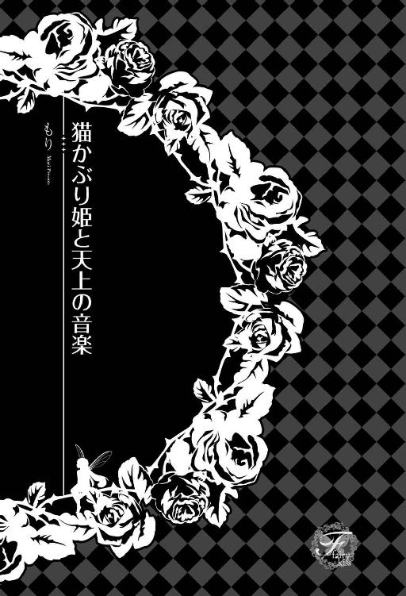
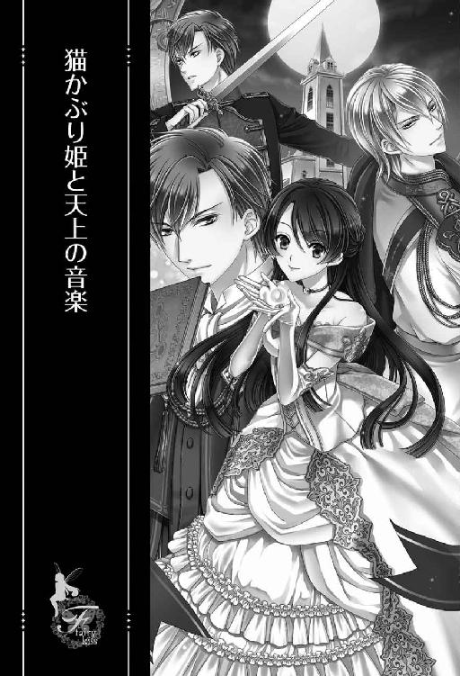
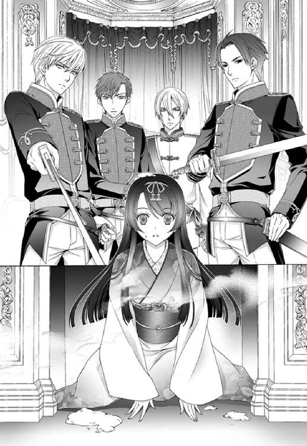
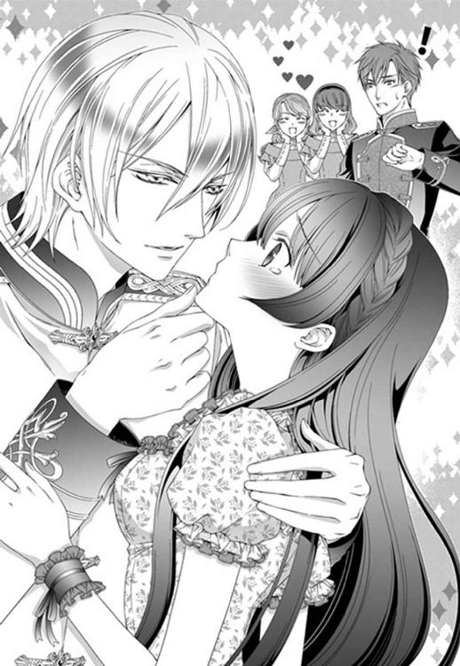
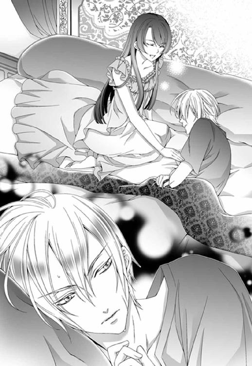
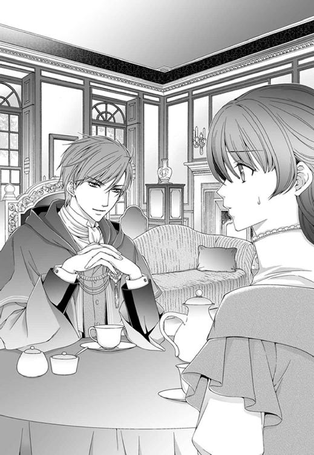
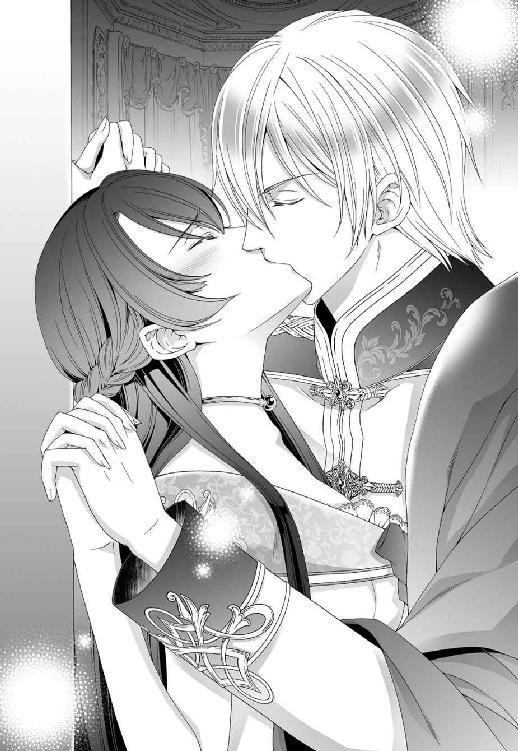
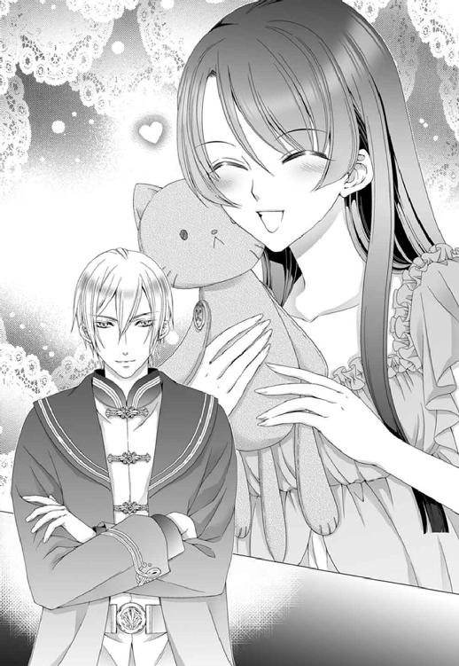
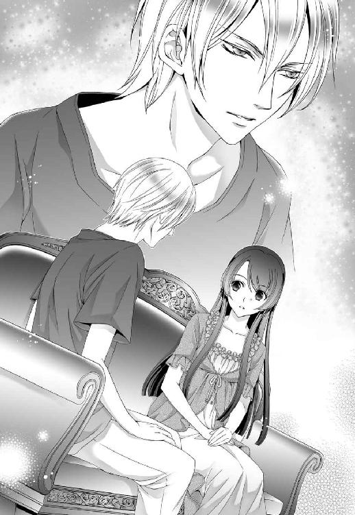
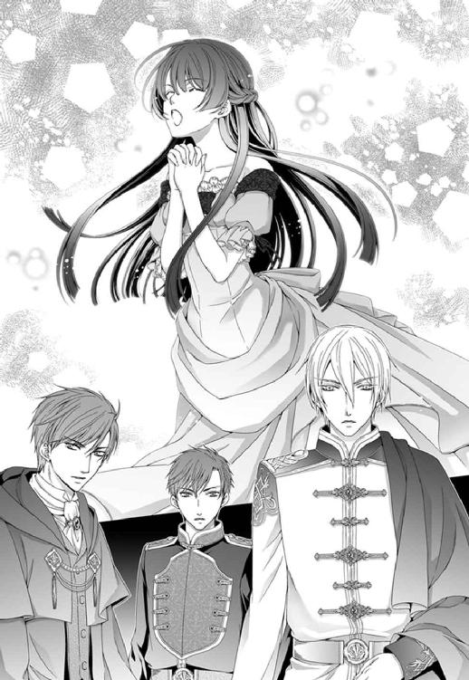

| 猫かぶり姫と天上の音楽【SS付】【イラスト付】 (フェアリーキス) | |
| もり | |
| 株式会社ジュリアンパブリッシング (2016) | |

この物語はフィクションであり、実在の人物・団体・事件等とは、いっさい関係ありません。
イラスト・由貴海里

面倒くさがりも程々に。
「花、お前の結婚相手が決まった」
始まりは、十日前に告げられた父親からの一言。
父親に書斎へ呼び出された時から、小泉花には悪い予感しかなく、心がまえをしていたのだが、さすがにこの言葉には驚きを隠すことができなかった。
「まあ......少し花よりは年上だが、誠実な方だと聞き及んでいる。家柄も申し分ないし、何より将来はあの桜庭グループの総帥だ。花は今以上に何不自由ない生活ができるぞ」
嬉々として言う父の顔をちらりと見たものの、花は何も言わなかった。口を開けば突っ込みしか出そうにないからだ。
（少しって！ 少し年上って、十八歳年上は少しですか？）
渡された釣書を見れば、立派な学歴に趣味・特技。ただし、年齢は三十八歳。身長、体重は添えられた写真を見れば明らかにサバを読んでいることがわかる。
それでもどうにか抵抗しようと、花は意を決して口を開いた。
「ですが、お父様。私はまだ学生ですし、卒業まであと二年もあります。それに私の希望ではドイツかオーストリアにある音楽学校へ留学したいとも考えております」
「先方は大学卒業までは待ってくださるそうだ。留学は......諦めろ。ピアニストになるわけでもなし、留学などしても無駄なだけだ。ピアノなど、結婚してからでもいくらでも弾けるだろう」
「......わかりました」
言いたいことはたくさんあったが、「ピアノなど」と言う父親にこれ以上抵抗しても無駄だと思い、花は諦めた。
（もう結婚は決まりみたいね。まあ、桜庭グループと縁故ができれば小泉商事も安泰だから当たり前か。この様子だと、結婚式の日取りまで決まってるかも。でも、今以上に何不自由ない生活って......確かに物質的には恵まれているけれど、お父様もお母様も、私が本当にほしいものが何かなんて訊いてもくれない。私はただ『愛されている』って感じたい。たった少しでいいのに。今までずっと名門のお嬢様学校とやらに通わせてもらったけれど、十八歳も年上の相手に売り渡すのかと思えば、『愛』っていうより『投資』でしたね、はい。それにきっと、成り上がりと揶揄されることもある桜庭家としても、千年は簡単に遡れる『由緒正しい旧家』出身の『箱入り娘』が必要なんでしょうね。ピアノが続けられるなら、それで良しとしないと）
花は手元の写真に視線を落としてため息を吐いた。
そんな娘の様子に気付かなかったのか無視しただけなのか、花の父親はすっかり冷めてしまったコーヒーを飲み干し、「会社に行ってくる」と言って、書斎から出ていく。
「いってらっしゃいませ」
花は立ち上がって父親を見送ると、持ったままだった写真......見合い写真を釣書とともに小脇に抱えて書斎を出た。
すると父親を見送った母親が心配そうな視線を向けてきたが、気付かないふりをして部屋に戻り、大学用の鞄を取り上げると急いで玄関に向かう。
（心配はしても、夫に逆らってまでの行動はしないか......『母親の愛』もそんなものよね）
冷めた気分で母親に笑顔を向け、外へと飛び出した。
「いってきます！」
母親の返事は聞こえなかったが、別にどうでもいい。
ただ苛々したまま大学へ向かいながら、さっそく友達の沙耶へＳＮＳで連絡を取った。
「で、これなの？」
「そう、それなの」
花は大学のカフェテリアのテーブルに座り、向かいに座る唯一と言っていい親友の端的な質問に、端的に返した。
二人の間のテーブルには、父親から渡された見合い写真と釣書が広げられている。
「身長百七十一センチってあるけど......どう見ても百七十センチもないと......ってか、百六十五センチあるかどうかも怪しくない?」
「まあ、シークレットブーツを履けば私よりは背が高く見えるんじゃないかな？」
「......花がヒール履かなければね」
花の身長は百六十四センチである。
「禿げてるし......」
「まあ、桜庭グループの重役なんて気苦労が多いんじゃない？」
「太ってるし......」
「まあ、ストレスで食べすぎたのかもね？」
「しかも、三十八歳って......たとえ外見が悪くても桜庭グループの跡取りってだけでいくらでも女が寄ってきそうなのに、未だに独身って、性格やら他にもかなり問題があるんじゃない？」
「もう、沙耶ったら！ さっきからひどいことばっかり言って！ 少しくらいは前向きなことを言ってよ！ 男は見かけじゃない、性格が一番大事とか何とかないの？ じゃないと、ますますへこむじゃない！ 未だに独身なのはきっと忙しすぎて婚期を逃していただけよ！ ......ということにして」
「そうですネー。きっと、その通りだと思いマス。......って、その言い様だと本気でこの話を受ける気なの？」
「受ける気っていうか、断るの面倒です」
「いやいや、面倒ってあんた！ 一生の問題だよ!? これとキスできるの!? セックスできるの!?」
「沙耶、声が大きいって......。でもまあ......目を瞑ればできると思う」
「バカだ......ここにバカがいる」
「私は音楽があれば、ピアノがあれば、それでいいの。これと結婚してもきっとピアノは続けられるから」
「そもそも、結婚相手のことを『これ』って呼んでる時点で問題だと思うけど......。あんたはホント音楽バカって言うか......あ、やっぱりバカなのか......しかし......これはないでしょ？ 花なら音楽が続けられる結婚相手なんていくらでも見つけられるでしょうに」
「でも、お父様からのお話だからもう決定事項だと思う。逆らうの面倒だから。音楽に関係する以外の面倒は引き受けたくない」
「あんたの面倒くさがりも大概だよね......面倒だからいい子ちゃんを演じてるんだもんね」
「いい子ちゃんでいると楽だから。嫌なことがあっても、心の中で悪態ついとけばスッキリするし。まあ、家族も先生も上っ面の私しか見てないってことだよね。あ、沙耶は違うよ？ 唯一本心を語れる心の友だもん」
「心の友って......まあ、あんたの心の中にはブラック花が棲んでるよね。上手に猫かぶってるけど......みんなこの猫かぶりに騙されてるよね」
「いやいやいや、羊の皮を被った女豹の沙耶さんには負けます」
「女豹かよ......」
「さて、女豹さん。次の授業が始まりますわよ。私は第三ピアノ室ですのでこれで失礼いたしますわ。ごきげんよう」
「......猫かぶりめ」
そうして二人はそれぞれのレッスン室へ向かった。
二人とも音楽科のピアノ専攻の三回生である。
おそらく面倒くさがりな花でも、内部進学ができるこの大学に音楽科がなければ、父親を説得してでも音楽科のある大学へ外部受験したであろう。
それほどに音楽は──ピアノは、花にとって大事なものだった。
◇ ◇ ◇
「では、後はお若いお二人で......」
仲人を引き受けてくれたらしい、とある銀行の頭取の奥様が、お見合いの席での常套句を告げると、仲人夫妻と花の母親と、お相手の桜庭ナントカさんの母親が席を立った。
（桜庭......何て言うんだっけ？ ま、いっか。『桜庭さん』で。んー桜庭か......結婚すれば『桜庭花』になるのか......ちょっと、ううん、かなり微妙）
お見合いの場になったのは、星がいくつもついた、とあるホテルの料亭。
その一室で二人きりになってしまってからは、しばらく沈黙が続いていたが、ようやく桜庭が口を開いた。
「花さんは大学でピアノを専攻していらっしゃるそうですね。よかったら弾いていただけませんか？」
その言葉に花は顔を上げ、桜庭の顔を見た。
（あ、鼻毛出てる。しかも三本も。さっきまで出てなかったのに......って、そうじゃなくピアノね......）
「そうですね、でしたら近いうちにぜひ我が家へ遊びに来てください。我が家自慢のピアノで演奏をお聴かせいたします。桜庭さんがいらっしゃるなんて、きっと両親は喜びますから」
花はにっこり笑って教科書通りの心にもないことを言った。
「それは嬉しいお誘いだ。あ、でも......ここのラウンジにはピアノがありますよ？ そこで弾いてくださいよ」
（ええ!? ラウンジでって......この振り袖姿で？ お茶を楽しんでいらっしゃる他の皆様の前で？ 何言ってるの、このおじさん）
「いえ......残念ながら、皆様にお聴かせするほどの腕ではございませんので......桜庭さんにも恥をかかせてしまいますから......」
再びにっこり笑って婉曲に断った。が、通じない。
「でも、ピアノ専攻してるんでしょ？ 上手なんでしょ？」
（すごい......本物のバカ坊を初めて見ました。ちょっと感動です）
「上手かどうかは......ただ好きで、勉強させていただいているだけですから。それに、私は小心者なので、人前で弾くのはちょっと......」
（これで引き下がる？ というか、引き下がれ！）
「わかりました。では、ちょっと待っててください」
そう言って桜庭は席を立った。
（やれやれ、引き下がった......さて、これからどうしたらいいのかな？ お庭散策とかが定番？ というか、帯苦しい。お手洗いに行きたい。でも面倒くさい。もう帰りたい）
一人鬱々としていると、桜庭が戻ってきた。
「じゃあ、行きましょうか」
（どこに？ と聞きたいけど、淑女としては紳士の後ろを三歩下がって黙ってついていくべきなのかな......いや、なんか違う？ まあ、いいか）
花はわずかに戸惑ったものの黙って後をついていき、エレベーターに乗って桜庭が最上階のボタンを押すのを見た。
（？？？ 屋上庭園か何かかな？）
などと疑問に思っているうちに目的の階に着き、エレベーターを降りる。
（......客室？ にしては......？）
そうこうしているうちに、桜庭は大きな扉の前で止まり、金色のカードキーで扉の鍵を開けた。
「さ、どうぞ」
そう言うと扉の中、部屋らしき場所へと促してくる。
上手く引き下がることもできず、花は部屋の中へと足を踏み入れた。
そして、驚きに目を見張る。
（スイートルームだ。しかも、超がつくデラックスなスイートだ。たぶん、国賓級が泊まる......初めて入ったけど、ホントにすごいな......あ、そう言えば、このホテル桜庭グループの一つだ）
花の家も金持ちとはいえ、さすがにこんな部屋は利用したことがなかった。
驚きのあまり、一歩二歩と部屋の中に足を踏み入れた時、扉の閉まる音がした。
（あれ？ あの......これは二人っきりってやつですか？ もしかして、貞操の危機？）
まさかとは思いつつ、冷や汗が背中を伝う。
目を瞑れば我慢できると思っていたけど、さすがに初対面で鼻毛の出てるバカ坊とは......と焦っていると、桜庭が奥の扉を開けた。
「こっちがリビングになってるんです。ほら、あそこにピアノがあるでしょ？」
そう言って、部屋の中を指し示す。
『ピアノ』の言葉に花は反応し、先ほどまでの危機感も忘れ、桜庭の後をついてリビングに足を踏み入れ──歓喜の声を上げた。
「わあ！ ベヒシュタイン！」
喜び、ピアノの傍まで駆け寄り（と言っても、着物なので速くはない）まるで頬ずりでもせんばかりに顔を近づけてじっくり眺めた。
ベヒシュタインは花の一番のお気に入りのピアノメーカーだ。
これだけ広いリビングなら、きっと音響効果も考えられているに違いない。
「じゃあ、弾いてください」
「はい？」
桜庭の不躾な言葉に、喜んでいた花もさすがに驚いた。
正直、このピアノは弾きたい。でもこの格好で？ この振り袖にたすき掛けをしてピアノを弾いている姿を想像し、花は興ざめしてしまった。
「ここなら人目もありませんから弾けるでしょ？」
そう言って、桜庭はニタリと笑った。
（バカ坊がニタリと笑うなんて......残念。というか、気持ち悪いです）
桜庭の意図はわかったものの......納得はできないけれど半ばやけくそのような、でもベヒシュタインが弾けるという誘惑もあり、花は少し無理して弾くことにした。
「じゃあ、少しだけ......簡単なものを」
そう言って、ピアノの前に座り鍵盤を弾き出した。
弾き出すと気分が高揚してきて次第にピアノと自分だけの世界に入っていく。
そうして、三曲弾き終えたところで、ふと目線を上げると、すぐ傍まで桜庭が寄っていたことに驚いた。
「げ！ ......あの......どうでしたでしょうか？」
恐る恐る訊きながら立ち上がり、距離を取ろうとしたが、桜庭にがっしりと手を摑まれてしまった。
（ひいっ！）
「素晴らしい！ 実に素晴らしい！ この繊細な手があんな素晴らしい曲を奏でるなんて信じられない！」
そう言って桜庭は詰め寄ってくる。
なんとか花は距離を取ろうと後ずさるが、桜庭はどんどん前へと来るので、気がつけば壁際まで追い詰められていた。
（この人、素晴らしいしか言わないよ。ボキャブラリー少ない！ それに顔近い！ 近すぎてキモイ！ というか、目線変わらないんですけど？ 身長サバ読みすぎだよ！ ......いや、そうじゃなくて！ どうすればいいの？ て、顔近づいてきた！ ぎゃあああああ！）
なんとか花は桜庭を押しやり逃げようとするが、着物が絡まって上手く足が動かない。
（すみません。嘘言いました。目を瞑っても我慢できません！ できませんでした！）
切羽詰まったこの状況で、誰に言っているのかどうでもいいことを謝る。
今は逃げることが先決だというのに、パニックとは恐ろしいものである。そうして、花は廊下への扉でなく、バルコニーへ続く窓へと向かい外に出た。
「花さん、どうして逃げるんですか？ どうせ、結婚するんだからいいじゃないですか。ただの婚前交渉ですよ」
そう言って、ニタつきながら桜庭は花をゆっくりと追い詰める。
バルコニーの手すりに縋り、近づく桜庭に恐怖の目を向け、花は叫んだ。
「ごめんなさい！ 無理です！」
「無理でも我慢してもらわなきゃ」
（ぎゃあああ！ なんていうか生理的に無理！）
さらに距離を詰める桜庭に、限界に達した花はバルコニーから身を乗り出した。
（落ちる！）
そう思った瞬間、花は地面に向けて落下していった......はずだったのに──。
◇ ◇ ◇
目に映る空の青さが眩しくて、まぶたを閉じる。
（ああ、私はここで死ぬんだ。たった二十年の短い人生だったけど、最後にベヒシュタインも弾けたし、まあいいか......。でも私、恋もしたことなかったな。どうせ結婚相手は選べない、そう思うと恋をしようとも思わなかったし、合コンも面倒で参加しなかった。少しくらい参加すればよかった。キスどころか、手さえ繋いだこともないんだから......。いや、ひょっとしてさっきのアレって手を繋いだことになるのかな？ ......アレと？ アレが最初で最後？ それはイヤ！ ありえない！ ああ、神様お願いします！ アレが最初で最後ってのはやめてください！）
「うん、わかった」
「......へ？」
心の中で必死に祈っていた花の耳に、ずいぶん軽い調子の声が聞こえた。
その状況が理解できなくて、花の思考は一時停止する。
「だから、そのお願い聞いてあげるよ」
「へ？」
何がなんだかわからない声がまた聞こえる。
（っていうか、私いつまで落下してるの？）
そう思い、恐る恐る目を開けた花の視界に入ってきたのは──ただの白い空間。
（ああ、これが死後の世界か。お花畑とかないんだ......）
きょろきょろしてそう思った花は、地面に足を着けてないことに気付いた。
（浮いているのかな？ ......いや......お尻と背中に当たるこの感触は違う気がする......？）
少し落ち着いて自分を見下ろすと、横になった自分の体を支えるような手が見える。
綺麗な手だ。
いや、突っ込むのはそこではなくて......。これはいわゆるお姫様抱っこというやつではと思いながら、花はそっと視線を上げた。その先にあったのは無邪気に笑う亜麻色の髪の美少年だった。
「......あの、できたら下ろしてもらえませんか？」
「いや」
「はあ、そうですか」
（困ったな。この体勢......やっぱりお姫様抱っこだ。しかも、自分より年下っぽい美少年に......。華奢に見えてしっかりしているんだなあ。人生初の体験です。あ、死後初の体験かな？）
「いや、まだ花ちゃんは死んでないから人生初でいいんじゃない？ 落ちてたから僕が拾ったんだもん」
「ああ、それはそれはご丁寧にありがとうございました。じゃあ、あの私、そろそろ帰りたいのですが......」
「ダメだよ、帰さない。僕が拾ったんだから僕のだよ」
「いえいえ、それはネコババってやつですよ。拾得物はちゃんと交番に届けないといけないんですよ？ 後ほど二割のお礼も致しますから、どうぞ帰してください」
「へえ？ じゃあ命の二割って何くれるの？ 例えば花ちゃんが八十歳まであと六十年間生きるとして、その六十年の二割、十二年の命くれるの？ だとしたら、花ちゃんの寿命は六十八歳か......まあ、そもそもこれは間違った計算だけどね。花ちゃんはここで死ぬ予定だったんだから。そう考えると、花ちゃんの寿命は０年だからその二割のお礼って無理だよね？ どうする？」
「いえ、どうするって言われても......どうしましょう？」
突っ込みどころは色々あるが、花はそれらを全て流して考え込んでしまった。
そんな花を見て、美少年は無邪気に笑う。
「だから、花ちゃんはもう僕のだって言ってるじゃん。というわけで花ちゃんには使命を与えます！」
「はあ」
「あのね、ぶっちゃけると、僕って『神様』なんだ♪」
「ああ、それはご苦労さまです」
「いえ、ご丁寧にどうも......ってそうじゃなくて！ もう、さすが僕が気に入っただけあって反応が面白いな。あのね......僕は『神様』って言っても、花ちゃんの住んでいた世界の『神様』じゃなくて、違う世界の『神様』なの」
「はあ」
「で、僕が『神様』やってる世界の一つにユシュタールって言う世界があってね。順調に発展してたところなのに、今ちょっとヤバくてね」
「はあ」
「崩壊の危機に瀕してるんだ」
「それはご愁傷様です」
「いや、まだ大丈夫だから。ユシュタールのみんなも頑張ってるから。で、崩壊を防ぐために頑張ってくれる分、みんなの心も体も疲弊してて気の毒なんだよ」
「はあ」
「で、花ちゃんにみんなを癒してあげてほしいと思って」
「はあ............はぁ!?」
「それが僕からの花ちゃんへの使命です！」
ご機嫌で自称『神様』は言うのだが、意味がわからない。
「あの......それなら『神様』がなんとかしてあげればいいんじゃないですか？」
もっともな提案をする花に、自称『神様』はチッチッッチッ！ と舌を鳴らしながら人差し指を立て、顔の前で振った。
少年のようでいて、花を片手で支えているのだからずいぶん力持ちだ。
「それができたら、苦労しないんだけどね。残念ながら僕は手を貸すことができない。なぜならそれはルールだから。『神様』には『神様』のルールがあってね......無闇やたらと手を貸すことはできないんだよ。それに僕はこう見えて忙しいから、せいぜい『神様の使徒』を遣わすことぐらいしかできないんだ」
「はあ。使徒ですか......」
「そう、使徒だよ。じゃあ、頑張ってね！ 花ちゃん♪」
「え？ ちょ、ちょっと待ってください！ 使徒って私のことですか!?」
「そうだよ？」
「いやいやいや......。私、何もできません！ 奇跡とか起こせませんけど!?」
「大丈夫！ さっきも言ったけど、みんなを癒してあげてほしいだけだから」
「だからどうやって!?」
「音楽だよ」
「音楽？」
「そう、音楽。そもそも 僕が花ちゃんを助けようと思ったのは、君のその音楽による癒しの才能だよ」
「癒しの才能？」
「そう。あまりにも綺麗な癒される音が聞こえてくると思って、ふらふらとあそこに吸い寄せられたら、花ちゃんが落っこちてきてさ。もったいないから拾ったの」
「なるほど」
「では、ご納得いただけたようなので、よろしく！ じゃあ、僕忙しいからもう行くね！ あ、そうそう、とりあえず一番癒しが必要な子の所に届けるから。ユシュタールで素敵な音楽を奏でてね～～！」
と言いながら、自称『神様』の声は遠ざかっていく。それと同時に視界は暗闇に染まり、平衡感覚がなくなる。
「ええ!? ちょっと待って！ まだ納得してないんですけど～～！」
叫ぶ花の声は虚しく未知なる世界に吸い込まれていったのだった。
己を知ろう。
新月の夜の闇がもっとも深まる頃。
長い歴史を誇るマグノリア帝国の美しき皇帝・ルカシュテインファン──ルークは、首都サイノスの皇宮にて猛烈に後悔していた。
目の前で膝をつき、大げさに嘆願する内大臣のドイルが見苦しく、鬱陶しくて仕方がないのだ。
「陛下、たしかにご正妃をお決めになるのは難しいかもしれません。あの悲劇を思い出されれば、なおさら忌避なさるお気持ちもおありでしょう。しかし、ご側室でさえお一人もいらっしゃらないのは......。今現在、後宮に仕える者たちは暇を持て余し、戸惑っております。この者たちのためにもどうかご側室をお決めください。深くお考えにならずともよいではありませんか。貴族の娘たちの中から二、三人適当に召し上げれば、そのうち情も湧きましょう。私は......いえ、私を含めた陛下の臣は皆、陛下の御子を待ち望んでおります。今現在のこの不安定なユシュタールで陛下の御子がお生まれになれば、きっとマグノリア国内だけでなくユシュタール全土に希望が満ち溢れることでしょう。陛下がお気を煩わせる必要はございません。よろしければ私どもで程良い娘を見繕いますゆえ」
そう述べると、ドイルは深々と頭を下げた。
入室を許可されてからずっと無言を通すルークを前にして、緊張のあまり焦っていたのか、少々早口になっていた。
それでも言いたいことは述べたと安堵したのか、それともルークが「是」と言うとでも思っているのか、ドイルは満足げな表情である。
結局ドイルが言いたかったのは最後の一言だろう。
今すぐ「否」と答えて、ドイルを追い出したいが、それもこの場限りのこと。
ドイルだけでなく、多くの貴族たちがあの手この手でルークに縁談を持ちかけてくるのだ。
本当に煩わしくて仕方ないのだが、この瞬間のルークの苛立ちは、背後に控えている近衛騎士隊長のレナード・ユースに向けられていた。
この状況においてレナードは絶対に笑いを堪えている。
その気配を感じながらも、ルークはドイルへ冷ややかに答えた。
「そなたは......余の治世では不安か？」
「い、いえっ！ そのようなことは決して！」
まったく感情がうかがえないルークの声に、ドイルは青ざめ、床に頭をこすり付けんばかりに平伏した。
後宮に自身の息のかかった娘を送り寵を受けさせれば、ドイルの皇宮での力も増す。
そのようなあさましい考えからの上申なのだろうが、このままでは不敬罪で投獄されかねないと思ったのだろう。
慌てて取り繕おうとするドイルであったが──。
「陛下」
レナードの突然の呼びかけに、ルークは「わかっている」と言うようにプラチナブロンドの髪を軽く揺らして頷き、ドイルに言葉をかけた。
「さて、余はこれから部屋に戻るが、そなたも一緒に参らぬか？」
「は？ ......あ、あの......私めが陛下のお部屋に？」
「嫌か？」
「とっ、とんでもございません！ ぜひ！」
慌てて否定したドイルは、「そうか」と呟き席を立ったルークの後に続いた。もちろん、ルークのすぐ後ろにはレナードが付き従うので、その三歩ほど後ろに従う形でだが。
執務室を出た三人の後に皇帝付きの近衛騎士が二人付き従う。
ドイルにはルークの意図がさっぱり読めないようで、どこか不安そうにしている。
そのうちに、ルークの私室の前に着いた。その扉を近衛の一人が勢いよく開け、飛び込む。
もう一人の近衛はルークの前で庇うように、そしてレナードは相変わらずルークのすぐ後ろに控えているが、いずれも腰に佩いている剣の柄を握りしめ、いつでも抜刀できるようにかまえている。
そんな緊張感溢れる中で、ルークは皮肉げな笑みを浮かべていた。
何が何だかわからないまま、ドイルは緊張に強張った顔で必死にルークの私室内をうかがった。
そこには挑発的な夜着を纏った女が、近衛に剣を喉元に突きつけられたまま青ざめて立ちすくんでいた。
「へ、陛下！」
女は縋るようにルークに呼びかけた。
その女は最近、社交界で『可憐な乙女』と人気を博している、とある伯爵家の娘だった。
（可憐な乙女がよくやる）
レナードは思わず失笑してしまったが、ルークの苛立ちが痛いほどに感じられ、娘を出ていかせようとした。
しかし、娘はレナードが行動に移るよりも早く、ルークへ媚びるように言葉を紡ぐ。
「陛下......私、あの......陛下をお慰めしようと......」
なんとも傲慢で恥知らずな言葉に一同息を呑んだが、ルークは表情を変えないまま、娘に剣を突きつけている近衛に視線を向けた。
「剣を引け」
その言葉に近衛は従い、剣を下ろした。
それに気を良くした娘は、許されたと思ったのか、緊迫した状況にも気付かず、純真さの中に妖艶さが浮かぶ、そんな笑みをルークに向けた。
「そのような慰めなど必要ない。早々に立ち去れ」
「ですが、陛下......」
どうにか自制して発したルークの言葉も聞かず、娘はルークへさらに近づき、その左腕に触れた。
レナードははっとして娘を止めようとしたが遅かった。
緊迫した室内に娘の悲鳴が響く。
右腕を押さえて苦しそうに呻き涙を流す娘を、その場に立ったままルークは無表情に見下ろしていた。
だがレナードは、ルークの顔に一瞬浮かんだ悲痛な表情を見逃さなかった。
「余に触れるな」
一言呟いたルークは、青ざめガタガタと震えるドイルと、少し顔色が悪いながらも毅然と立つ近衛の一人、ランディに命じた。
「ランディ、この娘を牢へ。罪状は余の部屋への侵入と不敬罪だ。ドイルはその旨の書類を作れ。証人はそなたでいいな」
用は終わったとばかりに背を向けた皇帝にレナードは慌てて声をかけた。
「陛下、医師の手配はいかがいたしましょう？」
その言葉に、奥へと向かいかけたルークは振り向き、ふっと笑った。
「そうだな、医師の手配を。その娘の右腕はもう切り落とすしかないだろうからな」
その言葉を最後にルークは奥の部屋へと姿を消した。
ランディは、右腕を──いや右腕だったと思われる黒いものを押さえたまま泣き叫ぶ娘を強引に立ち上がらせ、部屋の外へと連れていく。
それに続いてもう一人の近衛も部屋を出た。部屋の外、扉の前で不寝の番をするのだろう。
その場に立ち尽くし、呆然としたままのドイルにレナードは声をかけた。
「ドイル殿、大丈夫か？」
その声に、ハッとしたドイルは慌てて転がるように部屋から出ていった。
そうして、ルークの私室の居間に一人になったレナードは、ソファに体を投げかけるように勢いよく座り、眉間を揉みほぐした。
（確かに、あの右腕は切り落とすしかないだろうな。馬鹿な娘だ）
娘がルークの腕に触れた途端、嫌な臭いがした。
それはルークに触れた娘の腕が焼けて焦げる臭いで、レナードが目を向けた時にはほぼ炭と化していた。
ほんの一瞬の間に、ルークの攻撃魔法が発動したのだ。
ルークの魔力は圧倒的に強すぎ、魔法を発動させるための詠唱さえ必要としない。
その強すぎる魔力で他国を抑え、帝国だけでなく、不安定なユシュタール全土を支えていると言っても過言ではないが、それ故に孤独を強いられている。
（あの娘の言葉ではないが、誰か陛下を......ルークの孤独を癒し、慰めてくれる者があればよいのだが......）
無意識に片手で亜麻色の髪をくしゃくしゃにしながら考え込むレナードのもとに、琥珀色の液体が入った瓶とグラスを二つ抱えたルークが戻ってきた。
そして、自分とレナードのために液体をグラスに注ぐ。
晩餐のための礼装から、くつろぐための服装へと着替えている。
マグノリア帝国の皇帝ともあろうものが、自分で着替え、臣下のために酒を注ぐなど普通はありえないだろうが、現皇帝であるルークはそうしたことを苦としない。
むしろ傍に侍従が控えるのを嫌がり、必要最低限しか人を置かない。本当は近衛さえも嫌なのだが、それは対外的にも必要なので我慢しているありさまだ。
ただし幼い頃から親しくしているレナードのような一部の者には気を許し、愛称であるルークと呼ばせている。もちろん、人目のない時だけだが。
「ルーク、大丈夫か？」
怪我をしたのは娘であるにもかかわらず、レナードはルークを気遣う言葉をかけた。
だが、ルークはふんと鼻を鳴らす。
「別に......あの娘が愚かなだけだ。まだドイルの方が立場をわきまえている」
その言葉にレナードは眉間にしわを寄せた。
あの出来事はおそらくドイルから貴族たちに広がるだろう。後宮に娘を入れようとする貴族たちも、これでまた当分は大人しくなるはずだ。
ルークには到底及ばないが、レナードもかなり強い魔力を有している。ルークの部屋に何者かが侵入したことはすぐにわかった。この皇宮にはルークの結界が施されているのだから。
侵入者が何者かまではレナードにはわからなかったが、おそらくルークにはわかったはずだ。
（ルークは最近うるさく飛び回る貴族たちへの牽制のために、あの場にドイルも連れていったのだろう。そして、ほんの少し娘を脅すだけのつもりが......）
ごく一部の者しか知らないが、ルークには特別な力がある。人に触れればその考えが読み取れるのだ。
あの時、力が暴走してしまったのは、きっと醜い欲望を読み取ってしまったからだろう。
レナードはさらに眉間のしわを深めた。
「レナード、あの娘を手引きした者を探り出せ」
そう告げると、ルークは琥珀色の酒を飲み干して立ち上がり、奥の部屋──寝室へと姿を消した。
レナードも残っていた酒を勢いよく飲み干してから部屋を出ていった。
◇ ◇ ◇
貴族の情報伝達は恐ろしく速い。
十日後、もはや皇宮内であの夜の出来事を知らぬ者はおらず、あちらこちらで冷酷な皇帝の噂が囁かれている。
あの夜の翌日の朝には娘の父親である伯爵が恐怖に顔を引きつらせた顔で、ルークに平身低頭謝罪した。
娘を部屋に招き入れた人物はまだわかっていないが、今回はこの伯爵でないことは確かであったため、ルークは伯爵に娘の監督不行き届きとして一週間の謹慎処分を下しただけだった。
魔力を使えば犯人などすぐにわかるが、それには人の心に作用する魔法を使わねばならないため、魔力の消費が激しい。
こんなことで魔力を大量に消費するのは馬鹿らしく、ルークはあえて力を使わなかった。
ユシュタール崩壊の危機に晒されている今は特に、力を無駄に消費することはできない。
そもそも、こんな煩わしい問題を引き起こす後宮自体つぶしてしまいたいが、それはさすがにすんなり片付く問題ではなかった。
珍しく大きなため息を吐いたルークに、後ろに控えているレナードが小さく笑う。
「どうした、ため息なんか吐いて。恋煩いか？」
「うるさい。黙れ。死ね」
「皇帝陛下のご命令とあらば、この命、今この場で陛下に捧げましょう！」
「うるさい。黙れ。バカ」
「ご命令は撤回ですか？ それは恐悦至極に存じます」
もう反応するのもバカらしく、仕事を片付けようと書類に目をやった時に、ルークの私室の結界が反応した。
「まただ、ルーク」
「まただな......しかも女だ」
今度は二人でため息を吐き、執務室を後にした。
転移魔法で部屋に行ってもいいのだが、まあ一応、近衛を連れていくかと、歩いて部屋に向かう。
そもそもルークには近衛など必要ないくらいの強さがあり、それにレナードが加われば、おそらく一国の軍隊でも立ち向かえるかどうかすらわからないのだが。
十日前と同じように──いやドイルがいないので同じとはいえないが、再び扉の前に四人は立った。
「......明かりはついていませんね」
室内の気配を慎重に探ったレナードがそっと囁く。
「──開けろ」
レナードの言葉にかまわず、ルークは従っていた近衛騎士の一人に命じた。
そして扉は開かれ──ルークも皆も、言葉を失った。
夢オチを希望します。
長い間ちかちかと光が瞬く不思議な場所をさまよったような気もするが、ほんの一瞬だったような気もする。
花は無事に着地できたことに気がついた。視界は薄闇の中にあるのだが......。
（ええっと......私どうしたんだっけ？ バルコニーから落ちて......あ、『神様』に会って、まさかの展開で......とにかく今現在私はどこにいるの......？）
どうにか頭の中を整理して、手探りで周りを調べてみる。どうやら花は座った姿勢らしい。
少し平衡感覚を失くしてふわふわするが、自分の体勢は把握できた。そして地面らしきところに手をつく。
（......砂？）
ずいぶんサラサラとした砂の上に座っているらしいことがわかった。
腰を上げようとした瞬間、パッと目の前が明るくなって、あまりの眩しさに花は目をつぶる。
そうして、光に慣れた頃合いを見て、そろそろとまぶたを上げると......キラリと光るものが目に入り、またまぶたを閉じた。
（おーい！ 『神様』、聞いてないよ～！ これ、夢オチとかってないかな？ ないかな？ ないよね～）
そうして、また恐る恐るまぶたを上げた。
（やっぱり夢オチはダメだったか。くそっ！）
花は乙女にあるまじき悪態を心の中でつき、冷静に状況を理解しようとした。
（はい、只今の状況、喉に剣が突きつけられています。それも二振り。目の前には四人の男性が立っています。みんなこちらを見下ろしています。当然ですね。そして、私は今現在、どうやら......暖炉です！ ここは暖炉です！ 暖炉の中でなんと、正座してます！ しかも振り袖で！ サンタクロースでもないのに。そうだね、最近はサンタクロースも不法侵入で捕まる時代だもんね。世知辛い世の中だよ......でも私はプレゼントを届けに来たのではなく、むしろ届けられたほうで......どうすればいいんでしょうか？）
無言できょろきょろしていたかと思えば、ウーンと黙り込んでしまった花にしびれを切らしたのか、四人の男のうちの一人が声をかけてきた。
「お前は何者だ？」
（おお！ ......ぬおおおお!? なんかすごいイケメンさん！ さすが異世界。髪の毛がキラキラしてる。これはプラチナブロンドってやつですね？ しかも綺麗な瞳......琥珀色......いや、金色だ！ 造作も整ってるし、眼福です！ プラチナブロンドのイケメンって言いにくいから、銀髪のイケメンと呼ぼう。プラチナからシルバーに格下げしてすみません）

質問に答えず、花はひたすら無言でイケメンを見つめていると、イケメンはため息を吐いて「立て」と言った。
それでも動かずにいると（というか、動けないのだが）、剣を突きつけていたうちの一人が剣をかまえたまま花の腕を摑み、無理矢理立たせた。
「あっ！ ちょっ！」
花は慌てて立とうとしたが、振り袖であったためといきなり乱暴にされたためにふらついてしまった（決して足がしびれてしまったからではない）。
それをすかさず、もう一人の剣を持った男が支える。
（おお！ 紳士ですね......いや、剣を突きつけている時点で違うか。それにしても、この剣士？ 二人もかなりイケメンです。赤髪の剣士に金髪の剣士。それにもう一人、なんだか驚いた顔のまま固まっているけど、彼もかなりのイケメン......というか、この亜麻色の髪のイケメンって『神様』にすごく似ている。『神様』を大人にした感じです。ここまですごいイケメンが四人も揃っているなんて、ここはイケメンパラダイス？）
そんな花の思考を読んだわけではないだろうに、銀髪のイケメンは再び大きなため息を吐いた。
「もう一度聞く。お前は何者だ？ そして何のために、また、どうやってこの部屋に入った？」
銀髪のイケメン──ルークにはこの女が不思議でならなかった。
ルークの結界が張られたこの部屋に──いや、この皇宮に許可なく入ることは不可能に近い。
魔力の欠片も感じられないこの女が侵入したということも驚きだが、そもそも魔力がまったく感じられないのが信じられなかった。
ユシュタールに生きるものには全てに大なり小なり必ず魔力が宿るというのに、欠片も感じられないとは巧妙に隠しているのか。
ルークから上手く魔力を隠すということは、即ち、ルークよりも魔力が優れているということだ。とすれば、この皇宮に侵入することも不可能でないだろう。
だが、どうにもそのようには感じられなかった。
（では、誰かが引き入れたのか？ だとしたら何のために？ 暗殺だろうか？ いや、それなら魔力のまったくないこの女に俺を暗殺することなど無理だ）
そこまで考えて、ルークは別の可能性に気付いたが、それにしては女の格好はずいぶん珍妙だった。
（ひょっとして人間ではなく魔物なのか？ ......いや、魔力のない魔物などありえない）
ルークだけでなく、この場にいる他の者たちも同じように、女の正体について考えをめぐらせていたが、わかるはずもなかった。
一方、「何者だ？」と問われた花もまた悩んでいた。
（何者だと聞かれても......どう答えればいいのやら。『神様』から聞いたことを素直に答えて信じてくれる？ いや、それはないよね。だって自分自身でも信じられないし、怪しすぎるから。いきなり暖炉に正座してる女って......怖くない？ 怖いよね！ しかも着物で！ 座敷童か、呪いの人形かっての！ この腰までの真っ直ぐな黒髪がさらに迫力を増すよね？ いや、こっちの人に呪いの日本人形って概念はないか......。いやいや、そこが問題点ではなくて今は、私の正体が問題なんだよね。『神様』に言われてここに来ましたって言っても怪しすぎる。投獄されなくても病院に監禁されてしまう可能性大。というか、そもそも『神様』の名前聞いてない。この世界で『神様』ってなんて呼ばれてるのか......『神様』でいいのかな？）
答えに詰まり、花は俯いた。そこでふと目にしたものに驚愕する。
（ぎゃあああああ！ 振り袖が！ これ、おばあ様の形見の着物なのに！ ......それが灰まみれになってる！）
花は着物に付いた灰を落とそうと、剣を突きつけられているのも忘れて慌てて手で叩いた。
すると、灰が宙に舞い、辺りが粉塵で霞がかってしまった。
すぐ傍にいた剣士の一人が咳き込み出す。そして当然、花も咳き込んでしまった。
他の三人も顔をしかめている。
「ず......ずびばぜ！ ゲホゲホッ！」
花は謝罪を口にするが、言葉にはならない。
そうこうしているうちに、銀髪のイケメンが衣服の袖口で口を押さえながら何やら呟いた。
途端にサッと空気が清浄になり、花と剣士の咳き込みまで治ってしまった。着物まで綺麗になっている。
「陛下、ありがとうございます。申し訳ございません」
剣士の言葉が聞こえたので、驚いていた花も慌てて謝罪とお礼を口にする。
「あ......私もありがとうございます。大変ご迷惑をおかけいたしました。申し訳ありませんでした」
そう言って深々とお辞儀をした花が顔を上げて見たのは、珍獣でも見るようなイケメンたちの表情だった。
しかし、パニックになっていた花の思考も今の騒動でずいぶん落ち着き、自分の正体について詳しくは伏せることにした。──と言っても、花自身詳しくわからないのが悲しいが。
（だって、どう考えても胡散臭いもん。この国での『神様』に対する信仰度もわからないし......）
そう結論付けた花は、落ちついた思考と共に戻ってきた体の変調に気がついてしまった。
（......やばい......すっかり忘れてたのに、今非常にやばい！ このままじゃ......）
恐る恐るイケメンたちの顔を見渡すと、再び疑いの眼差しを向けられている。
しかし、今この疑いを解いている暇は花にはない。
意を決した花はごくりと唾を呑み、口を開いた。
「あの！ すみません！」
「なんだ？」
訝しげに銀髪のイケメンが返す。他の三人もさらに眼差しを厳しくしているが、かまっていられない。
「お......」
「お？」
「お、お手洗いを貸してください！」
花が、乙女として何かを失った瞬間だった。
◇ ◇ ◇
（いや、なにも叫ばなくてもよかったよね、私......）
お手洗いに入ってひと息つくと冷静さが戻ってきて、花は自分の行動に頭を抱えたくなった。
（しかも、ここまでイケメンにエスコートされるなんて......ありえないくらいの恥ずかしさだよ。ああ、今ブラックホールがあるなら、迷わず飛び込むのに）
先ほど、驚いた四人の中でいち早く平静に戻ったのは、やはりというか銀髪のイケメンだった。
彼はにっこり微笑むと「案内しよう」と言って、手を差し出したのだ。
魂が抜けてしまいそうなほどの極上の微笑みに、漏れそうなことも忘れて──いや、むしろ別の意味で漏らしそうだったが、花はうっかり手を重ねてしまった。
すると彼はもう一方の手を花の背中に添えてトイレの前までエスコートしてくれ、「どうぞ」とトイレの扉を開いてくれたのだ。
（ダメだ！ やっぱり恥ずかしすぎる！）
そもそもこんな恥ずかしい思いをすることになったのも、ホテルで面倒くさがって行かなかったからだ。あの時に行っておけば、そもそも『神様』とも出くわさず、この世界には来ていなかったかもしれない。
（いや......その場合、あのバカ坊と結婚することになってたのかな......でも......あー、もう！ なんであの時、バルコニーから落ちたの!? 私のバカ！）
「はああ......」
盛大なため息を吐いてから立ち上がった花が着物を整えていると、なぜか水が流れた。
（......これって、水洗トイレ？ しかも感知式？）
驚いて周りをよく見てみると、水道の蛇口らしきものもある。
（ここって、雰囲気は昔のヨーロッパみたいな感じだけど設備は最新式？ ......どういう世界なんだろう）
そう思いながら、念入りにしっかりと手を洗う。
男性と手を繋ぐという人生初の行為を一方的とはいえ、あんなバカ坊によって奪われたのが、悔しくて腹が立つ。
（ま、でもさっき、銀髪イケメンと手を繋いだから人生最後ではないわ。『神様』ありがとう！）
記憶を素敵なものに置き換えて、ご機嫌になった花は鼻歌交じりにスキップでもしそうな勢いで、無駄に広い『お手洗い』の出口に向かい、扉を開けた。
そして──。
「ぎょえっ！」
と、乙女にあるまじき悲鳴を上げた。
扉を開けたすぐ外には四人の男、イケメンたちが立っていた。しかも、相変わらず剣士二人は剣をかまえて。
（し......死ぬ。私はきっとこのまま恥ずかしさで悶え死ぬ......）
羞恥に悶える花の内心には気付かず、銀髪のイケメンが剣士二人に剣を収めるように言うと、トイレの扉を開けたまま立ち尽くしている花に再び手を差し出して微笑んだ。
「とりあえず、あちらへ」
今度は微笑みに気を取られないように意識して、花はイケメンの手を取るべきかしばらく逡巡した後、覚悟を決めて手を添えた。
居間にある、見るからに高級そうなソファへと歩む。
（そもそも私、どれくらいトイレに籠ってた？ 考え事してたし、着物も大変だったしで、かなりの時間過ごしてたのでは......その間、ずっと待ってたのかな？ ......いやあああああ！ 違うんです！ ただ考え事してただけなんです～ぅぅぅ）
再び花は、心の中で悲鳴を上げたのだが──。
「くっ！」
と、笑いを堪えるような声が聞こえて、花は銀髪イケメンに視線を向けた。
（今、笑われた？）
しかし、彼は相変わらず優しげに微笑むだけで、他の三人も特に変わった様子はなかった。
（気のせい......？）
不思議ではあるが、よくわからない。
そうこうしているうちに「どうぞ」と促され、花が素直にソファに座ると、彼も向かいのソファへと腰を下ろした。
「ランディ、アレックス、お前たちはもうよい。ランディ、誰かを呼んでお茶を用意するよう伝えてくれ」
「かしこまりました。失礼いたします」
「失礼いたします」
イケメン剣士たちはそれぞれ挨拶の後、一礼をして出ていったが、『神様』似の、亜麻色の髪のイケメンは銀髪イケメンの後ろに静かに立った。
「さて、では改めて訊こうか。お前はいったい何者なのか」
先ほどまでの微笑みは消え、厳しい眼差しを向けるルークに、花は息を呑んだ。
どくどくとうるさく打つ心臓を鎮めるように胸に手を当て、思いついたままを口にする。
「あの......わ、私は、小泉花と言います。その......私は違う世界から来ました。なぜかはわかりませんが、気が付いたら暖炉の中にいて......信じられないと思います！ でも本当なんです！」
「......」
懸命な訴えも虚しく、二人とも疑わしそうに眉を寄せただけで何も言わない。
花にとって予想通りの反応ではあったが、それでも信じてもらわなくてはならなかった。
『なぜかはわかりません』を除いて、全て真実なのだから。
もっと上手い言い様はないかと、必死に考えても思いつかない。とそこへ、ノックの音が響いた。
「入れ」
イケメンが短く答えると扉が開き、年配の女性が頭を下げ、カートを押しながら入ってきた。
すぐ傍まで来た女性はカートにのっていたポットからカップへと、紅茶らしきものを注ぎ、花の目の前のテーブルの上に置く。
イケメンに「どうぞ」と身振りで勧められて、花は「いただきます」と一言断り、温かな湯気が出ている液体を口に含んだ。
（おいしい......）
カップに注がれていたのは間違いなく紅茶であった。
味もぬくもりもしっかりと感じる。
花は知らず知らずのうちに緊張を解き、小さく息を吐いた。
その様子を黙って見ていたイケメンが給仕の女性に命じる。
「今から急ぎ、青鹿の間を整えよ」
「......青鹿の間を、ですか？」
「ああ、そうだ」
「......かしこまりました」
女性が深く頭を下げて部屋から出ていくと、しばらくの沈黙の後、銀髪イケメンは花がお茶を飲み干してカップをテーブルに置くのを見届けてから口を開いた。
「まあ、そういうこともあるだろうな」
「はい？」
「そなたがこの世界の人間ではないという話だ」
「信じるんですか？」
「嘘なのか？」
その言葉に、花は慌てて首を振った。
「い、いえ、嘘じゃありません！ ただ......」
「ただ？」
「いえ、自分でも突拍子のないことだと思いますので」
「確かに突拍子もないな。だが、そなたを見れば、信じざるを得ないだろう」
「私を、ですか？」
「そなたの存在自体が、突拍子もないからな」
「......私......突拍子もないですか......」
信じてもらえたのだから喜ぶべきなのだが、イケメンに突拍子もない存在と言われたのは、いささか傷ついた。
「そなたのその格好も......おかしなものだが、何より、そなたには一切の魔力が感じられない。それはこのユシュタールではありえないことだ。この世界の生き物は、大なり小なり必ず、魔力を有している」
「......魔力、ですか？」
魔力ということは、この世界は魔法の世界なのかもしれない。
一瞬で着物が綺麗になったことにしてもきっとそうなのだろう。
結論は出たものの、花は戸惑いを隠せなかった。
（本当に私、ちゃんと使命とやらを果たせるのかな......）
果てしなく落ち込みそうになっていた花だったが、新たにお茶を注いでくれた『神様』似のイケメンへは無意識にお礼を口にしていた。
「ありがとうございます」
彼は亜麻色の髪を揺らして明るい笑みを浮かべる。
（おお！ これまた甘い笑顔だ）
落ち込みかけた花の心は急浮上する。はっきり言って単純だ。
お返しとばかりに花もニッコリ微笑むと、彼はそこで初めて口を開いた。
「俺の名前はレナード・ユース。レナードって呼んでほしい。ところで悪いが、もう一度名前を教えてくれないか？ さっきはよく聞き取れなかったから......」
気まずそうに口ごもる『神様』似のイケメン──レナードに、花は微笑んだ。
（やっぱりイケメンはどんな顔しても様になるなぁ。気まずそうな顔さえかっこいいぞ）
「小泉花です。姓が小泉で、名前が花です」
「サアナ？」
「花です」
「ハァナ？」
「......はい」
どうやら「ハナ」とは発音しにくいようで、少し違うがそれでいいかと花は頷いた。
（欧米人によくある現象だな......そもそも今、普通に言葉が通じてる方が不思議なんだけど......ま、それはきっと『神様』のオプションかな。どうやら、文字も読めるっぽいし）
花は部屋の隅のキャビネットの上に無造作に置いてある、数冊の本をチラリと見てそう結論付けた。
ただ文字が読めるだけで、本の内容はタイトルを見てもさっぱりわかりそうになかったが。
頭が良くなったわけでもなく、魔力というものもまったくなく、欠陥だらけの『神の使徒』である自分に、花はこっそり嘆息した。
「──ハナ、私の名はルカシュテインファン・ヴィシュヌ・マグノリアだ」
今度は銀髪のイケメンが花の名を呼び、自己紹介をしたが、かすかに間延びした「ハァナ」との発音を聞いて、なぜか花の心臓が跳ねた。
自分の名前を呼ばれただけなのに、こんなに色っぽく聞こえるなんて不思議である。
少し顔を赤くして、花は彼の名前を復唱しようとした。
「ルカシュ、ルカシュ、シュテ......」
が、どうにも言えない。
（ごめんなさい。無理です）
早々に匙を投げた花だったが、彼は「ルークと呼べばよい」と言ってにやりと笑った。
（なんか、今の意地悪っぽくない？ 銀髪イケメン......もといルークはいじめっ子だな。そもそも「ルカなんちゃら」って名前なのになぜに「ルカ」でなく「ルーク」？ ここでも欧米的な名前の略し方っていうか、愛称っていうか......）
そう思いつつも、にっこり笑って「ルーク？」と呼びかける。
呼ばれたルークも「ああ」と、笑って頷いた。
（くっ！ ......なんだよなんだよ、さっきから二人とも笑顔の安売りしちゃって！）
心の中で悪態をつきながらも、どきどきしていた花だったが、今まで二人のやり取りを見ていたレナードが突然問いかけた。
「ハナのその服......その格好は空を飛ぶためのものなのか？」
「──!? ぶっ！ ッグ！ ......ゲホゲホッ！ ゲホゲホゲホゲホ！」
レナードの突飛な質問に思わず紅茶を噴き出しそうになった花は、振り袖を死守するためにどうにか堪えたものの、ひどくむせてしまった。
（く......苦しい！ 鼻と気管に紅茶が......！）
咳き込む花に、慌ててレナードが駆け寄り背中をさすってくれるのだが、咳は止まらず呼吸困難に陥り、本日二度目の死を覚悟した。
それを呆れて見ていた様子のルークだったが、小さく嘆息して何やら呟くと、途端に花の呼吸が楽になり、咳も止まった。
（あ......楽になった？）
急に楽になり驚いた花だったが、先ほどの灰の時と同じように、ルークが何かしてくれたことに気がつき、顔を上げてお礼を述べた。
「ありがとうございます」
にっこり笑った花だったが、それと同時に──たらり、と鼻水が垂れた。
（ぎゃあああああ！ 鼻水がああ！ 恥ずかしい！ 恥ずかしすぎる！ お願い！ 今すぐブラックホールよ現れて！）
花は本日二度目のブラックホールを希望した。
もはや顔を上げることさえできず耳まで真っ赤になって俯いていると、レナードがハンカチを差し出してくれる。
「......ありがとうございます」
（うう。贅沢を言えば、ティッシュがほしい。人様のハンカチで鼻水ふけるほど図太くないんです。ああ、ハンカチ一枚も持ってない女って思われてる、絶対。違うのに......荷物はあの......バカ坊のせいで！ ホテルの部屋に置きっぱなしになったんです。それよりも今、いったいどんな顔なんだろう、私は。鼻水もさることながら、涙も出ちゃって......化粧もくずれてるだろうな......ああ......こんな超絶美形の前に晒す顔じゃないです、ホント......）
心の中でうじうじと嘆いていたが、いつまでも俯いているわけにもいかず、勇気を振り絞り......というか、やけくそで顔を上げ、レナードの質問にようやく答えた。
「残念ながら、これはただの民族衣装です。私の国の。だから空は飛びません」
（というか、飛べません。まあ、確かにこの振り袖とか羽ばたきそうだよね......頑張れば飛べるかもしれない。いやいや、飛べないって。それはもう今日、身をもって実証したではないですか。あそこで飛べていれば、こうして今、恥をかくこともなかったのに......）
無意味なことを考え始めた花は、レナードの声で現実に引き戻された。
「そうか、いや......てっきりその格好は飛ぶためのものなのかと......」
また気まずそうに顔をしかめ、レナードは頭をかいた。
（可愛いじゃないか、このヤロー！ って......）
レナードの仕草に萌えていた花だが、あることに気付いた。
まさかとは思いつつ、恐る恐る訊ねてみる。
「あの......お二人はまさか、飛べたりとか......するんですか？」
「ああ」
あっさり二人に肯定されてしまった。
（飛べるんかい！）
あまりの衝撃に心の中で突っ込みつつも言葉が出なかった。
（空まで飛べるって、この人たち......。私......すごくこの世界で役立たずな気がするんですけど。本当に私なんかが必要だったんですか？）
答えのない問いを『神様』に向けてぶつけ、自身の必要性に対し本日二度目となる疑問を抱いていた。
「ハナ」
ひとしきり落ち込んだ花だったが、ルークの声にはっと顔を上げた。
気がつけば、いつの間にか先ほどの女性が控えていた。
「今日はもう遅い。まだ、そなたには訊きたいことがあるが、それは明日以降にしよう。部屋を用意させたので、今日はもう休むがいい」
ルークはそう言うと、女性に花を案内するように命じた。
「あ......ありがとうございます。それではお言葉に甘えさせていただきます」
疲れきっていた花はルークの厚意をありがたく受けることにし、深々と頭を下げた。
そして扉の傍で待っていた女性について部屋を出ていった。
レナードはその姿を黙って見送っていたが、すぐに厳しい顔つきでルークに向き直る。
「どういうつもりだ？」
「何が？」
「何がじゃねえよ！ お前のあの態度だよ！ 見ていて、鳥肌がたったぞ!? しまいにゃ、気持ち悪くて吐き気までしてきたっつうの！」
「お前、それは病気だ。医者に診てもらえ」
「ふざけんなよ！ ルーク......お前、あの子をどうするつもりだ？」
「......」
「お前、あの子の心を読んだんだろう？ 彼女の言ってた......違う世界から来たとかいうのは本当なのか？」
「さあ......それはわからんな。別に俺は心が読めるわけじゃない。触れれば、その者の考えていることが伝わってくるだけだからな。あの娘が何のつもりでここに来たのかは知らん」
「だったら、なおさらどういうつもりなんだ？」
「別にすぐ切り捨ててもよかったんだがな......面白そうじゃないか。あの娘が何者かはわからんが、変わった娘だというのは確かだ。きっと色々と楽しませてくれるだろう」
「ルーク......」
二の句を継げなかったレナードを無視して、ルークは立ち上がり寝室へと向かった。
正直なところ、自分でもなぜあの娘を傍に置くことにしたのかわからなかったのだ。
「お前ももう休め。明日から当分、賑やかになるだろうからな」
笑いを含んだ声でルークは告げると、寝室の扉を閉めた。
甘い話には罠がある。
なんだかいつもより疲れているようで体が痛い。
目を覚ました花は大きく伸びをしながら、声を出してあくびした。が──。
「──ああ!?」
自分が寝ている場所に見覚えがなく、あくびは驚愕の声に変わった。
（どっ、どこ、ここ!? 何、この豪華なベッド......ちょっと待って。冷静に......）
天蓋付きの五、六人は眠れそうなベッドの上に飛び起きて辺りを見回しているうちに、冷静さを取り戻した花はようやく昨日の出来事を思い出した。
（バカ坊に迫られて、バルコニーから転落して、『神様』に助けられて、イケメンたちに出会って、この部屋に泊めてもらうことになったんだ......そうそう）
納得した花は、この部屋に案内された時のことも思い出してため息を吐いた。
昨晩、ルークたちのいた部屋を出た後、女性に案内された部屋を見て、花は驚いた。
お見合い相手の桜庭から逃げ出した部屋、あのホテルの部屋にもまったく劣らない豪奢な部屋だったからだ。
出入り口となる青い鹿が描かれた両開きの扉を開けると、落ち着きはあるが明らかに高級と思われる家具が据えられた居間、そしてそれに続く寝室、バスルーム、衣裳部屋......他にも小さな部屋がいくつか......。
とにかく、泊めてもらうには気が引けてしまうような部屋だった。
「あの......本当にここに泊まってよろしいのでしょうか？」
花は間違いじゃないかと思い、女性に恐る恐る問いかけた。
「はい。陛下のお申し付けですので」
女性は単調な声で返答する。
「陛下......陛下とは、ルークのことですか？」
「そ、そのようにお呼びすることは私にはできませんが......さようでございます」
今までの、どこか冷たいとも取れるほどに感情を見せなかった女性の言動に、初めて動揺が見られた。
（やっぱりそうか。偉い人なんだろうとは思ったけど......『陛下』って、この国で一番偉い人に対する呼び方だよね？）
それ以上は許容範囲を超えそうなので、花は考えることをやめた。
（まあ、いいか。今日はもう疲れたし、難しいことは明日にしよう）
そうして、女性が下がった後、帯を解き振り袖と長襦袢を脱いで、肌着でベッドに入り、あっという間に寝入ったのであった。
これからどうしたものか......と考えていたら、寝室の扉がノックされ、とっさに花が返事をすると、昨晩の女性が入ってきた。
「おはようございます。陛下よりお召し物が届いておりますので、お支度の手伝いに参りました」
花には女性の言葉の意味がわからなかった。
いや、言葉自体は理解できるのだが、内容が理解できない。
「......お召し物？」
「はい。何点か届いておりますので。ご覧になられますか？」
そう言って女性が居間への扉を大きく開けると、花の視界に入ってきたのは色とりどりのドレスだった。その他にも小物等が並んでいる。
（くらくらする......甘い......甘すぎるよ、ルーク......）
痛む頭を押さえながら花は呻いた。
花は楽観主義者ではない。
面倒くさがりなため、「まあ、いいか」で済ませることは多いが、現実というものはわかっているつもりだ。
要するに『うまい話には裏がある』『甘い言葉には罠がある』。これらの言葉を十分に理解している。
初めて会った、しかも不法侵入をした相手に対して、このような厚遇をしてくれるなど普通ではありえない。
おそらく、ルークには何らかの思惑があるのだろう。
（ルークはいったい私をどうするつもりなんだろう？）
あれこれ考えているうちに、女性に「湯浴みの用意ができました」と告げられ、あっという間にひん剝かれ、お風呂に浸けられ、体を洗われ、気がつけば髪も結われ、朝食の席に着いていた。
それから朝食を食べているとノックの音が響き、女性が応対した後に扉が開かれた。
部屋に入ってきたのは、おそろいの服を着た若い女の子二人、昨晩のイケメン剣士と同じような、しかし少し色の違った服の若い男性が二人。この二人は帯剣しているので、やはり剣士らしい。
そして四人よりは少し年上の、ウェーブがかった焦げ茶色の髪の、全体的に柔らかい空気を纏った男性もいた。
五人はそのまま花の傍まで来ると深々と頭を下げ、焦げ茶色の髪の男性が少し前へ進み出てきた。
「ハナ様、お初にお目にかかります。私、この皇宮で侍従長を務めております、ジャスティン・カルヴァと申します。どうぞ、よろしくお願いいたします」
そう言って、さらに深く頭を下げてから顔を上げる。
温和な雰囲気の中に知性と鋭さを湛えた紺碧の瞳は、真っ直ぐに花の瞳を射抜いた。
（うわっ！ この人もまた、すごいイケメンだ。他の四人も美男美女だし......）
動揺する心を抑えてどうにか立ち上がると、花も深々と頭を下げた。
「は、初めまして、カルヴァさん。小泉花です」
「ハナ様、私どもに頭をお下げになる必要はございません。どうぞ、お座りになってください」
「え？ で、ですが......」
うろたえる花を励ますように、ジャスティンは柔らかく微笑んだ。
「また、私のことはジャスティンとお呼びいただけると光栄でございます」
「は、はい......」
「それでは、この者たちを紹介いたします。セレナ、エレーン、前へ」
その呼びかけに若い女の子二人が前へ進み出た。
「この者たちは本日より、ハナ様付きの侍女となります、セレナとエレーンです」
ジャスティンの紹介とともに、二人は頭を下げる。
「ハナ様、セレナと申します。これからどうぞよろしくお願いいたします」
利発そうな赤い髪の娘に続き、少し薄い茶色の髪の娘がにこやかに挨拶を述べる。
「エレーンと申します。ハナ様にお仕えでき、大変光栄でございます。どうぞ何なりとお申し付けください」
侍女二人の挨拶が終わると、入れ替わるように剣士二人が前へ進み出て花の足元に跪く。
「この者たちは、ハナ様の護衛を務めます、ジョシュとカイルです」
二人の剣士は顔を下げたまま、挨拶をした。
「ジョシュ・ダグラスと申します」
「カイル・ハートと申します」
灰色がかった黒髪の若者が先に挨拶を述べると、淡い金髪の若者が続いた。
そして二人は跪いたまま後ずさって立ち上がり、一人は部屋の外へ、もう一人は扉の内側に留まって直立した。
そうした四人の挨拶の間、花はただぽかんとしていたが、はっと我に返り、ジャスティンに問いかける。
「あの......これはいったい......？」
「ハナ様がご不自由を感じられないようにとの、陛下のご配慮です。それでは、私はこれにて失礼いたします。何かございましたら、この者たちにお申し付けください」
あっさり答えて扉へと向かうジャスティンに、花は慌てて声をかけた。
「あの、待ってください！」
「何でしょうか？」
「あの、ル......陛下にお会いしたいのですが」
「陛下でしたら朝議が終わり次第、こちらにお見えになるそうですので、もうしばらくお待ちください」
少しだけ同情するように微笑んだジャスティンは、それでも結局は部屋を出ていってしまった。
残された花は、ただ呆然として閉まった扉を見つめたのだった。
◇ ◇ ◇
「本日の議題はこれにて終了です」
議会の終了を告げる宰相の凛とした声が朝議の間に響き渡った。
しかし、議場はなぜか緊張が高まるばかりである。
「へ......陛下」
震える声をなんとか抑えながら、内大臣であるドイルが声を上げた。
「なんだ？」
ぴりぴりとした空気が漂う中、答えたのは深く艶のある声。それは朝議の間の最奥から発せられたものだ。
「お、畏れながら......陛下にお伺いしたいことが......」
声の主であるルークには、いつもにはない気安さが感じられたのだが、ドイルはまったく緊張を解くこともなく言葉を詰まらせた。
「なんだ？ 申してみよ」
優しく促されて、ドイルは顔を伏せたままどうにか続ける。
「は、はい。その......今朝早く、後宮に仕える者から伝え聞いたのですが......昨晩、青鹿の間にご令嬢を迎えられたと......」
「ああ、そのことか......ずいぶん情報が早いな」
頷いたルークの呟きに、近衛隊長であるレナード、宰相のディアン以外のほとんどの者たちが一様に青ざめた。
ディアンはレナードと同様ルークの友人でもあるが、昨晩のことはまだ何も伝えられていない。
それでも動じた様子はなく、ただ静かに成り行きを見ている。
「そ、それはその......たまたま......」
ドイルは真っ青というより真っ白な顔をして、しどろもどろに言葉を重ねたが、ついには意を決したように顔を上げた。
「その......青鹿の間に迎えられた方は、いったいどちらのご令嬢なのでしょうか？」
発言しているのはドイルだが、それはこの場にいるすべての臣下たちの問いでもあった。
要するに誰の息がかかっているのか、それを皆は知りたいのだ。
「その方らが知る必要はない」
ルークに切り捨てられて、ドイルは再び力なく俯いた。だが、それを継いだ形で外大臣のコーブが青ざめながらも発言する。
「畏れながら、陛下......青鹿の間は、ご正妃様のお部屋となる白凰の間に次いで、位の高いお妃様に与えられるものです。僭越なことと存じておりますが、何卒、そのご令嬢のご素性をお教えいただきたく......」
（まあ、正論だな）
ディアンと同じように黙って成り行きを見守っていたレナードは、ちらりとルークをうかがった。背後に控えているので顔は見えないが、ルークがこの状況を楽しんでいるのは間違いない。
「名は『ハナ』と申す。愛らしい娘だ。まだここには慣れておらぬゆえ、皆に迷惑をかけるやもしれぬが、許してやってほしい」
それだけ告げて立ち上がったルークの、有無を言わさぬその態度に、皆はそれ以上の追及を諦めた。
「ディアン、私はこれから後宮に向かう。何かあれば青鹿の間に伝えよ」
何食わぬ顔でディアンに命じたルークが立ち去ると、朝議の間は嵐のような騒ぎになった。
──ついに、皇帝陛下の寵愛を得る娘が現れた！ と。
この驚くべき知らせは、瞬く間に皇宮中を駆け巡ることになった。
そんな騒ぎをよそに、ルークはゆっくりと青鹿の間へと向かいながら思案していた。
（これで貴族たちの馬鹿馬鹿しい権力争いに変化が起こるな......。それによって何人かの馬鹿な者たちが尻尾を出すに違いない。それらはディアンに任せれば、上手く始末をつけてくれるだろう。それよりもハナに防御魔法を施しておかなければ......。どうしようもない馬鹿もいるだろうからな......）
これから起こるであろうことを考えて、ルークは嘲笑した。
すると、レナードがためらいがちに口を開く。
「陛下......ハナの──ハナ様のことですが、ディアンにはどのように説明されるおつもりですか？」
「別に説明など必要ないだろう」
「しかし......」
ルークはレナードが心配する理由がよくわかっていた。
確かにディアンは宰相として非常に優秀であるが、容赦ない言動のため敵も多い人物である。
だが、先ほどの態度からして、ルークが側室を持とうが持つまいがディアンにとってはどうでもいいのだろう。
「興味のないことを、わざわざ説明して聞かせるなど、あいつの機嫌が悪くなるだけだ」
「......確かに」
ルークの言葉に深く納得したらしいレナードは、もうディアンについて触れることはなかった。
◇ ◇ ◇
再び青鹿の間の扉がノックされた時、花は三杯目の紅茶を飲んでいるところだった。
朝一番に現れた年配の女性は、セレナとエレーンに簡単に引き継ぎを済ませると早々に出ていってしまったので、護衛のジョシュを含めた三人と花は静かな室内で過ごしていた。
だが、花はどうすればいいのかまったくわからず、ただひたすら黙って紅茶を飲むしかなかった。
「皇帝陛下のお越しです」
応対したジョシュが緊張した面持ちで告げ、扉を開く。
花は「皇帝陛下」の言葉に怯みそうになりながらも立ち上がると、入ってきたルークとレナードに膝を折って品よく挨拶をした。
「おはようございます、陛下。レナード」
その仕草に、ルークとレナードは驚いたように足を止めた。
歴史ある厳格な家庭で育てられた花は、いわゆる上流階級の人間との付き合いを好む父親の意向により、礼儀作法を徹底的に仕込まれている。
「ああ、おはよう、ハナ。昨晩はよく眠れたか？」
気を取り直したルークが型通りの挨拶を返す。
「はい、ぐっすりと。ありがとうございます」
そう答えた花は自分がこの部屋の女主人であることに気付き、二人にソファを勧めた。
しかし、レナードはソファに腰を落ち着けたルークの背後に控えるように立ったまま。
その立場を理解して、花はセレナが新たに用意してくれたお茶を二人分だけ注いだ。
ここまでは、客をもてなす時の母親の動きを真似てみたのだが、上手くいっているのか自信はない。
ルークが繊細な装飾が施されたカップを口に運ぶとようやくほっとして、花も四杯目となるお茶に形ばかり口をつけた。
そして皆が落ち着いたところを見計らって口を開く。
「陛下、このような素敵なお部屋をご用意くださり、ありがとうございます。それにこのドレスも」
その言葉にルークは頷き、「よく似合っている」と褒めた。
「ところで......」
花はどう切り出そうかわずかに迷ったものの、結局は率直に疑問をぶつけることにした。
「このようにしてくださるのはなぜでしょうか？」
「なぜとは？」
「理由を教えてください」
「理由が必要か？」
「はい」
「そうか......」
ルークは一度言葉を切ると、控えていたセレナとエレーンへ指示を出した。
「お前たち、少し席をはずせ。ああ、お前もだ」
扉の内側に立つジョシュにも命じ、三人が恭しく礼をして退室するのを見届け、続ける。
「さて、贈り物の理由だったな？」
「この部屋のことも含めて」
「ただの好意とは思わないか？」
「思いません」
「なぜ？」
「なぜでもです」
「そなたはひと目惚れを信じないか？」
「信じません」
花がきっぱり答えると、ルークは小さく笑った。
「ずいぶん、はっきり言い切るんだな」
「いえ......他の方のことはわかりません。でも、ルークがそのように愚かだとは思いません」
「ひと目惚れが愚かなことか？」
「それを、このような行動に移すとしたら、愚かです」
「なるほど」
見惚れるほどに美しい顔に意地の悪い笑みを浮かべたルークを、花は真っ直ぐに見つめた。
「ルーク、正直に答えてください。あなたは私に何を求めているのですか？」
花の言葉にルークもレナードも驚いていたが、しばしの沈黙の後、ルークは口を開いた。
「そなたは私の側室となった」
「......はい？」
なんとなくそうではないかとは花も思っていたのだが、ルークの口からはっきり聞かされると、やはり驚かずにはいられない。
（何で!? 何で私を側室に？ どう見ても、女性に不自由はしていないよね？ さっぱりわからないんですけど！）
自慢ではないが、花の容姿は十人並みだ。──本当に自慢にならない。
自分の容姿で誇れる所と言えば、腰までのサラサラな真っ直ぐの黒髪と、肌の色が白いこと。色白で七難隠して十人並みというわけだ。
ルークは驚いて固まっている花を見て、今度は満足げに笑った。
「側室と言っても、本当の意味での側室を望んでいるわけではないから安心しろ。妃を娶れとうるさい者たちを少しでも黙らせるために協力してほしいだけだ。まあ、抱いてほしいと言うなら、抱いてやるが？」
「結構です！」
驚きから立ち直った花は、慰めらしき言葉をすぐさま拒絶した。
それにまた、ルークは楽しそうに笑う。
（もう！ 人をからかって楽しんでる！ やっぱりやな感じ！ ......まあ、元々バカ坊とも目を瞑ってするつもりだったから、やれと言われればできますよ？ というか、むしろ目を開けていたい！ この超絶美系のあんな姿や、あんな顔を見てみたい！ でもそれは、ただの好奇心なだけだから。やっぱり乙女としては愛する人としたいんです。あのバカ坊にだって、きっと何らかの愛情を持てるだろうと思ってたからだし。何らかの愛情をね......無理だったけど）
「とにかく、表向きだけとはいえ、私の側室になるからには色々と苦労すると思う。これらは、それらへの対価だと思ってくれ」
そう言って、ルークはドレスや部屋を手のひらで指し示す。
（対価ねえ......）
ルークの仕草を追って視線をさまよわせた後、花はため息を呑み込んだ。
「ここは後宮の中ということですよね？」
「ああ」
「では、私はこれから、他の皆様方との、どろどろ泥仕合をしなければならないんですね？」
本音を隠したいつもの微笑みを浮かべて、花は問いかけたが──。
「いや、その必要はない。ここには、そなた以外の妃はいないからな」
その返事に花は目を丸くした。
（ええ!? こんな美形の皇帝に一人もお妃様がいないの？ ......それって、まさか......そういうこと？）
「いや......別に私は不能でもなければ、男色家でもない」
「え？ 何で私の考えてたことがわかるんですか!?」
「考えてたんだな」
う。と言葉に詰まった花に、ルークは嘆息して続けた。
「私は人に触れられるのが好きではない。特に女に触れられると虫唾が走る」
ルークはそれ以上話さなかったが、彼も以前は皇宮を抜け出したりしてそれなりに遊んではいた。
しかし、皇太子の地位に就いた頃から急激に増幅する魔力を制御できずに、触れるまでもなく他人の強い思い──卑しい欲望が流れ込んでくるようになってからは他人が信じられなくなり、嫌悪感しか持てなくなっていたのだ。
力を制御できるようになった今も、触れると勝手にその者の強い思いは流れ込んでくる。
地位、権力、金......無垢な微笑みの下で女たちがどれほどの卑しい欲望を抱いていることか。
一方花は、淡々と告げるルークを見つめながら色々と考えをめぐらせていた。
（そ、それはまた、何というか......。でもまあ......）
「要するに、周りを牽制するためなんですね？」
「ああ」
そこまで聞いた花は次の質問をする前に、少し躊躇した。あれだけ飲んだのに喉が渇き、紅茶を口に含む。
「では、私は......命を狙われる可能性があるんですね？」
その問いに、ルークとレナードは一瞬言葉を失った。
花に護衛をつけたのは、もちろんその可能性が十分に考えられるからだが、まさか本人に指摘されるとは思いもよらなかったのだ。
「──念のためだ」
「念のため......」
花は考え込むように呟く。
「私の護衛をしてくださるのは、ジョシュとカイルの二人だけですか？」
「......怖いか？」
護衛を増やしてほしいとの発言だろうかと、ルークは問い返した。
「いえ......いえ、それはやっぱり怖いですけど。ただ、命を狙われるかもしれない私の護衛となると、一日中ずっと付かなければいけないですよね？ それなのに二人だけというのは、彼らの負担が大きいんじゃないですか？」
かなり的を射た質問には、今までずっと黙っていたレナードが答えた。
「もちろん、二人だけだと到底無理だ。ただ、急なことだったので、身辺のしっかりしている者を選ぶ時間がなくてな。とりあえず、あの二人は間違いないので騎士団から急遽選出したんだ。もちろん、セレナとエレーンについても保証はできるから安心してくれていい」
（騎士団......あの二人は騎士なんだ。ということは、昨日の二人も騎士か......おお！ なんだか、かっこいいなぁ。もちろん剣士っていう響きもワイルドでいいけど、騎士って言うと、高潔な感じでいいな......）
「これから早急に選出するから、問題はないよ」
花はまったくどうでもいいことを考えてしまっていたが、続くレナードの言葉に我に返ると座ったまま深く頭を下げた。
「お手数をおかけいたします」
「いや......むしろ、こちらの都合で、危険に晒してしまうことを謝らなければならない。すまない。ルーク、お前も謝れ」
苦笑しながら謝罪したレナードを無視して、ルークは話を戻した。
「実際、そなたに護衛がつくのは昼間だけだから......六人もいれば十分だろう」
「えっ？ お昼の間だけですか？」
（普通、夜の方が危険じゃないのかな？）
お茶で喉を潤しながら考えていた花に向けて、ルークはまた意地悪く笑った。
「夜は私と寝るのだから、必要ない」
瞬間──。
花は口に含んだお茶を、今度は盛大に噴き出した。......目の前に座る、ルークに向かって。
「す、すみません！」
「お前な......」
とっさの謝罪も役に立たないくらい、ルークからは怒りが発せられている。
その後ろではレナードが懸命に笑いを堪えているようだ。
何か拭く物を、と花は慌てて立ち上がりかけたが、それをルークは手で制した。
そして何やら呟くと、ルークの髪や顔に散った紅茶の滴や、上品だが豪勢な衣服に染み込んだシミがふわっと浮いて、ぱっと消えた──ように見えた。
あまりにも一瞬の出来事だったので錯覚かとも思ったが、実際、ルークの体からは噴き付けてしまった紅茶の一滴もなくなっている。
「あの......今のは魔法......ですか？」
「そう、ごく簡単な浄化の魔法だよ。まあ、俺たちが使うことは滅多にないけどね」
花の質問に答えたのはレナードだった。
「その滅多に使わない魔法を、ここ半日で三度も使ったがな」
「す、すみません。でも夜って......さっき表向きだけだって言ったじゃないですか......」
ルークの嫌味に謝罪しながらも、花はどうにか反論する。
そんな花に、ルークは小さく嘆息して先ほどの話題に触れた。
「側室を娶ったところで、通わなければ牽制になりはしないだろう」
「......それもそうですよね......じゃあ、私は寝室にある長椅子で寝ますね」
「それはダメだ」
「なぜですか？ 女の人に触れられるの嫌だって言ってたじゃないですか？」
「確かに、触れられるのは好きではない。しかし、嫌悪するのは一部の女に対してだ。それ以外は我慢できないこともない。それに先ほども言ったが、私は不能ではない。それなりの生理的欲求を処理するためには女を抱くこともある」
あっさり告げたルークの言葉に、花は真っ赤になった。
（そこまで聞いてない！ というか、処理って言うな！ 処理って！）
花は動揺する心を必死に抑えて、気になる質問を続けた。
「では、私と寝る場合にその......生理的欲求が起こったらどうするんですか？」
「......」
「なんですか？ その、残念な子を見るような目は？」
二人のやり取りに、レナードは俯き肩を震わせている。
「とにかく、別々に寝れば侍女たちはすぐに気付く。そしてそのことに疑問を持たないわけがない。それが外に漏れる危険はできるだけ避けたい。それに......」
ルークは途中で言葉を切った。
というのも、どう説明すればいいのかわからなかったからだ。
この世界の人間はそれぞれ自分の魔力の気というものを纏っている。
それは力が強ければ強いほど大きく表れ、親しい間柄の人間──家族や友人にうつる場合がある。特に夫婦や恋人同士など、より親密な関係であればその現象は顕著に表れるのだ。
もちろん魔力の強さによって違いはあるし、お互いの魔力の差にも関係してくる。
魔力が拮抗していれば、弾き合うかかすかに混じる程度だが、力の差が大きければ相手の気に強く染まる。
それゆえ、浮気をする時は自分より魔力の弱い相手と、というのが鉄則だ。ある程度の魔力を有する者はその気を見ることができるのだから。
ルークは花に防御魔法を施した時に、あえて己の気を混ぜてすでに花に纏わせていた。
そんなことができるのはルークだからこそなのだが、聡い者はわざとだと気付くだろう。
だからこれからはできるだけ傍にいて、自然に己の気をうつそうと考えていたのだ。
ルークと花の魔力の差はあまりにも大きいので、それほど時間もかからないだろう。
結局説明を諦めて言葉を止めたルークだったが、花はそこまでの話で渋々納得した。
あれだけ広いベッドなら離れて寝ることは十分できるはずだ。
「......わかりました」
そう答えたものの、花の声は沈んでいた。
すると気遣ってくれたのか、レナードが励ますように言った。
「まあ、一番狙われやすい夜は、ルークと一緒にいれば一番安全を保障できる。何せルークはこのマグノリアだけでなく、ユシュタールで一番強い魔力の持ち主だ。暗殺者が何十人と束になっても敵いやしないからな」
間違いが起こることはやはりまったく心配していないのか、しっかり安全を保障されてしまった。が、年頃の女としては微妙な気持ちになった。
乙女心は複雑である。
（あれ？ ユシュタールで一番魔力が強いって......ひょっとして、ユシュタールの崩壊を防ぐために、一番頑張ってるのかな？ 確か、『神様』は一番癒しが必要な子の所に送るって言ってたよね......。でも「子」って......『神様』にとってはルークも子供なのか......）
今さらながら『神様』の使命を思い出した花だったが、どうすればいいのかわからない。
ひとまずは『神様』について訊いてみることにした。
「あの......お二人は『神様』を信じていますか？」
なんだか、怪しい宗教家のような言い様になってしまった。
しかし、そんなことは問題ではなかった。
今までの和やかと言ってもいい雰囲気から、突然、空気が変わってしまったのだ。どこか冷たい、ひやりとした空気に。
「神様って、創造神ユシュタルのこと？」
レナードの声は硬い。
「ハナは神を信じているのか？」
レナードの問いに答える間もなく、ルークのひどく冷たい声がした。
「信じているっていうか......」
花には上手く答えられなかった。ただ自分の質問が、間違いだったことだけはわかる。
「ハナは違う世界から来たんだろう？ その世界に神はいるのか？ 神を信じているのか？ お前は、お前が存在した世界から弾き出されてしまったんじゃないのか？ それでも信じるのか？」
そう言って微笑むルークを、花は青ざめたまま見つめることしかできなかった。
微笑んでいるはずのルークからはどこか狂気を感じる。
（ルークは......『神様』に絶望している？）
なぜかはわからないけれど花は悟ってしまった。ルークの深い『絶望』を。
そのことに、どうしようもなく悲しくなる。
「ルーク、言いすぎだ」
ルークを窘めながらもレナード自身、神を持ち出した花を責めたかった。
だが、そんな資格はないのだ。いつもは上手く隠しているルークの苦しみを知っていてさえ、レナードは何もできないのだから。
当のルークはレナードの声を耳にして、暴走しそうな怒りを抑え、一度大きく息を吐いた。
なぜ急に、これほどまでに怒りが湧いたのかわからない。
ただ、ルークは神が許せないのだ。ルークも昔は神を、ユシュタルを信じていた。
しかし何度祈っても、それは聞き届けられない。
やがて祈りは絶望に変わっていったのだった。
（......この娘に当たるのは間違っている）
蒼白になっている花の顔を見て、ルークは後悔した。
「すまない」
囁くようなルークの謝罪の言葉に、花は首を振って応えることしかできなかった。
ルークは絶望しているのだ。神に、世界に、そして自分自身に。
（......癒してあげたい）
崩壊を防ぐことも、ユシュタールを救うこともできないが、癒しの才能があるというのなら、せめてルークの心を癒してあげたかった。
出会ったばかりのルークに、なぜこれほどまでの想いを抱くのかはわからないけれど、それは『神の使徒』であるからなのかもしれない。
──癒してあげてほしい。
軽い調子で『神様』は言っていたが、ルールに縛られて動けない『神様』の切実な思いは伝わってきていた。
そのことを本当は二人に伝えたかった。
しかし、まだその時ではないことを花は理解していた。
（私は私の使命を果たそう）
それが、拾ってくれた『神様』へのお礼にもなる。
花はそう強く決意して、さっそく使命を実行しようと二人に訊ねた。
「あの......ここにピアノはありますか？」
「ピアノ？」
突然変わった質問に、二人は意味がわからないというように眉を寄せた。
それによって、先ほどまで張りつめていた空気が弛む。
「あの......ピアノです。楽器の」
「楽器？ ピアノというのは楽器なのか？」
「......はい。鍵盤が並んだ......鍵盤を押せば音が鳴る楽器です」
「ケンバン？」
二人の反応に花は衝撃を受けた。
（ちょっ、ちょ、ちょっと待って！ ピアノがないとか言わないよね？ 鍵盤が何かもわかってない様子だけど......）
花は焦る気持ちを抑え、どうにか順序立てて話を進めようと試みた。
「あの......ここには、この皇宮にはどんな楽器があるんですか？」
「楽器って......ここにあったか？」
「ええ？」
レナードの疑問に花は思わず声を上げた。
「楽器か......持っているのは、街の楽師くらいだと思うが......」
「えええ!?」
ルークの返答にさらに大きな声が上がる。
「あの......皆さんは、楽器を演奏したりしないんですか？」
（楽器演奏は貴族のたしなみだよね？）
「何のために？」
「え？ .........えええええ!?」
魔法よりも何よりも、ここが異世界だということを花が最も痛感した瞬間だった。
（ピアノどころか、楽器がないなんて......）
驚愕の事実に、花はしばらく呆然としてしまった。
（うおいっ！ 話が違うっつうの！ 責任者呼べー！）
心の中で叫んでも責任者が出てくるわけはないのだが、叫ばずにはいられない。
真っ青になって黙りこむ花にレナードは心配になったようだ。
「ハナ、顔色が悪いが、大丈夫か？」
「......はい......ちょっと驚いただけです。大丈夫です」
力のない返事からは大丈夫とは思えない。
「──楽器が欲しいのならば、楽師たちを招いてやる。その後、手に入るように手配してやろう」
少し考えてからのルークの優しい言葉を聞いた花は、途端に顔を輝かせた。
「本当ですか？」
「ああ。まあ、すぐにとはいかないが。近いうちに呼び寄せよう」
（ルーク......優しいところもあるんだ。たとえ裏があるとしても、背に腹は代えられない。ここは恩を買ってあげよう）
何気に失礼なことを思いながら、花は微笑んでお礼を言った。
「ルーク、ありがとうございます」
「『寵姫』の願いを叶えてやるのは、当然だからな」
（やっぱり裏があったか......）
少々不満ではあったが、意地の悪いルークに戻ったことに、花は安堵した。
「ルーク、そろそろ......」
「ああ、そうだな」
レナードの遠慮がちな呼びかけにルークが頷いて立ち上がると、花も慌てて立ち上がった。
「では、ハナ、私は執務に戻る。だが、今夜は早めに来るので食事を共にしよう」
「もう行ってしまうんですか？」
訊きたいことはまだまだあり、花は本心からの言葉を漏らしてしまった。
応えて再びルークがにやりと笑う。
（うわっ！ なんか屈辱）
「わかっているとは思うが、部屋を出る時は必ず護衛を連れていくように。あと、皇宮を見て回りたければ、ジャスティンに案内を頼めばいい。ジャスティンにはもう会ったな？」
「はい......？ 後宮から出ていいんですか？」
「当然だろう？ 別に私は、そなたを閉じ込めておくつもりはない」
この国の後宮は、日本の江戸時代の大奥とは違うらしい。
「それから、おそらくこの後、面会の申し込みが次々と舞い込むだろうが、嫌なら断ってかまわない。まあ、皇宮を回っていてもきっと声はかけられるだろうが、それはジャスティンが上手く対処するから、案ずる必要はない」
「面会の申し込みって......どなたから？」
「大臣や貴族や......まあ、腐った連中だ」
「ああ......なるほど」
「......そなたなら、上手くあしらいそうだがな」
そう言い残し、ルークは出ていってしまった。
レナードが「すまない」といった様子で苦笑してルークに続くと、入れ替わりにセレナとエレーン、ジョシュの三人が戻ってくる。
（さて、これから、どれほどの醜い権力争いになるのか......）
花は深くため息を吐いた。正直、面倒くさい。
今まで、猫をかぶっていい子ちゃんでいたのも、できるだけ煩わしい人間関係を避けるためだったのだから。
だが仕方ない。花にはこの世界で他に行く当てなどないのだから。
ルークの許を飛び出しても、野垂れ死ぬのが落ちだ。生きるために、体を売らなければならないかもしれない。
それを考えれば、ここに置いてくれるだけでも感謝しなければならない。たとえ利用されても。
（まあ、いっか）
花の座右の銘は「川の流れのように」だ。流れに身を任せてしまえばいい。
そうしてセレナとエレーンが用意してくれた昼食を食べ終わった頃、青鹿の間の扉が叩かれた。
どうやらさっそく面会の申し込みが入ったらしい。
ここの後宮は、妃の出入りも自由な上に、皇帝以外の男性が出入りすることも許されている。大奥とは大違いだ。
花は少し考え、面会を断るようにお願いした。「これから、皇宮を見て回りたいので」との理由をつけて。
ひとまずジャスティンの対応を見てから、花も対応を考えようと思ったのだ。
そのために、ジャスティンが迎えに来るまでのわずかな時間にも、何人もの面会の申し込みを断ることになったのだった。
《果ての森》と《虚無》。
ユシュタールという世界には《果て》がある。
その《果て》には、鬱蒼と木々の繁る森があり、《果ての森》と呼ばれている。
《果ての森》がユシュタール全体を囲み、その中に世界は在るのだ。
そして、《果ての森》は魔物たちのものであり、人間は立ち入ることができない。
魔物たちの中には人里に現れ、人間や家畜を襲うものもあるが、それらは特に低俗な種であるらしく、ほとんどの魔物たちは森から出てくることはなかった。
しかし近年、魔物の人里への出現数が格段に増えていた。
魔物は並の人間より魔力も腕力も強いため、一度魔物が出現すれば被害は甚大なものになる。
この魔物出現増加の原因、それはユシュタールが《果て》の外から崩壊を始めたための、《果ての森》減退によるものだった。
《果て》の外に広がるのは《虚無》の世界。
《虚無》の世界がまったくの無なのか、それとも何かあるのか、誰も知らない。
ただ、その《虚無》がユシュタールを呑み込み始めたという事実だけを知る。
今はまだ《果ての森》が少し呑み込まれたに過ぎない。
それは力のある者たちが、魔力によって崩壊を抑えているからだ。
だが《虚無》は、その魔力さえも呑み込んでいく。
皆の魔力が尽きる時、それはユシュタールの終わりを意味する。
この世界の歴代の王たちは、魔力を駆使して《果て》の外にある《虚無》を制し、国土を広げてきた。
《虚無》を制することができれば、《果ての森》がまるで後退したかのように国土が広がる。
もちろん、魔力の強い王ばかりがいたわけではない。魔力の弱い王の時代には国土の拡大よりも維持に力を注いだ。
そうして何千年、何万年とユシュタールは発展してきたのだ。
それがここ数十年で突如として、《虚無》の勢いが増した。
決して、王たちの魔力が弱体化したわけではないのだが、何にせよ《虚無》に呑まれまいと《果ての森》がユシュタールに向けて前進を始めたのだ。そのために、国土の維持さえもままならなくなっていた。
ゆえにマグノリア皇帝が力を補い、《虚無》を抑え込み、《果て》の崩壊をかろうじて防いでいる状態だった。
◇ ◇ ◇
先ほど、『皇宮見学ツアー』から帰ってきた花は腹を立てていた。
ジャスティンの案内で皇宮を回っていると、偶然を装って大臣やら貴族やらがワラワラ、ワラワラ色々な角から湧いてくる。そして皆が皆、驚いたふりをするのだ。
「おや、初めてお目にかかりますな。いったいどちらのご令嬢でしょうか？」
「このような美しい姫君にお会いできるなんて光栄です。ぜひ、お名前をお聞かせください」
とか、なんとか。それにジャスティンが、一様に答える。
「こちらは昨日、『青鹿の間』に入られた、ハナ様でございます」
「花と申します。よろしくお願いいたします」
紹介された花は軽く膝を折って挨拶すると、にっこりと笑うだけで、それ以上は口を開かなかった。
それでも貴族たちはとにかく花の素性が知りたくてうずうずしているらしい。
「どちらから、いらしたのですか？」
「お父君はどなたですか？」
次々に質問されたが、花はやはり「ふふふ」と笑うだけ。そうしてる間に、適当にジャスティンがあしらってくれる。
だが恐るべし、貴族の情報網。
いつの間にか花が素性を明かさないことが伝わり切ったらしく、『素性を明かさない＝明かせない』と解釈したらしい。要するに、身分が低い──彼らの言うところの『下賤の身』と思ったようだ。
そうして、徐々に『偶然』出会う人たちの態度が変わってきた。
初対面のはずなのに、花に対する態度に明らかに侮蔑が含まれるようになってきたのだ。
それは態度だけではなく、言葉にも表れるようになった。
「いったいどのようにして陛下を誑かしたのか......」
「下賤の身であさましい」
などなど。ジャスティンには聞こえないように、すれ違いざまに投げかけてくる。
正直に言えば、「馬鹿らしい」の一言に尽きるが、花が腹を立てているのはそんなことではなかった。
国の中枢にいる貴族たちが、自分の出世と保身にばかり力を注いでいるのが見えてしまったからだ。──今、ユシュタールは崩壊の危機にあるというのに。
皇宮の案内途中でジャスティンから聞いたこの世界の話は、花が考えていた以上に深刻なものだった。
あれほどにルークが絶望しているのも当然なのだ。
ルークは多大な魔力を《虚無》へと注ぎ、この世界の崩壊を防いでいるのだから。
本当はちゃんとみんなに──ルークに伝えたかった。『神様』はこの世界を見捨てていない、心配しているのだと。
だけど、今はまだ何もできない自分が軽々しく口にすることなんてできない。
それがもどかしく情けなくて、花はなおさら貴族たちが腹立たしかった。
それでも、貴族たち皆がそんなに愚かではない、と思いたい。
最後に、本当に偶然に出会ったらしい人──政務長官のセインは真っ直ぐに花を見つめ、言葉を紡いだ。
「陛下がご側室をお迎えになられ、非常に喜ばしく思います。これで少しでも陛下の愁いが晴れることになればと願うばかりです。ハナ様、どうか陛下を癒してさしあげてください」
この言葉には、花も真摯に頷いたのだった。
そして今、花はセレナに紙とペンを用意してもらい書き物を始めた。
ペンはインク式のものだが、慣れてしまえば大して扱いにくくはない。
ツアー中に出会った貴族たちを忘れないようにと名前を書き出すことにしたのだ。別名『生まれたことを後悔させてやるリスト』。
書き出すのは、もちろん日本語だ。
花は人の顔と名前を覚えるのは得意である。ただ、こちらの名前はややこしい。
そのため、リストには『チビのチョビ髭侯爵』『金髪のハンプティ・ダンプティ大臣』など、役職名と特徴を加えながら花なりにリストを作っていく。
そうこうしているうちに夕の刻になり、セレナに「ハナ様、そろそろご準備を」と声をかけられた。
ちなみに、ユシュタールでは一日の時間は、地球と同じ二十四時間であるようだ。
それは、花が腕時計をしていたためにわかったことだが、少し違うのは時間区分が大雑把なことだった。
どうやら一日は、『朝の刻』『昼の刻』、『夕の刻』、『夜の刻』と、六時間ごとの四つに区分しているだけらしい。
本当はもう少し細かい区分があるらしいが、あまり活用されることはないとのことである。
そう教えられた時は、これもまた衝撃だった。
時間管理に厳しい日本人である花には慣れる気がしない。
だが、驚きはまだあった。
セレナに「ご準備を」と言われて、思わず「いえ、私お料理は苦手で......」と答えた花だったが、準備するのは食事のことではなく、花のことであったからだ。
湯浴みをして、その後、香油で全身をマッサージされ、ドレスを着せられ、化粧をされ、髪を結われる。
正直なところ、裸を見られるのは恥ずかしいが、エステだと思えば開き直れて気持ちがいい。
（ただ、なんというか......これって......）
『デザートは、わ・た・し♪』という、定番の言葉がグルグルと頭の中を回る。
（いやいやいや、ありえないから！）
そう心で叫ぶのだが、セレナとエレーンは夜着の準備もしている。
「こちらの方が、ハナ様の肌に映えていいわよ」
「いえ、それよりもこちらの方が、可愛らしくてゆったりとして......それに、簡単に脱がせるようになってるんだから」
「それもそうね......」
とか、なんとか。
（いや、脱ぎませんから！ 簡単でも脱ぎませんから！）
やはり心の中で叫ぶが二人には伝わらない。
そうこうしているうちに準備ができ、鏡の前に立ったのだが、なんというか......まあ、うん。
『可愛らしい』という言葉が無難だろう。
（十人並みは、十人並みなりに頑張った！）
たとえ傍で跪いて見上げている侍女服姿のセレナとエレーンの方が綺麗でも、 と花はどうにか自分を慰めた。
◇ ◇ ◇
「陛下のお越しです」
ジョシュの声に、花は立ち上がってルークを迎えた。
ルークはカイルを従えて入ってくると、ジョシュに声をかける。
「ジョシュと言ったか......ここはもうよいので下がれ。ご苦労だった」
その言葉にジョシュは深々と頭を下げ、花に向き直ると再び頭を下げた。
「ハナ様、失礼いたします」
続いてカイルも頭を下げる。
「ハナ様、私もこれで失礼いたします」
「ジョシュ、カイル、今日はありがとう。またよろしくお願いします」
二人に微笑んで応えた花に、二人はもう一度頭を下げてから出ていった。
花の貴婦人ぶりもなかなか様になってきた。「お母様のように、お母様のように......」と呪文のように唱えながら応対しているのだ。
そして、花は食事が用意されたテーブルにルークを促しながらも、こっそりとその姿を観察した。
ルークは首元までボタンを留めたきっちりとした昼間の服装とは違い、少しゆったりした物を纏っている。
（くそー。美形は何着ても似合うな。かっこいいぞ、コノヤロー！ それに比べて私は......）
自分を見下ろした花からは小さなため息がこぼれてしまう。
それなのに──。
「その姿も美しいな」
と、ルークに褒められると、無性に腹が立つ。
しかし、セレナとエレーンはその言葉に満足そうに頬を染めて頷いている。
「ありがとうございます」
仕方なく微笑んで応えると、食事を始めた。
それからは黙っているのも気まずいので何か会話をと花は思ったが、そのきっかけはルークが作ってくれた。
「皇宮めぐりは楽しかったか？」
にやりと笑うルークこそ楽しそうで、何があったのかはジャスティンからおそらく報告が行っているのだろう。
「ええ、とても興味深くて......でも、とても大きくて、まるで迷路に迷い込んだようで、少し恐ろしく感じました」
貴族たちのことを揶揄して答えたが、それを聞いてルークはまたにやりと笑う。
セレナとエレーンが控えているために無難な会話が進んだが、あらかた食事が出そろったところで、ルークが二人に下がるように申しつけた。
そして二人が下がるのを見届けてから切り出した。
「さて、ではハナと、ハナのいた世界について知りたい」
その一言を皮切りに、花は色々な質問をされた。
家族構成や花の社会的地位──これは、花の立ち居振る舞いからの疑問らしい。
話せることは正直に話したが、詳しい説明を求められても上手く答えられる自信がないものについては、少し歪曲して説明した。
「文明は......ユシュタールとそう変わりはありません。ただ、決定的に違うのは魔法がないことです。私たちの世界では、魔法はおとぎ話の中にしかありません」
「魔法がない？ ......ではどのように生活しているんだ？」
「労働です。たとえば、服が汚れれば、手を使って洗い、部屋が散らかれば、自分で動いて片付ける。そういうことです」
「なるほどな......ここでの、魔力がほとんどない者たちと似たような生活ということか」
そう呟いてルークは納得する。
それに反応して、今度は花が質問した。
「人それぞれの魔力の差って、大きいんですか？」
「ああ、ほとんどない者たちの方が多いな。魔法を使えても、せいぜいあの浄化魔法レベルだ。ある程度、魔力の強い者たちは役人や兵になる。それから、特に強い者たちは必然的に皇宮に仕えることになる」
「では、ここにいる人たちは皆、魔力の強い人たちってことですか？」
「そうなるな」
（私......ますます役立たず感がする......楽器もないし、本当に役立たずだ。この先どうしよう......）
今聞いたことからも、自分がどれだけ無力かに気付いて、花は落ち込んでしまった。
そんな花に、ルークは慰めの言葉をかける。
「まあ、そう心配するな。そなたのことは私が必ず守ってやる」
「......」
（キュンときた！ 今、すっごいキュンときた！）
いきなり優しくされると弱い。花は顔を赤くして俯いた。
このままこの意地悪な皇帝陛下を好きになってしまうと苦労することは目に見えている。
それだけは避けようと固く決意して顔を上げた花は、いつもの猫をかぶった微笑みを浮かべた。
「ありがとうございます。でも大丈夫です。確かに力で襲われたら敵いませんので、その場合はルークや、ジョシュ、カイルなどの護衛の方に助けていただかないといけませんが、それ以外なら上手く対処してみせます」
（そして、後悔させてやる）
花は気付いていなかった。この時の花が、とても意地悪な笑みになっていたことに。
それを見て、ルークはまたにやりとする。
「それは頼もしいな。思う存分やってくれてかまわない。ところで......そろそろ、やめないか？」
「え？ 何をですか？」
いきなり話が変わり、花はきょとんとした。
「その言葉遣いだ。二人の時やレナードと三人の時は敬語をやめてくれ。俺もやめる」
気安い口調で告げられた提案に花は驚いた。上手く言えないが、ルークに少しだけ気を許してもらえたようだ。
「......わかりました。というか、普段からわりとこの話し方なんですけど......頑張ります」
「頑張ることなのか？」
そう言って笑ったルークの顔は本当に楽しそうに見える。
（だからダメだって、私！ 絶対、好きになんてならないから！）
ドキドキする胸を押さえて、どうにか自分を叱咤した花だった。
その後、メインの食事が終わると、セレナたちを呼んで食器を片付けてもらった。
（パッと魔法で片付けたりは、しないんだ......）
などと魔法についてぼんやり考えていると、エレーンがデザートと紅茶を運んできてくれた。
そして二人はまた下がる。居間に続くいくつかの小さな部屋が二人の部屋らしい。
花はオレンジのジュレのようなデザートを口に運んでいたが、頭の中には「デザートは、わ・た・し♪」がエンドレスに流れ、味がよくわからない。
気がつけば、ルークに何か話しかけられていたようだが、聞いていなかった。
「え？ なんて言いました？」
「......他に知りたいことはないかと、言ったんだ」
「知りたいこと？」
訊き返しながらも、花の頭の中には相変わらず「デザートは、わ・た・し♪」が流れている。
たくさんあったはずの質問も、とっさに出てこない。焦った花の口から飛び出したのは──。
「デザートは私？」
（って、何言ってるのー！ 私のバカ！）
「食べてほしいのか？」
自分の失言にパニックになっていた花は、にやりと笑って問い返すルークの言葉にさらなるパニックに陥った。
「何言ってるんですか!? どんな変態ですか!? 誰がそんなこと言ったんですか!?」
「お前だ、ハナ」
「そんなこと、思ってても言いません！」
「......」
ルークに冷静に切り返されても、もはや暴走した花の思考は止まらない。
止まらないなら、突っ走るしかない。
「それよりも、ここのお手洗いってどういう仕組みなんですか？」
「──俺はお前の頭の中の仕組みが知りたいがな」
もっともな突っ込みである。
「だって、ここのお手洗い、すごいじゃないですか。水が流れるし。しかも勝手に」
「そうか？ ......今から百年ほど前からだが......」
「百年前からですか？ すごいですね。私の国とよく似た様式で驚きました」
会話を進めるうちに、花は落ち着いてきた......内容に問題はあるが。
「そうなのか？ そういえば......」
ルークはそう言うと考え込んだ。そしてしばらく沈黙した後、再び口を開く。
「今の仕組みを考えた男が、『違う世界から来た』と言っていたな。当時は、他国のことかと思っていたんだが......」
「ええ!? 本当ですか、それ!? 名前はなんて!?」
ルークの言葉に、花は驚きのあまり立ち上がりかけた。マナー違反だとすぐに席に座り直したが。
「名前は確か......カズ......カズゥオ......ああ、カズゥオ・サトーだ」
「カズゥオ・サトー？」
どうにも、ルークの発音は聞き取りにくい。
「カズゥオ......カズ......カズオ・サトー!?」
思い当たった発音に花は興奮して声を上げた。
その様子にルークは軽く目を見開いたが、すぐにいつもの表情に戻って頷く。
「ああ、確かに、そういう名前だったと思う。知っているのか？」
「い、いえ、その人のことは知りません。でも、その名前は私の国では、よくある名前です！」
「そうなのか？ でも、あの男にはわずかながら魔力があったぞ？ だから、特に不審にも思わなかったんだが......」
「ええ!?」
（じゃあ、違うのかな？ そもそも、日本で感知式が開発されたのは最近だ。なのに、百年前って......サトウさんとやらは日本人じゃないのかな？ うーん、わからない......んん？ 待て待て待て！ ちょっと待て！）
サトウさんに気を取られて聞き流していた、ルークの言葉の不自然さに気がついた。
「あの......まるで、百年前にルークがサトウさんと会ったことがあるように聞こえますが......？」
恐る恐る訊いた花の言葉に、ルークはあっさり答えた。
「んん？ ああ、変わった男だったぞ。百年ほど前、マグノリアで疫病が蔓延した時に、『疫病が広がるのは不衛生だからです！』と衛生面の改善案を上申してきてな。それで皇宮だけでもと、あの男の言う通りにしてみたら、皇宮内での広がりが収まったものだから、急ぎ、マグノリア全土に布令を出した。すると、数ヶ月後には無事に疫病も終息したものだから、その後、あの男の指示で数年かけて、皇宮や城下の下水設備を整えたんだが......」
（いやいや、そうではなくて......）
花の興奮はすっかり冷めてしまっている。
「ルーク......ユシュタールでは、一年は何日ですか？」
「四百二十日だが？」
「......ルークは今、何歳なんですか？」
「今年で......百四十三歳になるな」
「はい？」
「百四十三歳だ」
「......」
花は黙って、落ち着くためにゆっくりお茶を飲んだ。
「そういえば、まだハナの歳を聞いていなかったな」
「......二十歳です」
（一年が三百六十五日の計算で）
「若いな」
「──どうも」
なんだか色々とどうでもよくなってきた花だったが、一応は訊いておかなければと、口を開いた。
「あの......この世界の皆さんの平均寿命は？」
「平均......寿命も魔力によるからな。ほとんどの者たちは、だいたい百五十歳から二百歳くらいだろう。魔力の強い者たちは二百五十歳から三百歳くらいといったところだが、この皇宮に限って言えば、四百歳に近いかもな」
「なぜですか？」
「この皇宮には魔力の強い者たちが集まっているため、皇宮内に魔力が満ちている。それが、皆の魔力に作用し、補っているからだ」
（そんな、便利な機能が......）
「では、ルークもそれだけ長生きできるんですね？」
花の言葉に、ルークは苦笑した。
「皇族や、皇族に近い貴族たち......レナードもそうだが、その者たちは特に魔力が強いから、さらに長く生きる。俺の父である先帝陛下は五百三十七歳で亡くなられた。文献によると、千歳近くまで生きた皇帝もいたらしい」
「すごいですね」
「無駄に長生きしても、無意味だがな」
あまりにも別次元の話に花はただただ感嘆したが、答えたルークの声にはどこか、自嘲めいたものが含まれていた。
「もう休むぞ」
ほんのわずかな沈黙の後、突然ルークは立ち上がって寝室へと姿を消してしまった。
一人残された花は次々変わるルークの態度についていけず、その場に座ったままだったが、ふと我に返る。
（えっと......休むと言われても......どうすればいいの!?）
これからのことを考えれば考えるほど緊張してきて、そわそわおろおろしているうちに、花はセレナによって衣裳部屋の隣にある小部屋へ連行されてしまった。
どうやら寝るための支度を手伝ってくれるらしいが、どう考えても別の目的があるとしか思えない姿にされていく。
「御髪は、このまま背中へ流していたほうがいいわよね？」
「そうね。それより、陛下をお待たせしすぎじゃないかしら？」
「あら、殿方は少しくらい待たされた方が、燃えるものよ」
「それもそうね」
などと会話をしながら、セレナは花の首筋や腕に香油を薄くぬり、エレーンは艶が十分に出るまで、花の髪を梳かしている。
（綺麗な顔して、何を恐ろしいことを言ってるんだ、この二人は！）
花の心の焦りは、二人には届かない。
「では、ハナ様、私たちはこれで失礼いたします」
二人が扉の向こうへと立ち去ると、花はもう一方の扉──寝室への扉を凝視した。
（事後承諾とはいえ、引き受けたんだから、やるしかない！ いや、やることはやりませんけど！）
誰かへ言い訳するような決意をして、胸元のリボンを固結びにし、寝室へ足を踏み入れた。
が──。
「ぎゃ！ おおお！」
「......何の獣の雄叫びだ？ それは」
花の怪しい悲鳴に、ルークがうるさそうに顔をしかめた。
「な、何してるんですか!?」
「......書類を読んでいるんだが？」
「何でそんな格好なんですか!?」
花は寝室へ入ってすぐの場所で立ちすくんだまま。
ルークは寝台に座り、枕にもたれかかるような体勢で書類を読んでいるのだが、上掛けからのぞく上半身は裸であった。
「俺は寝る時、何も身に着けないだけだから気にするな」
「何言ってるんですか!? 嫌がらせですか!? 鬼ですか!? 悪霊退散!!」
支離滅裂なことを口走る花に対して、ルークは呆れたようにため息を吐くと、にやりと笑いかけた。
「下も気になるか？」
楽しそうな問いかけとともに、上掛けをめくる。
「ぎゃあ！ 変態！」
慌てて顔を覆った花を見て堪えるような笑いを漏らしたルークは、寝台から立ち上がり、長椅子に無造作に置いていた、薄手の上着を頭からかぶって着た。下ばきはちゃんと身に着けている。
「もう寝ます！」
からかわれたことに気付いた花は、込み上げる怒りを抑えて宣言すると、勢いよく寝台に飛び込んで落ちそうなほどの隅に横になった。
やはりルークは笑いを堪えながら、先ほどの書類をさっとまとめて何やら呟いた。途端に、書類がぱっと消える。
そして寝台に横になると、また小さく呟いて明かりを消した。
目を閉じたまま背中でルークの気配をうかがっていた花だったが、まぶたの下で暗闇を感じた瞬間、絶叫した。
「ぎゃあああああ！」
「今度は何だ？」
ルークは急ぎ明かりを灯し、上体を起こして訝しげに花を見た。
「なんで真っ暗にするんですか!?」
「寝る時は暗くするだろう？」
「私は真っ暗だと眠れません！」
「......暗闇が怖いのか？」
「暗闇は平気です！ でもあんなに真っ暗になるなんて聞いてません！」
「意味がわからん」
ルークは眉間を揉みながら、ほとんど囁くように言った。
「だって、寝る時に真っ暗にして何かあったらどうするんですか？」
「何かって何だ？」
「地震、雷、火事、おやじに暗殺者です！」
「............」
色々と諦めたルークはまた何やら呟いて横になった。すると、部屋はほんのりとした柔らかな黒色に染まる。
「ありがとうございます」
優しい気遣いにお礼を口にした花には応えず、ルークは話し始めた。
「ハナ、一つ言っておく」
「何ですか？」
「俺はお前に、防御魔法を施している」
「え？ まったく気付きませんでした。ありがとうございます」
「だから、この部屋には何もしていない。バカなやつらを、おびき寄せられるものなら、おびき寄せたいからな」
「はい」
「この部屋は、強固な造りになっているから、少々の音も外へは漏れない」
「はい」
「だが、お前の先ほどからの雄叫びは、外に漏れているだろうな」
「......はい？」
「今頃、侍女たちは、俺たちがいったいどんなことをしてるのか、気になって眠れないだろうな」
「どんなことって、どんなことですか？」
「知りたいのか？」
「結構です！」
ルークが笑いを堪えているのが気配でわかる。
（マジメに聞いて損した！ お礼言って損した！）
花は怒り心頭で上掛けにくるまり、目をつぶった。
ルークはその様子を楽しそうに見ていたが、瞬く間に寝息が聞こえてくる。
（まさか、もう眠ったのか？）
そっと近づき、頬にかかった髪を払ってやるが、花の反応はない。
「......本当に面白い奴だな」
笑いを含んで呟いたルークは、花を起こさないように優しく抱き寄せ、落ちないようにと寝台の中央へ運んだ。
そこでふと、自分が笑っていることに気付く。
ここ何年も、ルークは楽しい、嬉しいと感じることがなかった。
だから自分からは、そういった感情が欠落してしまったと思っていた。しかし、今日一日だけで何度笑っただろうか。
ルークは笑うことを忘れていなかった自分に驚きながら、目を閉じた。
賄賂は慎重に。
──温かい。
まだはっきりと覚醒していない、ぼんやりした意識に伝わる感触。
（温かくて、硬い......ん？ 硬い？）
不思議に思って開けた花の目に映ったのは、薄手の布に包まれた硬い胸板。恐る恐る、視線を上げていくと、信じられないほど美しく整った寝顔。
（ぎゃあああああ！）
昨晩言われたことを気にしたわけではないが、花は心の中だけで絶叫した。
すると、白金に輝く長いまつげに縁取られたまぶたが開いた。
「ハナ、朝からうるさい」
「私、何も言ってないじゃないですか!? それより、何ですか、このベタな展開は!?」
ルークに抱きしめられている体勢にうろたえて、花は離れようとしたが、体に回された腕に力が込められ逃げられない。
「ちょっ！ 何してるんですか!? 放してください！」
「いやだ。どうやら俺はハナの嫌がることをするのが好きらしい」
「何ですか!? その変態発言は！」
懸命に抜け出そうともがくのだが、ルークの腕はびくともしない。
（くそー！ この変態！ ボケ！ ナス！ カボチャ！）
ずいぶん低俗な悪態を心の中で吐いていると、ルークの笑う気配がした。と同時に、腕の力が弛む。
（よし！ 今がチャンス！）
花はこの機会をとらえて体を反転させ、起き上がろうとしたのだが、途端に引き寄せられて、後ろから抱きしめられる形になってしまった。
先ほど以上の悪態が吐いて出る。
（もう！ この鬼！ 悪魔！）
ひと通りの悪口を終えた頃、ようやくルークの動く気配が伝わった。
（あ、やっと起きる？）
花がほっとしたのもつかの間──。
「ぎゃあああああ！」
今度の悲鳴はそのまま口から飛び出した。
「な、な、な、何を......何で耳を嚙むんですか!?」
左耳を押さえた花の顔は真っ赤になっている。
「お前......もう少し、色気のある悲鳴は出せないのか？」
花の訴えは無視して、ルークは呆れたように呟いた。
「何言ってるんですか!? 悲鳴に色気は必要ありません！」
「......」
ルークはなぜか気の毒そうな視線を花に向けて起き出すと、長椅子に掛けてあったガウンを羽織りながら言った。
「どうやら護衛たちも来たようだし、俺はもう行くが、ハナはこのまましばらく部屋から出るなよ」
「なぜですか？」
「先ほどのお前の悲鳴を聞いて、朝から激しく励んでいると思っているだろうから、すぐに出ていけばがっかりさせるだろう？」
「何を励んでいるんですか!? なんでがっかりするんですか!?」
花が慌てて問い返すと、ルークはにやりと笑い──。
「結構です！」
「まだ、何も言ってないだろうが」
「結構です！」
すかさず説明を拒否する花に、ルークは笑いを含んだ声で「じゃあ、またな」と言って消えた。──本当に、その場で消えたのだ。
（ええ!? い、今のは瞬間移動みたいな魔法？）
花は慣れない魔法──転移魔法と言うのだが、そんなおとぎ話での出来事を現実に目にして戸惑い、気持ちを落ち着けるためにもしばらく寝室で過ごすことにした。
ルークに従うようで少し悔しいが、その間は書物机に向かって、新たな用紙に思いつく限りのルークへの悪口を書き記していった。
その後、恥ずかしさを隠して寝室から出た花は、朝から豪勢に並べられた目の前の食事を、できる限り残さないようにと頑張って食べていた。
セレナたちに次からはもっと量を減らしてもらうように頼んで。
そこへ、エレーンから予想外の質問をされ、喉を詰まらせそうになる。
「ハナ様、どうやら贈り物が届いているようですが、お受け取りになられますか？」
「贈り物？ ......どなたからですか？」
「ハルンベルツ侯爵からだそうです」
ノックの音には気付かなかったが、どうやら贈り物を携えた使いの者が訪れているらしい。
（ハルンベルツ......ハルンベルツ......ああ！ あの『チビのチョビ髭侯爵』だ）
昨日出会った人たちの簡単な特徴を記したリストを思い浮かべた花は、わずかに逡巡した後、頷いた。
「わかりました。受け取ってください」
そうして、それを誰も使っていない侍女用の小部屋の一つに置くように指示した。もちろん開封はしない。
それからは次々に贈り物が届くようになった。要するに、貢ぎ物という名の賄賂だ。
相変わらず開封はしないまま、セレナとエレーンにはカードが付いていても念のため、誰からかわかるようにメモを貼っておいてほしいと頼む。
送り主のわからない贈り物だけは受け取らないようにお願いしたが、たまに届くようだから恐ろしい。
そして、贈り物を置いた小部屋がいっぱいになる頃、ルークが青鹿の間に現れた。
夜は遅くなるので、昼の食事を共にしようと伝言を受けていたので、慌てることなく迎える。
だがふと、朝のやり取りを思い出した花は、仕返しをしてやろうとルークに抱きついた。
「陛下！ お待ちしておりました！」
一瞬、驚いたように体を強張らせたルークに「やった！」と喜んだ花だったが、気を取り直したのか、すぐにルークが抱き返してきた。
急いで離れるつもりだったのに逃げられずにいる花の耳元で、ルークは低く、甘い声で囁くように言う。
「余も、そなたに早く会いたかったぞ」
花は思わぬ逆襲に焦り、必死にもがくが、ルークはその細い顎を捕らえて持ち上げ、顔を近づけてくる。

（え？ え？ え!? ちょ、ちょっと待って！ ごめんなさい、ごめんなさい！）
うろたえ涙ぐむ花は、嬉しそうに目を潤ませているようにしか見えない。
初めは周囲の者たちも花の行動に青ざめ緊張したが、今はまるで信じられないものを目にしたかのように息を呑んで見守っていた。
まさかあの冷酷で無慈悲な皇帝が、ここまで女性に甘く優しくなれるものなのかと。
その姿は、開け放たれたままの扉から、外にいた後宮に仕える者たちも目にすることになった。
すぐにこの出来事は皇宮中に広まることになるのだが、花にとってはそれどころではない。
ルークはあきらかに面白がっている。
優しい顔、甘い声にも花は流されることなく、とにかく周りにばれないように逃げ出さなければともがくのだが、美麗な顔はますます近づいてくる。
（ぎゃああああ！）
心の中で悲鳴を上げつつ、花はぎゅっと目を閉じた。
しかし、結果は頬に軽く口づけられただけ。
（あれ？ ......助かった？）
正直に言えばキスくらいはかまわないのだが、それでもやっぱりファーストキスにはそれなりの夢を抱いている。というか、この衆人環視の中では嫌だった。
とはいえ、頬へのキスも初めてだったが、朝には耳を嚙まれるという衝撃の体験をしているためか、これくらいは問題ではなかった。
それどころか、少々がっかりしているのも事実で......と、ルークを見れば、かなり意地悪い笑みを浮かべている。
（くそー！ またやられた！）
悔しがる花の心中を察して、一部始終を見ていたレナードが「諦めろ」といった様子で首を振る。
それでも花はいつかリベンジすることを誓い、食事の席へと移った。
「──今日は、朝から皆様にたくさんの贈り物をいただきました」
「ああ、聞いている」
「とても、嬉しいんですが、本当にいただいてもよろしいんでしょうか？」
「かまわないが......心配なら、どんなものが届いているのか、後で余も見てみよう」
「まあ、ありがとうございます」
席に着いてしばらくしてから花は贈り物の件を切り出したのだが、ルークの反応からすると、とうに知っていたようだ。
さらには贈り物に小細工がされていないか調べてほしいと暗にお願いしたことに、ルークは気付いてくれたらしい。
この世界では〝呪〟というものが存在するらしく、魔力が強い者ほど強力な〝呪〟を施すことができるらしい。
ジョシュやカイルは魔力が強いので、贈り物を受け取った時点である程度の安全は確認できているのだが、二人の魔力を上回る者が巧妙に細工をすればわからない。
そのため、念には念を入れて、ルークにお願いしたのだ。
「贈り主の名前はわかっているんだから、ここまで念を入れる必要はあるか？」
贈り物を収めた小部屋で、レナードと三人になった時にルークは訊いた。
「私が悪いことをするなら、人の名前を騙った上でしますから。特に嫌いな相手の名前で」
そう言ってにっこり笑った花に、満足そうにルークもにやりと笑い返した。
やはりというか、いくつか、魔力による呪いがかかった贈り物が見つかった。
ルークの魔力で本当の送り主もわかり、それによって皇宮内の人間相関図もよく知ることができた。
そして、この作業はその後も続くことになるのであった。
余談だが、受け取った贈り物はルークに許可をもらい、ドレスや宝石などの品物は商人に換金してもらって、マグノリアにいくつかあるという孤児院に匿名で寄付をする手配をした。
お菓子などの食べ物は、そのまま近くにある孤児院に配ったり、日持ちのしないものは皇宮の下働きの者たちへ下げ渡したりした。
お菓子配りは送り主の名前で行ったため、後日、その送り主が「いやあ、いきなりお礼を言われて参りましたよ」と嫌みやら、素直な驚きやらを伝えてきたりしたので、花は「食べ切れなくて、失礼だとは思ったのですが、せっかくいただいたのに捨ててしまうのも心苦しくて......」と心から申し訳なさそうに謝った後、にっこり微笑んだ。
それで大抵許され、その後も食べ物の贈り物は続くことになった。
ちなみに品物の方は、換金したことがばれないように、帝国内では流通させないようにしている。
そして贈ったものを身に着けてくれないと嘆く者たちには、「陛下からいただいた物以外を私が身に着けるのを、陛下がお嫌いになるんです。それでもいつも素敵な物をいただいて、本当に嬉しく思っております。大切にしまっておりますので、お許しください」とこれまた申し訳なさそうに告げた後にっこり微笑むので、身に着けてもらわなくてもかまわない、と贈り物が途絶えることはなかった。
そしてお菓子などを配る手配をしてくれているのは本当は花だということがいつの間にか広がり、また孤児院への寄付も、花が行っていることがどこからともなく漏れ、『皇帝陛下のご側室のハナ様』は民衆の間で人気を博すことになった。
寄付金の出所は謎のまま。
ルークたちが帰ってから間もなく、今度は面会の申し込みが入り始めた。
朝のうちにあれほどの賄賂──贈り物が届いたのは、午後からの面会のために心証をよくしようという魂胆もあったのだろう。
しかし、今日もジャスティンに皇宮を案内してもらう予定だったので全て断った。
昨日は次々と足止めされたため、まだ三分の一も回っていないのだ。
ジャスティンが迎えに来るまではセレナとエレーンに手伝ってもらい、贈り物の内容を送り主の名前と一緒にリストアップした。
宝石やドレス、甘そうなお菓子など様々な物が仕分けられていく。
その中で驚いたのが、昨日出会った政務長官のセインからも贈り物が届いていたことだ。
彼への印象のよさから、それは花が自ら包装を開け、中身を広げてみたのだが──スケスケの夜着だった。
（え？ 『陛下を癒してさしあげてください』って、そういうこと？ そういうことなの!? ねえ！）
心の中で、セインに思いきり突っ込みを入れた花だった。
それでも心がこもっているのはわかったので、この夜着は換金されることなく、花の衣裳部屋に仕舞われることになった。
そうして作業を進めるうちに、ふと空き箱が花の視界に入った。
（そういえば、昔はよく空き箱を太鼓代わりに叩いて遊んだな......）
昔を思い出し、はっと気付いた。
（楽器がなければ作ればいいんだ！）
そう思い立った花は、いても立ってもいられず作れそうな楽器を考えていたが、そこへジャスティンが迎えに現れ、一旦中断することにした。
やっと使命が果たせるかも。
そう思うと心が軽くなり、次から次へと湧いてくる貴族たちの失礼な振る舞いも気にならない。
今日の皇宮見学ツアーには、護衛の二人とエレーンにもついてきてもらった。
昨日はセレナだったので、今日は青鹿の間で待機してもらっている。要するにお留守番だ。
花たち一行は、『月光の塔』という塔がある場所へ続く渡り廊下を歩いていた。
「ねえ、エレーン。エレーンは今、何歳なの？」
ふと、昨夜のルークとの会話を思い出した花は気になってエレーンに訊ねたのだが──。
「私ですか？ 私は若輩者で恥ずかしいんですが、四十八歳です」
「......へー」
それから、セレナが五十三歳、ジョシュが百十四歳、カイルが九十八歳、そして、ジャスティンが二百八歳だということを聞いた。もう驚くのもバカバカしくなってきた。
それだけ寿命が長ければ、一日の時間が大雑把なのも頷ける。
また皇宮を案内してもらいながら、貴族たちに邪魔されないうちに、この世界の様々なことをさらに詳しくジャスティンに聞いた。
魔力というのは、五十歳くらいにピークに達し、そのまま持続していく。その持続年月には個人差があり、徐々に魔力が衰え始めると、容姿も衰えていく。しかし、衰え方にも個人差があるらしく、衰え始めて五十年くらいで亡くなる人もいれば、百年くらいは生きる人もいるらしい。
ちなみに、この皇宮にいると魔力を補えるので、やはり衰え方は緩やかになるらしい。
魔法については、この国に住むほとんどの人間が簡単な魔法なら使えるらしい。
簡単な魔法とは、明かりを灯したり、汚れたものを綺麗にしたり等、生活に欠かせないような魔法で、生活魔法という。そして、そういう魔法でも、魔力の差が効果の差になるらしい。
例えば浄化魔法では、汚れた服一枚を綺麗にするのが精一杯といった者から、家一軒を丸ごと綺麗にする者までと、それくらいの差がある。
そして、魔力がある程度強くなければ使えないのが、攻撃魔法や防御魔法らしい。
これらは生活魔法に比べて格段に魔力も使うし、呪文も難しいそうだ。
だが、特に魔力の強い者、皇族レベルの魔力を有する者は、別次元に魔法を存在させることができ──なんたらかんたらで、詠唱を必要としないらしい。
とにかく凄いってことだ。
最後に特別な魔法として、治癒魔法というのが存在するらしい。
これは本当にごく限られた一部の人間にしか使えないらしく、また治癒と言っても、個人の持つ治癒力を高めるものなので、失った手足などを取り戻せるわけではないそうだ。
例えば、治るのに一ヶ月かかるような怪我を、治癒力を高めることによって一時間で治すとか──要するに、早送りだ。
ジャスティンの説明はわかりやすく、途中に邪魔が入ってもある程度理解することができた。
ちなみに、ルークとレナード以外の、花の身の周りにいる人たちには、異世界ではなく遠い地方から来た、少々世事に疎い娘ということになっている。
皇宮見学も三分の二ほど終わり、あと三分の一はまた明日となったところで、部屋へ戻る途中、あるものを見つけた花は思わず声を上げた。
「あ！ あれ！」
「ハナ様、いかがされました？」
ジャスティンは花の指さす先を見て訝しげに訊ねた。それも当然だろう、外には別段変わったことなどないのだから。
「あの葉っぱが欲しいです」
「あの木の葉ですか？」
「はい」
おそらく、その場にいた花以外の全員が不思議に思っていただろうが、口に出すことはなく、「五、六枚欲しいです」と言った花の願いをジャスティンが叶えてくれた。
「ありがとうございます」
葉を受け取り満面の笑みでお礼を口にした花に、ジャスティンは柔らかな表情のまま、その場で深く頭を下げただけだった。
ジャスティンに採ってもらった葉、それは月桂樹の葉によく似ていた。
昔、何度か遊びに行った、母方の祖父の家の庭で育てていた月桂樹の葉で、祖父が草笛を吹いてくれたことを思い出したのだ。
花は一人寝室へ下がると、当時の祖父の真似をして唇に葉を当てた。
──ブウー。
（難しいな......）
──ハフー。
（うーん、こうだったかな？）
何度も何度も試してみるが、一向に音が鳴らない。
そして、徐々に息苦しくなってしまった花は寝台に寝転んで深呼吸を繰り返した。
（やっぱり甘かったか......）
ピアノの代わりに、せめて草笛で美しい音色を。──と思ったのだが、どうやら無謀な試みだったようだ。
（楽器を造るなら、太鼓とかが一番簡単なんだろうけど......）
中学、高校で所属していた吹奏楽部では、パーカッションを担当していたので、思い入れもある。
（......でも、何か違う気がする）
もちろん、太鼓一つでも色々な音を出せるし、楽しむことはできる。思わず躍り出したくなるような、心が弾むような楽しさが作れるのだが──。
思わずルークがうきうきと踊っている場面を想像して、花は顔をしかめた。
さらにはなぜかコサックダンスを踊っている姿まで想像してしまい、一人爆笑した花だった。
その後も、夕食を済ませた花は寝る準備を整えて寝室にいた。
寝台に座ると、サイドチェストの上に置いた葉が視界に入った。なんとなく諦め切れずにもう一度、口に当てる。
──ベヘー。
──バフー。
やはり、どうにも吹けない。
──ブビー。
──ベブー。
「何してるんだ？」
「ぶへっ！」
突然、後ろからルークに声をかけられ、花は飛び上がらんばかりに驚いた。
「ハナ......お前の悲鳴は、段々と人間離れしていってるぞ？」
「誰のせいだと思ってるんですか!?」
「で、何をしてたんだ？」
花の反論を無視してルークはもう一度訊いた。
花もそんなルークにこだわっても無駄なので、素直に答える。
「これは、く......」
「く？」
だが、楽器演奏を「何のためにするのかわからない」と言うルークに、まともな音を出せない花が草笛を説明するのは誤解を招きそうで、草笛の名誉のためにやめた。
「これは草です」
「......そうだな」
「葉っぱとも言います」
「......そうだな」
「では、寝ます」
「......そうか」
草笛の名誉は守れたかもしれないが、花の名誉は守れなかった。
さらに花はルークのコサックダンス姿をまた想像して、寝台に横になったまま一人くすくす笑ってしまい、ルークから白い目を向けられていたのだが、気付かなかった。
そして、また瞬く間に眠りに落ちたのだった。
嘘と噂と真実。
「ふあああぁっ!? ぁああ!?」
翌朝、気持ちよく目覚めた花はベッドの中で勢いよく伸びをしたのだが、左手に当たった障害物に驚いた。
恐る恐る、花が握り締めた左拳に視線を向けると、その先に見えるのは綺麗なラインを描く顎。
しかも赤くなっている気がする。
どうやら、隣で眠るルークに見事なアッパーカットを決めてしまったらしい。
「......あれ？」
思わず声を出してしまった花の左手首を、ルークはがっちりと摑んだ。
「お前な......」
ゆっくりと視線を向けてくるルークが恐い。
「寝ている人間の顎にいきなり拳を入れて『あれ？』だと？」
「ご、ごめんなさい？」
「なぜ疑問形なんだ？」
花は左腕を捕えられたまま、どうにか起き上がると寝台の上で正座して頭を下げた。
「申し訳ありませんでした」
ルークは花の左腕を離し、起き上がると大きくため息を吐いた。
「今まで誰にも殴られたことなどなかったが......。まさか、まったく魔力のない者に殴られるとは......」
嫌みっぽく呟くルークに、花も少し拗ねたように言い返す。
「でも男の子は、拳で語り合って初めて成長するらしいですよ。わざとじゃないですし、謝ってるのにいつまでもこだわるのは、子供っぽいです」
「......なるほど。では、大人になるために早速その拳での語り合いとかいうものをしようか？」
「え？」
「ハナはすでに俺を殴ったんだから、今度は俺の番だな？」
「ええ!?」
「不可抗力とはいえ、眠っている人間をいきなり殴っておいて、謝罪だけで済むと思ってるのか？」
「ええ......」
花は反論しかけたが、確かにその通りかもしれない。
美麗な顔の顎が赤くなっているのを見るのは忍びなく、覚悟を決めた花は、ギュッと目を瞑った。
「い、一発だけですからね！ あまり痛くしないで、できたら優しくしてくださいね！」
その言葉にルークはかなり微妙な顔をしたが、目を瞑ったままの花が気付くことはなかった。
そして──。
「ぎゃあああああ！」
花は昨日に続き、悲鳴を上げた。
「な、な、な何を......何で舐めるんですか!?」
顎を手で押さえた花の顔は真っ赤だ。
そんな花を見て、ルークはにやりと笑う。
「優しくしてやっただろ？」
「──っ!?」
意地悪く笑うルークに、花はからかわれていたことに気付いたのだった。
◇ ◇ ◇
花が現れてから八日が過ぎていた。
その間、貴族たちは花へ取り入ろうとしながら、排斥しようともしている。
そんな彼らを、花は微笑みを浮かべて上手くあしらっていた。
「なあ、ルーク。お前、最近の貴族たちの退屈しのぎの話題を知っているか？」
レナードの問いかけに答えることもせず、ルークは執務机に積み上げられた書類に目を通し、次々と署名をしていく。
「ハナが大臣や貴族、ご令嬢たちと面会を始めたことでの『皇帝陛下のご側室』の評判だ」
「ほう？」
どうやら少し興味を持ったらしいルークに、レナードは話を続けた。
「なんでも、ハナは『どこぞの市井の娘で、たまたま陛下の目にとまった幸運な娘。従順で微笑むことしか能のない、御しやすい娘』だそうだ」
「──っ！」
ルークたちの知る花とはまったく違う人物像に、思わず噴き出しそうになる。
「とんだ猫かぶりだな」
思わず呟いたその言葉に、レナードも笑った。
「皇帝陛下の溺愛ぶりから、ハナを取り込んでしまえば権力はほしいままと、今のうちにハナの後見につくために多くの者たちが画策しているらしいな」
「ああ」
実際、ルークの許にはすでにその旨の申し出がいくつか届いている。
「まあ、ハナがお前の子を産めば、次代の皇帝陛下の後見になれるんだから当然だろうが......。だが一部の貴族の娘たちは、ハナなど取るに足りないと、己がハナに成り代わろうと奸計をめぐらせているらしいぞ」
「......バカばかりだな」
ルークはため息を吐いて握っていたペンを机へ放った。
「まあな、だがバカだからこそ、何をしでかすかわからん。俺も気をつけるが、お前も十分にハナのことは気を付けてやれよ」
レナードの忠告にルークは珍しく素直に頷いた。
「しかし、お前がハナを『青鹿の間』に入れた時には心配したが......無用だったな。あれほど賢い娘とは思わなかった。ルーク、お前は知ってて入れたのか？」
「......いや、まさかあれほどとは思わなかったな。ただ、面白いと思っただけだ」
「お前......」
ルークの返事にレナードは呆れた。
「だが、拾い物だった」
本心から出たであろうルークの言葉にレナードも大きく頷く。
初めは、妃を娶れとうるさい貴族たちを黙らせるために利用するだけのつもりだった。
それが今では、ルークの心を大きく占めるようになっている。
朝と晩のほんのひと時とはいえ、ルークは花と過ごすことが楽しみになっていた。
ずっと苛々していた気持ちが収まり、気が休まるのだ。
ただ、花がどういうつもりなのかはわからない。
花は己の立場を素早く察し、貴族たちを上手くあしらいながら与えられた役割を果たしてくれているが......。
そんなことを考えていたルークだったが、一度大きく息を吐き出すと立ち上がった。
そろそろ時間だ。
ルークは、レナードを供にハルンベルツ侯爵が仲介をしたセルショナード国の非公式の使者と面会するべく、謁見の間へと向かったのだった。
◇ ◇ ◇
「ハナ様、陛下は今夜かなり遅くなられるそうなので、先にお休みになるように、とのことでございます」
ルークの言付けをセレナから伝えられた時、花はユシュタールの動物図鑑を読んでいた。
弦楽器なら作れるのではないかと思案しており、材料確保のための情報収集にあたっていたのだ。
実際、花はギターなら多少だが弾くことができる。
「そう......」
心ここにあらず、といった様子だったが、次のセレナの言葉には意識を向けた。
「なんでも、セルショナードから非公式の使者が来ているそうですよ」
「......セルショナード」
呟いて花はまた本へと視線を落としたものの、頭の中では貴族たちとの面会時の会話を思い出していた。
会話といっても、花はほとんど話さずにこにこ微笑んでいるだけなので、初めは花に世辞を言ったりと、機嫌を取るのに必死になっていた者たちも、そのうち花の存在を忘れているかのように、その場にいる者たちで話し始めるのだ。
そこに時折、花が興味深そうに相槌を打ったり驚いたりすると、聞いてくれていると思って気を良くするのか、話している者たちは饒舌になる。
基本、貴族たちは自分に関わりのない噂話が大好きだ。──それは貴族に限ったことではないが。
そして、その会話の中でよく耳にするのが、セルショナードという国の名だ。
セルショナードはマグノリアの北東に位置しており、肥沃な大地に作物が良く育ち、海に面しているため、海産物も豊富でとても豊かな大国らしい。
そのセルショナードの動向が最近『きな臭い』と言うのだ。そこへきて非公式の使者というのは、歓迎できる話ではなさそうだった。
他国も──セルショナードも、ルークの力を頼っているはずなのに。
どうしてルークばかりがこれほどに苦しまなければいけないのだろう。
それなのに、貴族たちはそれを当たり前のこととしか思っていないようだ。それどころか、これから戦争が起こるかもしれないのに、何の危機感も抱いていない。
花は腹が立って、悔しくて仕方なかった。
だがそれ以上に、何もできない自分がもどかしくて、ひどく苦しかった。
ルークは考えていた。
先ほどまで、セルショナードの使者として真剣な面持ちで会談に臨んでいたザッカリー・マルケスという男が目の前にいる。端整な顔立ちの中で特に、長めの茶色の髪と碧い瞳が印象的な男だ。
この時期に使者として遣わされてくるということは、いわゆる捨て駒なのだろうが、そんなことが問題なのではない。
非公式とはいえ、一国の使者をもてなさないわけにはいかないので、晩餐の席に招待したのだが──。
「え？ 皇帝陛下にはたったお一人のご側室しかいらっしゃらないんですか？ もったいないですね～」
何の話からそんな話になったのかはわからないが、そのマルケスの言葉にハルンベルツ侯爵が嬉々として乗る。
「そうなのですよ！ お立場的にも、もう少しお妃様をお娶りになっていただきたいのですが、なかなか陛下のお目に敵う娘がいないのか......。お薦めしているのは、血筋のしっかりした美姫ばかりなのですがね......。セルショナード王には何人のお妃様がいらっしゃるのですかな？」
花へのあてつけのような言葉でマルケスへ問うハルンベルツは、以前より自身の三人の娘を妃にと、ルークへ執拗に勧めていた。
そして花が側室になった今、この際とばかりに再び強く勧めているのだ。
「王ですか？ さあ～何人でしたかね～？ 私、他人の女には興味ないんですよね。トラブルの元ですからね～。それに、美人ばかりっていうのも飽きません？ というか、美人って見分けつかないことないですか？ だから私は体で見分けることにしてるんですよ。私の好みの体型はこう......」
マルケスはハルンベルツの問いに答えるどころか、聞いていないことまで語り出していた。
先ほどからこんな調子のマルケスに、その場の者たちは呆気に取られたようにぽかんとして聞いている。
その様子を黙って見ていたルークは隣に座るディアンに耳打ちした。
「ディアン......私は今、非公式とはいえ、正式な晩餐にいると思うのだが......」
「はい、陛下。さようでございます」
「私の正面に座る男は、非公式とはいえ、セルショナードからの使者だと思うのだが......」
「はい、陛下。さようでございます」
「そうか......何かの間違いでないなら......よい」
冷静に答えるディアンに安堵したように、ルークは呟いた。
どうにも目の前のマルケスという男が一国を代表する使者には思えなかったのだ。
そうして、非公式のこの晩餐はマルケスによって微妙な空気のまま続いたのだった。
夜更けになってようやくルークは義務から解放され、自室に戻っていた。
今夜は遅くなるゆえ先に休むようにと伝えているので花は眠っているだろうが、それでも彼女の顔を見たいという気持ちが募っていた。
体はすっかり疲れ切っている。
そこへノックの音が響き、扉の外の近衛が来訪者の名を告げた。
「ハルンベルツ侯爵のお越しです」
その名前にルークはうんざりしたが、今回の会談の立役者であるハルンベルツを追い返すわけにもいかず、通すように告げた。
しかし、娘を三人伴って現れたハルンベルツに、入室を許可したことをすぐに後悔した。
以前からしつこく薦めてくる縁談を断り続けても、懲りもせず最近では三人同時にと、ハルンベルツは言い出す始末だったのだ。
三人同時に娶って、気に入った者を正妃にすればいい、と。
その申し出に、虫唾が走ったのは言うまでもない。
ルークは不快感をあらわにして席も勧めずにいると、ハルンベルツはその場で立礼し、許してもいないのに話し始めた。
「陛下、本日は誠にお疲れ様でした。此度の会談は、思わしいものとはなりませんでしたが、何卒、お気落ちされぬよう申し上げます。この先、セルショナードと一戦交えることになりましても、このマグノリア帝国は盤石の如く安泰でありましょう」
つらつらと述べるハルンベルツの言葉に、ルークの怒りは募った。この男はいったい何を根拠にこんなに驕っているのだろうかと。
ハルンベルツ家は、現在の当主であるジョージ・ハルンベルツの曾祖父が四代前の皇帝の実弟ということから始まっただけの、今はただの臣下にすぎない。
しかも、現当主のジョージは魔力も弱く、国政においても何の役にも立たず、今回たまたまセルショナードの使者がハルンベルツの妻と縁続きだったということで、仲介を頼まれただけなのだ。
おそらくこの先、戦になろうとなるまいと、役に立つことなど一つもないだろうに、どこからこの自信に溢れた言葉が出てくるのか。
そして、さらに続く娘たちの発言によって、ルークの怒りは頂点に達した。
「陛下、そろそろお戯れはおやめになってください。あのような下賤の娘を陛下のお傍に置くものではありませんわ」
「そうですわ、陛下。あのような愚鈍な娘、きっとすぐに陛下を退屈させてしまいます」
「私なら陛下を退屈させません。ご寝所でもきっと......」
娘たちの言葉を満足そうに聞いていたハルンベルツが言い添える。
「陛下、どの娘も立派な教育を受けており、何より、高貴な血を受け継いでおります。陛下のご正妃となり、陛下の御子を産むのに申し分のない娘たちです。この先の陛下の愁いを晴らすためならば、命を賭す覚悟もあるでしょう。何卒、ご考慮くださるようお願い申し上げます」
深く頭を下げたハルンベルツの空々しい言い分が、耳に、神経に障る。
──吐き気がした。
ルークの怒りに呼応して、抑えていた魔力が内から湧き上がり、触れるまでもなくハルンベルツたちの身勝手な欲望──言葉の裏に隠された真意が流れ込む。
それでもルークは四人に背を向け、どうにか平静を装い耐えていた。
しかし、娘の一人が媚びるような甘えた声を出し、強張るルークの背にそっと触れた。
「陛下......」
その愚かな行為によって、娘の考え──ハルンベルツたちのハナを亡き者にしようとする計画を知り、かろうじて抑えていた力が怒りとともに爆発した。
「触るな！」
ルークの怒声は見えない力となって、ハルンベルツたちに襲いかかる。
四人は壁際まではね飛ばされ、そのまま何かに押し潰されるように壁に張り付いた。
娘の一人がその圧力に耐えられず血を吐き出す。
ハルンベルツは忘れていたのだ。──皇帝が冷酷で、無慈悲だということを。
十数日前には伯爵の娘が皇帝の不興を買って手痛い罰を受けたばかりだというのに、ここ数日の皇帝があまりに穏やかに見えていたせいで。
ルークの暴走する力はますます強まり、四人ともが血を吐いた。最初に血を吐いた娘はもはや気を失っている。
「ルーク！」
レナードの切羽詰まった声がした。
異変を感じて急ぎ転移魔法で駆けつけたレナードは状況を見て取るや否や、すぐに止めに入った。
「ルーク！ 落ち着け！」
しかし、ルークは苦しそうに固く目を閉じたまま。
レナードは歯を食いしばり剣を抜くと、力で以て無理やりルークの暴走する力の緩衝を行った。
それによって狂暴化した力は弛み、四人は圧力から解放されたが、ぐったりしたまま動かない。息はかろうじてしているようだ。
「ルーク......」
何があったのか、レナードには大方の想像はついたものの、何と声をかければいいのかわからなかった。
やがて目を開けたルークは部屋の惨状を見て苦しそうに顔をゆがめ、無言のまま洗面室へと向かった。
レナードはようやく詰めていた息を吐き出し、剣を収めると四人の救命のために動き出したのだった。
◇ ◇ ◇
ルークは苛立ちが収まらなかった。
自身に染みついた血の臭いが厭わしく、何度も大きく息を吐き出して湯を浴びた。
──花に会いたくない。でも会いたい。
結局、ルークは我慢などできず青鹿の間へと飛んだ。
そして花がまだ起きていることに驚いた。
「まだ、起きていたのか？」
突然聞こえた声に、寝台に座って本を読んでいた花ははっと顔を上げ、ほっと息を吐いて微笑んだ。
「ルーク......」
その柔らかな笑みはルークの暗澹たる思いを消していく。
「......別に、笑うしか能がなくてもかまわないがな」
「え？」
心情を吐露した囁きは花には届かない。しかしルークはかまわず続けた。
「今日は遅くなるから、先に休むように伝えただろう？ なぜまだ起きているんだ？」
花はいつもルークが来るまで起きて待っている。それで今日はわざわざ言付けたのだ。
「私、明るすぎると眠れないんです。だから早く暗くしてください」
「お前な......」
しれっと答える花に、ルークは怒ったような、呆れたような声を漏らした。
もちろん花は明るくても眠れるし、ルークもそれはわかっている。だがルークはもう何も言わなかった。
ただ少しでも楽になりたくて、花の隣へと横になる。
出会ったばかりの花に、なぜこれほど簡単に心を許し、傍に置いているのかは自分でも理解できなかった。
それでも求めてしまうのだ。──癒しを。
ぼんやりとした薄闇の中、背中を向けて横たわるルークに、花はそっと頬を寄せて腕を回してきた。
花が自分から近づいてきたのは初めてで、ルークは驚いた。
「どうした？ 抱いてほしくなったか？」
動揺を隠そうと、いつものようにからかいの言葉を口にしたが、花はそれには答えない。
ただ回された腕に力が入る。
「ルーク、大丈夫？」
「......大丈夫だが？」
「本当に大丈夫？」
「俺は、大丈夫だ」
少し含んだ言い方になってしまったが、花はほっと息を吐いた。
「そう。それならいいです」
「いいのか？」
「いい。ルークが大丈夫なら、私はそれでいいです」
「──お前、それは......」
言いかけた言葉は、花の寝息を聞いてため息に変わった。
「相変わらず......」
いつもと変わらない花の寝つきの良さに、ルークから小さな笑いが漏れる。
そんな自分にルークは驚いた。
たった今、自分がどれほど残酷なことをしてきたかを知っても、花は『それでいい』と言ってくれるのだろうか。
そう考えて、なぜかきっと花なら受け入れてくれるだろうと思えた。
そしてルークは振り返ると、恐る恐る花を抱き寄せた。
──苦しい。
息苦しさに目が覚めた花は、すぐに原因を知った。
ルークがかなりの力で花を抱きしめているのだ。すっかり慣れた体勢だが、こんなに力を入れられたことはない。
「......ルーク？」
声をかけるが返事はなく、ルークは苦しそうに呻くだけ。
「ルーク！」
先ほどより大きな声を出したが、ルークは目覚めない。
花はどうにか動く右腕で、強張る背中を撫でた。
「ルーク、大丈夫。大丈夫だから」
何度も優しく声をかけながら背中を撫で続けていると、腕の力が弛んだ。
ほっとした花はルークの腕から抜け出して起き上がったが、ルークはまだ苦しそうに眉間にしわを寄せ、歯を食いしばっている。
ルークの傍に座った花は、宥めるように軽く背中を撫でながら、幼い頃によく世話係のばあやに聴かせてもらった子守唄代わりの歌を歌った。
眠りの中でまで苦しむルークを少しでも慰めたくて。優しく起こさないように、そっと。
ずいぶん久しぶりに歌ったが、ちゃんと覚えていた。
そしてふと気がつくと、ルークが目を開けて驚いたように花を見ていた。
「あ......」
恥ずかしさのあまり頬が火照る。
「あの......ルークが......あまりにも、うなされてて......歌を......」
「ハナ、今のはなんだ？ 治癒魔法の呪文か？」
ルークは起き上がると、しどろもどろに説明する花に詰め寄った。
「え？ 呪文？ ち、違います。ただの歌です。ごめんなさい、起こすつもりはなかったんですけど......」
「歌？ 今のが？」
この言葉に花は傷ついた。
（う。そりゃ、久しぶりに歌ったから、音程がおかしかったかもしれないけど......）
「ハナ、もう一度歌ってくれ」
「ええ!?」
（この状況で、もう一度歌えるだろうか？ いや、歌えない）
動揺する花は、なぜか反語を使って心の中で否定した。
花は子供の頃から歌うことが大好きだった。
しかし、ひどく傷つく出来事があってから、人前で歌うことをやめてしまった。
それからは誰もいない時、ピアノ練習室などで歌った。ピアノを弾きながら歌うこともあったが、決して人には聴かせなかった。
そして今、ルークに歌ってくれと言われても、改めて歌うことの恥ずかしさといったら。
だが、ルークの眉間にしわを寄せた真剣な眼差しに、先ほどの苦しそうな顔を思い出して覚悟を決めた。
「......じゃあ」
そう言って一度咳払いをし──咳払いすると、かえって恥ずかしさが増したが、勇気を出して歌い始めた。
昔、何度も聴かせてもらった歌。

それは楽しい遠足の歌だと思っていたけれど、本当はきっと自分探しの歌。
大人になるにつれて、見失ってしまうのは夢だけじゃない。どうか大切なものを失くさないで、忘れないで──。
心を込めて歌ってはみたものの、歌い終わるとやはり恥ずかしい。
火照った顔を伏せて、そっとうかがうと、ルークは驚いたような、それでいて泣き出してしまいそうな顔をしていた。
「......ルーク？」
花はその表情がつかめず、恐る恐る声をかけた。
「ハナ......お前はいったい何をしたんだ？」
「え？」
問いかけながらも、ルークは胸に手を当て、自分を見下ろしている。
「ルーク？」
「魔力が......満たされている」
「え？」
どうにも理解できない花に、ルークは少し困ったように笑った。
「ハナはユシュタールが今、崩壊の危機に瀕しているのは知っているか？」
「......はい」
「それを食い止めるために、魔力の強い者たちは必死に力を注いでいる。俺もそのうちの一人だ。だから、俺自身がいくら魔力を生み出しても、次々と流れ出してしまって、俺の魔力の器が満たされるということは、今までなかった。それが今、満たされている」
「ホントに？」
「ああ。それに......何というか......上手く言えないが、とにかく、今すべてが満たされているような気がする」
「え？」
ルークの言葉に、花はただ驚くことしかできなかった。
だが徐々に理解するにつれて、その重大な意味に気付いた。
「ルークは......少しは楽になれた？」
「ああ」
「よかった......」
力強いルークの返答に、花は心から嬉しそうに笑った。
（少しはルークを癒せた？ ルークは楽になれた？ 私は役に立てた？）
自分には何もできないと思っていた。この世界で一人ぼっちの自分を意地悪しながら受け入れてくれたルークが苦しんでいても、見ていることしかできないと。
だけど歌でルークを少しでも癒せるなら、また歌おう。
そう強く心に誓った花は気がつけば泣いていた。ぽろぽろと涙がこぼれ落ちてくる。
それを見たルークは花の頬を濡らす涙を拭い、そっと抱き寄せた。
「ハナ、泣くな」
声を出さず泣く花を、ルークはこれ以上見ていたくなかったのだ。
できれば花にはいつも笑っていてほしい。全ての悲しみ、苦しみから花を守りたい。
湧き上がる強い想いに、自然と腕に力がこもる。すると花は、ルークの背中に腕を回してぎゅっと抱きついてきた。
たったそれだけのことが嬉しくて、愛しくて、ルークは自覚した。
──俺はハナが好きだ。
それは今まで不思議に思っていたことが馬鹿らしくなるほど、あまりにも簡単に心の中にすとんと落ちてきた。
ルークはそっと花から離れ、涙に濡れる顔を見下ろした。
「ルーク？」
自覚してしまうと花の声までもが愛しい。
その甘い声をすくい取るかのように、柔らかな唇にキスをした。
「......ルーク？」
少し驚いたように花が首を傾げる。
その仕草がまた可愛らしくて、ルークの何かが外れた。
（ああ、もう！ なんだ、この可愛い生き物は！ 珍獣だろうが、猛獣だろうがかまうもんか！）
ルークは花をそっと寝台に横たえると、覆いかぶさるように上になり、その額に、涙に濡れた両まぶたに、頬に、軽い口づけを落としていく。
そして、再び唇にキスをしてから、舌で柔らかな輪郭をなぞると、花は小さく震えて──。
（ぎょわ！）
と、心の悲鳴を上げた。
（ぎゃあああああ！ 何をなさるでござるか、この御仁は!?）
もはや何語かわからない言葉でなおも絶叫する花に、動きを止めたルークは低く声を出して笑い始めた。
その声は徐々に大きくなる。
本当に楽しそうな声に花は驚き、状況も忘れて明るく輝いている美しい笑顔を見ていた。
（ルークの笑い声、初めて聞いたかも......）
そう気付いて、花も自然と笑顔になる。
そして笑いが収まったルークは、もう一度軽く花の唇にキスをしてから上体を起こした。
その顔にはいつものにやりとした笑みが浮かんでいる。
「ハナ、俺の秘密を一つ教えてやる」
「聞きたくないです」
花はすかさず答えた。聞かないほうがいいと花の本能は告げている。
「なぜ？」
予想外の返答だったのか、ルークは笑って問い返した。
そんなルークに、花はちょっと警戒しながら答える。
「悪人の秘密を知った人物は、たいてい消されるんです。その場で殺されるか、泳がされて殺されるか。どっちですか？」
「知るか！」
花の言葉に思わず反応してしまったことを後悔するように、ルークは軽く息を吐き出した。
それからサイドチェストの上にのっている水差しからグラスに水を注ぎ、一気に飲み干す。
次に別のグラスに水を注いで花に差し出し飲ませる。そして空になったグラスを受け取ると、また話し始めた。
「俺は、人が考えていることが読める」
「え？」
「別に、常にというわけではない。ただ俺が──」
「ウソでしょー！」
花の悲鳴がルークの声を遮った。
「じゃあ、じゃあ、あんなことやそんなこと、心の中でこっそり、ルークに五寸釘打ったり、コサックダンス踊らせたり、レナードとのこと想像したりしたの全部ばれてるんですか!?」
「......」
花の微妙な告白にルークは無言を通していたが、なぜだろう、彼から静かな怒りを感じる。
「色々と、問いただしたいことはあるが......特にレナード云々というのは......だが、それは後だ。とにかく俺は人に触れると、その者の心が読める」
やはり秘密を知ると殺される。花はそう思いながらも、ルークの話に集中した。
「触れると？」
「ああ。だが、いつも読んでいるわけじゃない。普段は意識して読まないようにしている。たまに必要だと思う時だけだ」
「じゃあ、初めて会った時、トイレまでエスコートしてくれたのって......」
「ああ、お前の心を読むためだ」
「やっぱり、あの時笑ってたんだ！」
花は恥ずかしさのあまり、頭を抱えた。色々とやましいことが多すぎる。それを見てルークが笑う。
「だが、あれでハナはある意味助かったんだぞ？ 怪しいことこの上ないお前が、部屋まで与えられるのは、おかしいとは思わなかったか？」
「そりゃ、思いましたけど......。ルークって物好きですね」
「......まあ、それでだ。俺は滅多なことではこの力は使わない。人の心なんて読めないほうがいいに決まっているからな」
花はその言葉には深く頷いた。人の心の中なんて知らないほうがいい。
「だがな、読みたくなくても、読んでしまう時がある」
「そうなんですか？」
「ああ──相手が、あまりにも強い思いを抱いている時だ」
「強い思い？」
「大抵は欲望だな」
「欲望......」
出世したい、権力が欲しい、名誉が欲しい──人の欲望は際限がない。確かにそんな思いほど、強く出てしまうのかもしれない。
「この力のことを知っているのは、レナードとジャスティン、それから、宰相のディアンだけだ」
「三人だけですか？」
「ああ。変に警戒されても困るし、これ以上化け物扱いされてもな......」
自嘲するルークを目にして花は言葉を失った。
（これ以上って......ルークは化け物なんかじゃないのに！）
自分勝手で馬鹿な貴族たちに怒りが募る。
そんな花を気遣ってか、ただ単に面白がってか、ルークは言葉を続けた。
「だが、お前は違ったな」
「え？」
「ハナの強い思い......というか、あのダダ漏れの考えは......あまりにも突拍子がなくて面白い」
笑いを含んだ言葉に花は真っ赤になった。
「違います！ あれは私じゃなくて、頭の中に住んでいる黒い妖精の仕業なんです！」
「黒い妖精......」
呆れたように呟いて、ルークは大きく息を吐き出した。
「では、その妖精に言っておけ」
「何をですか？」
「俺に触れる時は、平常心を保て、と」
「何ですか!? その熱血格闘マンガのようなセリフは！」
「マンガ？」
「いいです。気にしないでください」
「......とにかく、心を読まれたくないなら、別のどうでもいいことでも考えておけ。それが無理なら、あまり俺には触れるな。俺も気を付ける」
そう告げた時の、ルークの表情があまりにも切なくて、花は胸を締め付けられたように感じた。──が、その後に続いた言葉に慌てふためく。
「で、レナード云々というのは──」
「ぎゃあああ！ 違うんです！ ほんの出来心なんです！ 別に腐女子じゃないんです！ ただ、夢見る乙女なら、美形男子二人が常に一緒にいるのを見たら、誰だって想像しちゃうんです！ ごめんなさい！」
「......先ほどからお前の言っていることは、よくわからん......わかりたくもないが......ろくでもないということだけは、よくわかった」
「う！」
言葉に詰まった花を見てルークは楽しそうに笑うと、「もう寝るぞ」と言って横になった。
花はしばらく背中を向けたルークを恨めしそうに見ていたが、やがて諦めて横になった。そうしてまたルークに抱きつく。
ルークは驚いた。あの話をしてもなお、花が自分に触れてくるとは思わなかったのだ。
「ハナ......」
呼びかけると、返ってきたのは静かな寝息。
「またか......」
諦めのため息を吐いて、柔らかな体を抱き寄せ、目を閉じた。
ルークの強すぎる力は、読みたくないものほど読んでしまう、知ってしまう。
笑顔の下に隠された、反吐が出るほどの欲望を。ルークが皇帝であるがゆえに、余計に向けられてしまう感情。
女に触れれば、美しく艶めいた微笑みの下のドロドロとした欲望が見える。
皇太子の座に就いた頃には力の制御がまだできずにひどく苦しめられ、人に触れられるのが耐えられなくなった。
制御できるようになってからも、相手の強い思いは勝手に流れ込んでくる。
それがルークの孤独を深める結果になった。
だが、花に触れて感じるのはいつも安らぎなのだ。
そして今、ルークは花の歌に心身ともに癒されていた。
いきなり暖炉の中に現れた珍妙な格好をした娘が、これほどまでに心を占めることになるとは思いもよらなかった。
まだ、たったの八日だというのに。
この先、どれほどルークの心を癒し、苦しめるのだろう。
思わず苦笑したルークは、何十年ぶりかになるユシュタルへ祈りを捧げた。
ユシュタルが花をルークの許へ遣わしてくれたのかどうかはわからない。ただ花がこの世界に、ルークの許に存在することに、感謝を込めて。心から。
君子危うきに近寄らず。
（ぎゃあああああ！）
「ハナ......朝からうるさい」
「だから声は出していないじゃないですか！」
「今度はどうした？」
相変わらずルークは花の抗議を流して訊ねた。
「ルーク！ 昨日、私にキスしましたね!?」
「......今さら？」
「今さらじゃありません！ 私の大事なファーストキスを！」
「ハナ......お前、二十歳だったよな？」
「それが何か!?」
「遅くないか？」
ユシュタールの成人は十八歳からだ。
「いいじゃないですか！ 初めてに年齢は関係ないんです！ その時が、その人に合った適齢期なんです！」
「では、昨日がお前の適齢期だったんだな」
「......あれ？」
そう言われて混乱する花を、ルークは強く抱き寄せ微笑んだ。
「それでは、今からもう少し先にいこうか？」
「な、何を言ってるんですか!? 先って何ですか!?」
顔を真っ赤にした花にかまわず、ルークは再びキスをしようと顔を近づけた。
が──。
突然鳴り響いた重低音に二人は動きを止めた。
「.........」
「.........」
「今のは？」
「お腹が空いたみたいです」
「腹の音か？」
「そうみたいです」
「......お前は、腹にも獣を飼っているのか」
「『腹にも』ってどういうことですか!? 『も』って！」
ルークは笑いながら起き上がると、花に手を差し出した。花は怒りながらも迷わずその手を取る。
自分の力の秘密を知っても花の態度は変わらない。それがルークには嬉しかった。
「そういえば、まだお会いしたことがないのですが。宰相さんと」
「......」
珍しく時間に余裕のあったルークと一緒に朝食をとっていた花が、ふと発した何気ない一言。
宰相のディアンのことは、貴族たちの噂で時折耳にしていたのだが、詳しく訊こうとすると皆が口を閉ざしてしまう。
今まではそのまま深く追及することはなかったのだが、ルークの秘密を知る三人のうちの一人だと知って、花は気になったのだ。
しかし、ルークは不自然なまでに無言で食事を続けている。
「確か......ディアンさんとおっしゃる──」
微妙な空気が漂う中、続いた花の言葉は甲高い音に遮られた。
「も、申し訳ありません！」
お茶の用意をしていたエレーンが、食器を取り落としてしまったようだ。
「いいのよ。エレーンは大丈夫？」
気遣う花の問いかけに、エレーンは何度も頷くだけ。
「......？」
花は不思議に思いつつもルークに視線を戻して、質問を繰り返した。
「陛下、宰相のディアンさんは、どのような方ですか？」
最近はみんなの前でも親密度を表すために、ルークへの言葉を少し砕けたものにしている。
「......」
「陛下？」
訝しむ花に仕方なく、ルークはぼそりと答えた。
「ハナ......世の中には知らないほうが、幸せということもある」
「......わかりました」
ルークの言葉は意味深だったが、花はそれ以上の追及をやめた。
──君子危うきに近寄らず。先人の教えは守るべきだ。
◇ ◇ ◇
転移魔法でルークが執務室に着いたとほぼ同時に、扉がノックされレナードが入ってきた。
通常、魔力の強い臣下たちは扉の外に一度転移してから、ルークの許可を得て入室する。もちろん緊急時は例外だが。
「おはようございます、陛下」
爽やかな挨拶をしながら顔を見せたレナードだったが、ルークから溢れ出す魔力に気付いて、思わずその場で足を止めた。
人の持つ魔力を見ることができるのも、レナードのような限られた者たちだけだ。
レナードはルークからこれほどの魔力を感じることも初めてだったが、何よりも魔力の質が違うことに驚いていた。何が違うのか、と問われてもよくわからないが。
「ルーク、お前──」
何かあったのかと問おうとしたレナードに、ルークはいきなり手元にあった文鎮を投げつけた。
慌ててそれを受け止めたレナードが抗議の声を上げる。
「いきなり何するんだよ！」
部屋に二人きりのため、というより、焦りのために敬語が抜けている。
「すまん、わざとだ」
「お前......」
ルークの謝罪は謝罪になっていない。
一瞬、レナードはルークが昨日の怒りを引きずっているのかとも思ったが、どうやら違うらしい。
（それどころか、これは......）
「ルーク、昨晩、ハナと何かあった──」
再び問いかけようとしたレナードに、今度は重たい応接テーブルが飛んできた。ルークが魔力で飛ばしたのだ。
「お前！ 魔力の無駄使いをするな！ というか、打ちどころ悪ければ死ぬだろうが！」
応接テーブルは大理石でできている。
「心配するな、レナード。俺は今、最高に気分がいい。だから、ひと思いに殺してやる」
「殺す気なのかよ!?」
おそらく照れ隠しであろうルークの極端な言動に、レナードが本気で抗議の声を上げた時──。
「そうですね。レナードのためにもひと思いに殺っちゃってあげてください」
突然割り込んだ第三者の声に、二人の動きは止まった。
「ディアン、いつの間に？」
「ノックはしましたよ」
ルークのかすかな苛立ちを含んだ問いに、その第三者である宰相のディアンは答えた。
「昨晩は、ずいぶん〝おいた〟をしてくれたみたいですね？」
「......」
「いっそのこと、死なせていれば良かったものを、中途半端に生き残らせて......。なぜ助けたんですか、レナード？」
「俺かよ！」
理不尽すぎるディアンの言葉に、レナードがたまらず声を上げる。
「『死人に口なし』と言うではないですか。生きている方が、事後処理が大変なんですから。あんな、いてもいなくてもいいような、いや、むしろ、いないほうが世のため、人のためになったバカを助けるなんて、阿呆ですか？」
と、文句を言うディアンに、レナードは「泣いてもいいかな？」と呟いたが、ルークは当然、無言を通した。
ディアンには余計なことを言わない方がいい。それが人生を平穏に過ごすための秘訣だ。
一方のディアンも、目を細めてルークを見ていたが、結局何も言わなかった。
しかし、なぜか楽しそうに笑う。
その笑みを見たルークは、嫌な予感に心が騒いだが、やはり無言を通したのだった。
◇ ◇ ◇
午後になり、花は皇立図書館に来ていた。
ジャスティンに皇宮を案内してもらった時から、ずっと気になっていた場所だ。
この図書館は皇宮の中にあるのだが、紹介状があれば誰でも立ち入ることができるため、花の警護の関係上、近づくことができなかった。
読みたい本があれば、セレナかエレーンにお願いすれば適当に見繕って持ってきてくれるので不自由はない。だが、本好きの花としてはどうしても一度、実際に図書館を見てみたかったのだ。
それで、ルークに我が儘を言ってしまった。
ルークも今まで自分の理不尽な要求に文句も言わず、呑んでくれるだけだった花からの初めての我が儘を許した。
そして花は侍女姿で図書館に入り、護衛もすべて利用者のような格好をして、さりげなくついてくる。
これはゆっくり見て回りたいという花の意向を受けて、用意してくれたルークの心遣いだった。堂々と大勢の護衛をつけたほうが簡単だというのに。
実のところ、花には知らされていなかったが、何度か花を狙って侵入者が青鹿の間に現れていた。
別に花の命を狙った者に限ったわけではない。花を攫えば、マグノリア帝国皇帝との交渉の切り札にできる。
花への皇帝の寵愛ぶりが伝わるごとに、そんな思惑を持った者たちも増えていた。
ルークたちはますます神経を尖らせていたが、それでも今の嬉しそうな花を見れば、その努力も報われるだろう。それほどに花は楽しそうだった。
「──あ、すみません」
本を物色していた花は、慌てて伸ばした手を引いた。
「いえ、こちらこそ」
同じように手を引いて微笑んだ青年を見て、思わず頬を染めた。
（ストライクど真ん中！ すごい好みの顔！）
その青年は、燃えるような赤い髪で、眉が少しつり上がっているのに対し、それを和らげるかのように目尻の下がった翡翠色の瞳をしていた。
つり眉、垂れ目が好みの花は心の中でガッツポーズをした。
そんな花の心の中での称賛にはもちろん気付かず、青年は先ほど二人が同時に手を伸ばした本を取り出し、差し出した。
「はい、どうぞ」
（こ、このシチュエーション！ これは、まさに王道！）
どきどきしながらも平静を装いにっこり笑う。
「いえ、私は今度でかまいませんから、お先にどうぞ」
「でも、それでは君が主人に怒られるんじゃないか？」
心配そうに言う青年は、花が仕える主人のために本を借りに来たと思ったようだ。
「いえ......あの、これは......自分のためについでに......」
しどろもどろに花は答えた。
いつの間にか一般客に扮したカイルが、本を選んでいるかのようにして傍に立っている。青年の向こうには他の護衛もいる。
それに青年は気付かないまま、微笑んで花に訊ねた。
「セルショナードに興味があるの？」
本はセルショナードについて書かれたものだ。
「あの......海がとても綺麗だと聞いて......いつか行ってみたいと思って......」
実際はこれから戦争になるかもしれない国のことを知りたかったのだが、そんなことは言えない。
「そうなの？ 嬉しいな。セルショナードはとても綺麗な所だから、ぜひ遊びにおいで。歓迎するよ」
その言葉に花は驚いた。
「セルショナードの方なんですか？」
「そう。だからこの本は君に譲るよ。ただ単に、僕たちの国がどんなふうに書かれているのか気になっただけだから」
青年はそう言うと、本を花に押しつけるように渡した。
思わず受け取った花に、青年はまた微笑むと「じゃあね」と言って去っていく。
花はその姿を見送り、手元の本に視線を落とした。
（使者の人だったのかな？ それにしては、くだけた態度だったから、従者の人かな？）
そう思った花だったが、すぐに他の書架も見て回ろうとその場を離れた。
それからしばらくして、見慣れた人物に気付いて首を傾げた。
いつも一緒にいるはずのルークが傍にいない。
「......レナード？」
図書館内のため、声を少し落として呼びかけてみると、当人は花へと振り向き微笑んだ。
その笑みを目にして、花は近づきかけていた足を止めた。
「すみません。間違えました」
「よくわかりましたね？」
「はい。レナードではありませんでした。間違えてごめんなさい。さようなら」
すばやく謝罪を口にして、早々に退散しようとした花の腕を、レナードのそっくりさんは摑んで引き止めた。護衛が現れないのは、危険人物ではないからだろう。
（でも、すっごい危険なオーラが出てる！）
渋々向き直った花は、目の前の人物を見て心の中で警告を発したが、もはや手遅れである。
「はじめまして。こんにちは」
一応侍女に扮しているので、挨拶はしたものの名乗らなかった。すると、レナードのそっくりさんは爽やかな笑みを深めた。
（こんなにドス黒い爽やか笑顔を見たのは初めてです......）
そう思った花だったが、その後の男の言葉に納得した。
「初めまして、侍女様。私はこの国の宰相を務めております、ディアン・ユースと申します。以後、お見知りおきを」
（うわ！ これが噂の宰相さんだったか！ 以後、お見知りおきしたくないです！ 今この場でこの縁をぶち切りたいです！）
花の本能が、これまでにないほど危険を告げているのだが、残念ながら逃げ場はない。
「あの、宰相様は──」
「どうぞ、ディアンとお呼びください」
「......では、お言葉に甘えまして」
逃げられないどころか、親密度が上がってしまうような呼び方を求められてしまったが、花には断ることなどできなかった。
「その、ディアン......の名前ですが、ユース......と言うことは、やはり近衛隊長のレナード様とご兄弟なのですか？」
「いいえ。まったく関係ありません。赤の他人です」
「まあ、そうでしたか。それは大変失礼いたしました」
（って、そんなわけあるかー！ その、寸分違わない顔かたち、名字まで一緒で赤の他人のわけがないでしょ！）
心の中で激しく突っ込みを入れた花だったが、逆らってはいけないオーラに素直に納得したふりをした。
「図書館は楽しまれましたか？」
「ええ、とても。大体どんなものがあるのかも把握できましたので、満足しております」
もう我が儘は言いませんと暗に周りに告げる。
やはり護衛たちも堂々と守るほうが楽だろうし、これ以上迷惑をかけるのは申し訳ないからだ。
その言葉に微笑んだまま頷いて、ディアンは恐ろしい提案をした。
「では、せっかくお会いできたのですから、これから一緒にお茶でもどうですか？」
（なぜこれほどの爽やかな笑顔でナンパなセリフを吐いておきながら、ここまで負のオーラを振りまけるのだろう......）
花はディアンの笑顔に戦慄したが、どうにか勇気を振り絞り、断ろうと口を開いた。
「あの......お誘いはとても嬉しいのですが......もう戻らないと......」
「大丈夫です」
（嘘だ！ 絶対、大丈夫じゃない！）
思わずカイルたち護衛のほうへ視線を向けたが、みんな申し訳なさそうに目を伏せ、下を向いた。
（えーん！ 見捨てられた！）
花はカイルたちを恨みたくなったが、自分が同じ立場なら迷わずそうしただろうから責められない。
仕方なく、ディアンの提案という名の脅迫を受け入れた。
「わかりました......では、お言葉に甘えまして......」
こうして、試練のお茶会開催が決定した。
ディアンに連行されたのは、皇宮内にいくつかあるサロンの一つだった。
侍女姿の花とディアンがサロンに入室した途端、その場にいた貴族たちが沈没船から逃げ出すかのように、我先にと消えていった。
（この人......いったいどれほどの恐怖政治を行っているの？）
貴族たちが、宰相にはできるだけ関わりたくない、もし敵に回せば政治的だけでなく、物理的な意味でも死を覚悟しなければと、噂しているのを花はよく耳にしていた。
しかし、マグノリア帝国の恐怖政治はルークとディアンの二大巨頭によって行われており、ルークのほうがディアン以上に恐れられているのだが、それはまだ知らない。
レナードに言わせれば、二人はもはや魔王と冥王の化身でしかないそうだが。
「おや、空いていて助かりましたね」
爽やかに微笑んだディアンがサロン付きの侍女にお茶の用意を頼む。
（いや、空いていたんじゃなくて、空いたんです。たった今！）
花は心の中で相変わらず突っ込みを入れながら、勧められた席に座った。
大きな窓から射し込む明るい陽光が、サロンの中を暖めている。──はずが、なぜか室内には冷ややかな空気が漂っている。
その中で黙ったまま微笑み合う花とディアン。
（ここで目を逸らしたら負けだ！ きっと殺られる！）
まるで獰猛な獣に対峙する時のように自分を叱咤して、短くも恐ろしく長い間、花はディアンに向けて睨み──いや、微笑み続けた。
静まり返った室内には、二人の他にセレナのみ。
いくら皇帝の信厚き宰相とはいえ、皇帝の側室と二人きりになることは許されないため、急きょセレナが駆けつけたのだ。
護衛たちは扉の外に控えている。ディアンはレナード並みに魔力が強いので、そのような対処となったらしい。
やがてサロン付きの侍女が震えながらお茶を運んできて、セレナに引き継ぎ、逃げるように下がると、ようやくディアンが口を開いた。
「侍女様はハルンベルツ侯爵をご存知ですか？」
侍女姿のままの花を、嫌みのように『侍女様』と呼んでディアンは訊ねた。
「ハルンベルツ侯爵ですか？ 何度か偶然にお会いしておりますし、素敵な贈り物をいただきました。それに三人のお嬢様方とも一度、お茶をご一緒させていただいております」
「そうでしたか......。では今、生死の境をさまよっているのはご存知ですか？ お嬢様方と仲良く四人で」
「そうなのですか!?」
素直に驚きを口にした花にディアンは頷いた。
（内容も驚きですが、その何気ない言い方にも驚きです。怖いです）
「ええ、昨晩のことなのですがね......」
「暴漢にでも襲われたのですか？」
色々賄賂もいただいたので、お見舞いの品でも贈ったほうがいいだろうかと思案していると、ディアンからさらに衝撃の事実を知らされた。

「いえ、皇帝陛下のお力だそうですよ」
「陛下が!?」
「ええ。昨晩、セルショナードからの使者との晩餐の後に」
「そうですか......」
「ハルンベルツ侯爵もお嬢様方も、肋骨がすべて折れてしまって、いくつか臓腑に刺さり、また他の臓腑も圧迫によって損傷が激しいそうです」
「宰相様！」
淡々と怪我の具合を告げるディアンに、セレナが青ざめて抗議の声を上げた。
女性に聞かせるような話ではない。ましてや皇帝の側室に話す内容ではない。
しかし、花はそれを聞いても少し顔色を悪くしただけで、また同じように答えた。
「そうですか......」
花は昨晩のルークの様子を思い出していた。
あれほど苦しんでいたのはハルンベルツのせいなのかと思うと、同情よりも怒りが湧く。
ディアンはそんな花を観察しながらお茶に口をつけると、お菓子がのったお皿を持ち上げた。
「この、チュシャの実のタルトはおいしいですよ？ お一つどうぞ」
血のように赤い色をした実がジャム状に潰され、ベッタリとタルトにのせてあるお菓子をディアンが勧める。
「ありがとうございます」
花はにっこり微笑むと、お皿から一つ取り、口へと運んだ。
「そういえば、このタルト......ハルンベルツ侯爵の好物でしたよ、確か。侯爵が少しでも回復されたら、お見舞いにいかがですか？」
「まあ、なぜ私が侯爵のお見舞いを？」
「なされないのですか？」
「ええ」
「では、陛下がなぜこのようなことをなされたかは、お訊ねにならないのですか？」
「何のために？」
（さっきから、ネチネチネチネチ......このネチネチ宰相め！）
心の中で勝手に名付けたディアンに向けて、花はわからないとでもいうように首を傾げた。
たとえ侯爵に一片の罪もなくとも、皇帝が断罪をしたのなら、それは罪なのだ。
それに側室である花が口を出すことはあってはならないし、見舞いをするという行為は皇帝の意に反する。
それをわかっていて問う宰相の真意をはかろうと、花は微笑んだままディアンから視線を逸らさずにいた。
その強い視線を受けたディアンは、爽やか暗黒笑顔ではなく、ルークによく似たにやりとした意地の悪い笑みを浮かべた。
そこでようやく花は気付いた。このやり取りはディアンに色々と試されていたのだと。
ディアンとは今まで顔を合わせる機会がなかったが、こうして会ってみれば、ディアンがルークをとても心配しているのだとちゃんとわかる。
ただちょっと......いや、かなり屈折してるようだが。
それからの花は警戒を緩めて、意外にもディアンとのお茶を楽しんだのだった。
◇ ◇ ◇
「失礼いたします」
「何があった？」
花の護衛であるカイルが執務室に足を踏み入れた途端、ルークは問いただした。
今日、花は皇宮図書館を見学したはずだった。
皇宮見学の折から、図書館に興味を示していたのは知っていたが、条件付きとはいえ一般客にも開放し、ルークの結界も張っていない図書館は、警備の関係上なかなか許すことができなかったのだ。
その見学後の報告に現れたカイルの顔はなぜか青ざめている。
花に施した防御魔法が反応していないため、何か身体的被害にあったわけでないのはわかっていたのだが──。
「......ディアンか」
「......はい」
すぐに察したルークの言葉に、カイルは小さく答えた。
カイルはすっかり意気消沈しており、レナードが慰めの言葉をかける。
「まあ、ディアン相手なら仕方ないさ。気にするなよ。......ですよね？」
「ああ......。それで今、ハナは？」
「中央サロンで宰相様とお茶を......ご一緒され、今はお部屋にお戻りになられました」
突然現れたディアンとのお茶を花が楽しんだとはとても思えず、カイルは微妙に言葉を詰まらせながら報告した。
そんなカイルに、ルークは仕方ないといった様子で小さくため息を吐く。
「他に変わったことはなかったか？」
「はい。男が一人、ハナ様と接触しましたが、故意ではなく偶然だと思われます。セルショナードからの使節団の者のようでしたが、特に変わった様子もありませんでした。念のために他の者が追尾いたしましたが、どうやら時間潰しに図書館に寄ったようで、その後、使節団と合流し、先ほど帰国のために出立した模様です」
「......そうか、ご苦労だった」
ルークはカイルの報告を聞いて、一瞬不快そうに眉を寄せたが、労いの言葉をかけると下がるように命じた。
そして、カイルが退出すると、今度は大きくため息を吐いた。
どうもディアンは、今日のルークを見て花に興味を持ったらしい。
「ルーク、心配しなくてもハナはディアンに嫌われることはないさ。むしろ気に入られるんじゃないか？」
「......だからお前はバカなんだ」
「な!? 何でそうなるんだよ！」
半分八つ当たりに近かったが、当たらずにはいられない。
確かに、ハナならディアンに気に入られるだろう。
だが、嫌われたほうがまだいいのだ。嫌われたのなら、無視されるだけで済むのだから。
しかし、一旦気に入られようものなら、あれやこれやと何かとかまってくるのだ。
おそらく花ならディアン相手でも大丈夫だろうが、ルークにとっては邪魔でしかない。
「レナード、お前......初めてディアンに貰った物を覚えているか？」
「やめろ、思い出したくない。アレは俺の一番の心の傷なんだ」
「......だからだ」
「そうか......」
ルークの言葉に納得したらしいレナードは、それでも心の傷を思い出したらしく、顔をしかめていた。
その夜──。
「レナードって、双子だったんですね」
夕食後のお茶を飲みながら、花はぽつりと呟いた。
「......会ったらしいな」
「はい」
「災難だったな」
「はい」
実に簡潔な応答が続いたが、花は続いて知ったばかりのことを口にした。
「ルークとレナードと......ディアンは幼馴染みなんですね？」
「ああ、あいつらは身分も申し分なく、年も同じだったから、俺が生まれた時から将来の俺の近侍として、一緒に育てられたんだ。勉強も遊びも常に一緒だったが......何をしても、いつもディアンが一番だったな」
「え？ でも......」
魔力はルークが一番ではないのかと花は思ったのだが、その疑問にルークはすぐに答えてくれた。
「子供の時は皆、ほとんど魔力を持っていない。体の成長が止まる十代後半から増していくんだ。魔力が急激に伸び始めると、体の成長はほとんど止まる。まあ、生まれた家系で、だいたいその子供の魔力がどれくらいになるかはわかるものだが、たまに例外もあるな」
「なるほど」
「あいつは子供の頃から、色々な意味で最強だった。......レナードが体を鍛えて騎士になったのも、元はあいつに......」
そこで、言葉を切ったルークの後を花は継いだ。
「勝つためですか？」
「いや......殴られても、蹴られても、痛みに耐えられるように、と......」
「レナード......」
（前向きなんだか、後ろ向きなんだが......）
花はどうにもレナードが気の毒になってきた。あのネチネチ宰相の双子の弟に生まれたばかりに、いらない苦労をしたのかと同情する。
その時、ふと思ったことがつい口から出てしまった。
「ディアンって......鞭とか持ってそうですよね」
「ん？ 鞭は持ってないぞ？ あいつが持っているのは......いや、やめておこう」
「ええ？ 何で途中でやめるんですか！ 気になるじゃないですか！」
本気で言ったわけではなかったが、妙に気になる言葉を返されて花はルークに詰め寄った。
「いや......ハナ、やはり人間知らないほうが幸せなこともある」
朝と同じことを言われたが、今度は納得できなかった。
「何ですか、それ！ 気になって眠れないじゃないですか！」
「......じゃあ、気になっておけ」
「えええ！」
そんなやり取りがあったものの、結局その日も花はすぐに眠りに落ちた。
「やっぱりか......」
一人呟いたルークは花の寝顔を見つめた。
好きだと自覚してからは、寝顔さえも愛おしい。白い肌に漆黒のまつ毛、ふっくらとした柔らかそうな唇。そして──。
（ずいぶん小さい鼻だが、ちゃんと息はできるのか？）
と、余計な心配をする。
それから花の穏やかな寝息に安心しつつ、──なぜかルークはその小さな鼻をつまんだ。
途端に、花は苦しそうに眉を寄せた。
（起きるか？）
このまま目覚めるかとルークは見守っていたのだが──。
「ぷはっ！」
と、花は口を開けて呼吸を再開すると、またすやすやと眠り始めた。
「──っ！」
あまりに面白すぎる反応に、ルークは必死に笑いを堪えたのだった。
バカは風邪をひかない。
「ふあああぁ......ああ!?」
いつものように目覚めてすぐに勢いよく伸びをした花は、その左手を摑まれて驚いた。
恐る恐る視線を左上にやると、無表情のルークと目が合う。
「お......おはようございます？」
「ハナ......いい加減、目覚めてすぐ拳を振り上げるのはやめろ」
「あの......無くて七癖と言いますか......なかなかどうしてやめられないものでして......」
「......」
なんだか親父くさい言い訳をする花に、ルークは呆れたようにため息を吐いた。
「癖といえば、ハナ......お前、寝付くのが早すぎないか？」
「えええ？ それは癖じゃなくて、私の数少ない特技です」
「.........一度寝たら、なかなか起きないのもどうかと思うが」
「そんなことないですよ？ ちゃんと必要な時は起きます」
「必要な時？」
「.........く、苦しい時とか？」
「......」
ルークはそれ以上は何も言わずにもう一度ため息を吐くと、寝台から起き出した。
そんなルークを、寝覚めが悪かったのかな？ と、花は思いながら見ていたのだった。
◇ ◇ ◇
あの夜から毎晩、花はルークのために歌っていた。
そして歌い終わると、ルークが感謝するように唇が触れ合うだけのキスをする。
花はそんなルークに無邪気に微笑むのだが、その笑顔がルークを悩ませていた。
「......参ったな」
「何がですか？」
ある夜のひと時、ルークの呟きを聞いた花は心配そうに顔を曇らせた。
「いや......なんでもない」
安心させるように微笑むと、花もほっとしたように微笑み返す。
それから花は寝台へと向かい、サイドチェストから本を取り上げて読み始めた。
ルークは長椅子に腰掛けたまま、そんな花から目を逸らした。
淡い光が、薄い夜着を通して花の細く柔らかな体の曲線を浮かび上がらせている。
「参ったな......」
ルークはもう一度小さく呟くと、足を組み直して書類に目を落とした。
すると枕に背を預けて本を読んでいた花が、「へっ」と声を発して急に天井を見上げた。
ルークも書類から顔を上げて、同様に天井を見たが何もない。
当然、何者かの気配があるわけもなく、訝しげに花に視線を戻した途端──。
「っくしゅ！」
花がくしゃみをした。
「.........ハナ、今のはくしゃみか？」
「え？ はい。あ、うるさかったですか？」
「......いや」
この変わった仕草でさえも可愛いと思ってしまう自分の重症度に呆れて、ルークは小さくため息を吐いた。
最近は夜にもなると、かなり冷え込むようになってきている。
くしゃみをした花を心配したルークは、生活魔法の中でも高度な気温調整の魔法を施したが、すぐにそれを後悔した。
本を置くとあっという間に寝入ってしまった花は、暑かったのか、身じろぎして上掛けを蹴落としたのだ。
普段、寝相のいい花には珍しいことだったので、ルークは苦笑しながら上掛けを拾い上げたのだが、花の寝乱れた姿を目にして動きを止めた。
体中が痛いほどに張りつめる。
暑さのせいか、ほんのりと赤みを帯びた体や、ふっくらとした唇。
その唇を舌でなぞってゆっくり味わい、さらにその奥を深く探りたい。細い腰を摑んで引き寄せ、その白くなめらかな足を己の腰に絡ませたい。
そんな荒々しい欲情にルークは駆られた。
──ハナが欲しい。その全てを自分のものにしてしまいたい。
こんなに激しい欲望を感じたことなど一度もないルークは、戸惑いながら、それでも衝動を抑えるように何度も深呼吸を繰り返した。
そして、上掛けをそっと花に掛け直すと、再び書類に目を落とす。
しばらく書類に集中しようと努力したが、無駄だった。
仕方なく色々なことを諦めて、穏やかな寝息を立てている花の隣へ横たわる。すると、途端に花が身を寄せてきた。
「......」
確かに『表向きだけの側室』とは言ったが、ここまで素直に信頼されていると、どうにもつらい。
「......信じるなよ」
半ば八つ当たり気味にルークは花の額を軽く指で弾いたが、花は未だ穏やかな寝息を立てている。
ルークは苦笑混じりに小さく息を吐き出して花を抱きしめると、今度はその額に軽く口づけて目を閉じたのだった。
◇ ◇ ◇
翌日は朝から雨が降っていた。
そのためか今日は少し肌寒く、居間の暖炉に火が入れられている。
これからマグノリアは冬を迎えるらしい。このユシュタールにも四季があるのだ。
花は雨の降る景色を窓からぼんやり眺めながら、ずっと考えていた。──自分の使命について。
あれから毎晩、寝る前のひと時にあの歌を歌うと、ルークは嬉しそうに聴いてくれる。
そしてルークは花に軽くキスをし、二人で眠る。
あの夜のような、苦しみ悲しむルークはもう見たくない。今なら自分はルークを癒せているのだと信じられそうだった。
だが、このままでいてはいけないとも思う。『神様』は花にユシュタールのみんなを癒してほしいと言っていた。
だとしたら、ずっとルークの許に留まるわけにはいかないのではないか。ユシュタールはとても広いのだから。
（でも、どうやって世界中に音楽を......歌を......？）
ここにはテレビもラジオもない。
とすれば、吟遊詩人のように旅をしながら歌うのか。
なぜか『毎度、ご町内を大変お騒がせしております。こちらは......』と、古紙回収業者のように、軽トラに乗った花がマイクを持ってユシュタール内を歌いながら回る姿を想像してしまった。
（ないないないない！ いや、軽トラに乗るんじゃなくても、マイクを持つんじゃなくても、自分の歌を聴いてくださいって回るなんて恥ずかしすぎる！ それに......）
花は考え込んでしまった。
ユシュタールのみんなということは、セルショナードも、ということなのだ。
しかし、花はルークの苦悩の一因となっているセルショナードにいい感情が持てなかった。
セルショナードの民が悪いわけではないとわかっている。
もし戦争が始まれば、一番に傷つき、苦しむのは民だ。いつも民は為政者の犠牲になるのだから。
だからといって、セルショナードの民に罪はない、と割り切ることができるだろうか。
（こんな私は『神の使徒』失格なんじゃ......）
ルークだけにこれほどの想いを抱いてしまっては、みんなに平等に使命を果たせるとは思えなかった。
しかし、この世界を支えるためにルーク一人に強いられた負担を考えると、平等になんておかしいとも思う。
それにずっと考えていることがある。
もし、音楽を奏でてこの世界中に癒しを届けられたなら、その後はどうなるのだろうか。
『神様』は言っていた。「花は死ぬ予定だった」と。
それなら、『神の使徒』としての役目を終えた後は、天国へと旅立つのか。
考えれば考えるほどわからず、熱が出そうだった。
（まあ、いっか。なるようになるでしょ）
久しぶりに、花は考えることを投げ出した。
◇ ◇ ◇
「ハナ様の侍女のセレナです」
「入れろ」
訪問者の名を近衛が告げると、ルークは即座に応じた。
花の侍女が訪ねてくることなど初めてだったので、花に何かあったのかと心配になり、セレナが入室してきた途端にルークは問いただした。
「ハナに何かあったのか？」
「──はい。ハナ様がご気分がすぐれないとおっしゃったので、先ほど医師に診ていただきましたところ、お風邪を召されてしまったようです。それで──」
セレナはまだ言葉を続けていたが、ルークは最後まで聞かずに立ち上がると瞬時に消えた。
どうやら花の許へ転移したらしい。
「『うつすといけないから、今日はお会いできない』との言付けだったのですが......」
セレナは呟き、それを聞いたレナードは噴き出した。
「セレナ、青鹿の間まで送るよ」
喉の奥で笑いながら、レナードはセレナと一緒にのんびりとルークの後を追った。
薬を飲んで眠っていた花は、額に誰かの手を感じて目を覚ました。
「......ルーク？」
「起き上がらなくていい。そのまま寝てろ」
ルークは起き上がろうとした花の肩を押さえて優しく言った。
「......うつすといけないから、今日は会えないって伝えたはずなのに......」
「大丈夫だ。俺は大人になってから、風邪も、他の病気にも罹ったことはない」
「......バカは風邪をひかない」
思わず呟いた花の額を、ルークはペチッと軽く叩いた。
「痛い、ひどい、病人に優しくない」
「優しくされないようなことを言うからだろう。魔力が強ければ、病気にもならないんだ」
「えー、なんでも魔力だね。私、ラ・フランスだ」
「なんだ、それは？」
「〝ようなし〟です」
「.........ハナ、大丈夫か？」
わけがわからず呆れたルークだったが、いつもとかなり様子が違う花の様子に心配が増す。
「んー大丈夫。季節の変わり目にいつも風邪ひいちゃうんです」
「そうか。治癒魔法をしてやろうか？ 早く楽になれるぞ？」
「痛いのイヤ」
注射や点滴を思い出して、花は小さく首を振った。
「痛くはない。むしろ、気持ちいいぞ」
「何か、いけない誘惑みたい。ルークのスケベ」
「......本当に、大丈夫か？」
ルークが再び花の額に手をやると、先ほどよりも熱かった。どうやら熱が上がってきたようだ。
「んー花は只今、病気療養中のため、黒い妖精のブラック花ちゃんが対応しております」
「ハナ......」
「ねえ、ルーク」
「ん？ なんだ？」
「ずっと、傍に置いてね。離れないで......」
その言葉を最後に、花はまた眠ってしまった。
「......」
あまりの可愛さに、ルークは思わず花を抱きしめようとして堪えた。というか、悶えた。
内心ダダ漏れの黒い妖精・ブラック花ちゃんは、ルークに『萌え』という感情を教えたようだった。
◇ ◇ ◇
数日後、すっかり体調も回復した花だったが、今度は郷愁の想いにとらわれていた。
（──ピアノを弾きたい）
この世界に来てもうすぐ二十日になる。花はそれだけピアノに触れていなかった。今まで毎日、何時間もピアノを弾いて過ごしたのに。
もし今ここにピアノが現れても、練習不足で思うように指が動かないだろう。
（ピアノを弾いて、誰にも聞かれない場所で思いきり歌を歌って、そしてピアノが弾きたい！）
花のピアノへの思慕は募るばかりだったが、そんな花の気持ちを慰めてくれるような知らせが、お昼にもたらされた。
「街の楽師を、三日後に皇宮に招くことにした」
ルークの言葉は、落ち込んだ花の気持ちを一気に浮き立たせてくれた。
（三日後か......どんな楽器があるんだろう？）
セレナたちに訊ねても、どうも要領を得ない。
どうやら、楽師たちが奏でる楽器や音楽は庶民たちのもので、貴族階級にはあまり縁がないらしい。
ちなみにセレナもエレーンも、そして護衛騎士たちも、みんな爵位をもった貴族の子女たちだ。
（そんな高貴な方々に仕えてもらうなんて、本当に色々すみません）
花の実家もそれなりの名門ではあったが、現代日本においては所詮一般庶民である。
そんな自分のために、いつも気を配り世話をしてくれるセレナとエレーン、また自分の身を盾にしてでも守ってくれるだろうカイルやジョシュ、他の護衛たちにはとても感謝していた。
もちろん、何度か花を狙った侵入者がいたことは気付いている。だが、ルークも皆も何も言わないので、気付かないふりをしていた。
（私は、安心して彼らに守られていればいい。私が不安に思うのは、みんなに対して失礼だから）
そうした花の態度に、セレナやカイルらはいつしか義務から忠誠へと気持ちを変えていった。
ルークとの昼食を終わらせた花は、楽師来訪に浮き立つ気持ちを皇宮散策で紛らわせていた。が、向こうから歩いてくる人物を見て、気分は急降下した。
（回れー、右！）
花は自分にこっそり号令をかけ、本当にその場で回れ右をした。
従っていた侍女のセレナも護衛たちも、突然の花の奇行に驚きはしたが、黙ってついてきてくれる。
そして、角を曲がった途端──。
「ぎゃあ！」
と、花は淑女にあるまじき声を上げた。──心の中とルークの前ではよく上げているが。
「おや、これはこれは、皇帝陛下のご側室のハナ様ではございませんか？」
爽やかな笑みを見せて、わざとらしく問いかけてくるのは、先ほど廊下の向こう側にいたはずのネチネチ宰相。
「......はい。ハナと申します。初めまして」
花はにっこり微笑んで嫌みを返したが、ディアンに通じるわけもない。
「初めまして、ハナ様。私はこの国の宰相を務めております、ディアン・ユースと申します。ですが、なぜかハナ様とは初めてお会いした気がしませんね？」
「......そうですね」
「では、どうぞ私のことはディアンとお呼びください。──おや、このようなやり取りも初めてのような気がしませんね？」
「......そうですね」
「それでは、親睦を深めるためにもお茶にしましょう」
（こ、断れる気がしない......）
こちらの気持ちも都合も訊ねることなく、決定してしまったお茶会。
諦めた花が連行されたサロンは、再び貴族たちが逃げ出したために、とても静かだった。
お茶が運ばれてくるまでの間はまたもや微笑み合戦が無言で繰り広げられ、ひと息ついてようやくディアンが口を開く。
「ハナ様、順調に作業は進んでいますか？」
が、花には何のことだかさっぱりわからない。
「......何の作業ですか？」
「子作りです」
瞬間──。
花は飲みかけのお茶を盛大に噴き出した。
「す、すみません！」
何日か前とまったく同じ状況に陥った花だったが、よくよく見ると、そうではなかった。
「いいえ、かまいませんよ」
なぜか爽やかに黒く微笑むディアンに被害はまったくない。
二人の間にあるテーブルには、花が噴き出したお茶が散っているのだが、ある一定の位置からディアン側には一切散っていなかった。
（......魔法？）
抜け目のないディアンに感心しながらハンカチで口を拭く花の傍では、セレナが浄化魔法を行っている。
しばらくして落ち着くと、また表面だけは和やかに見える会話が繰り広げられていたのだが、花の心の中には嵐が吹き荒れていた。
会話内容を要約すれば、『子作りにしっかり励め』だったのだから。
ディアンにしてみれば、笑うべきことに──いや、驚くべきことに、ルークは花を本当の意味での側室にしていないのだから、何らおかしいことを言っているつもりはない。
むしろ彼なりに後押しをしているつもりだった。──それが嫌がらせにしかならないことも当然わかっているが。
だが花は、まさかディアンがそんなふうに考えているとは思ってもいない。
（もし、『表向きだけの側室』だなんて、この人が知ったらどうするんだろう......）
そんな恐ろしいことを考えて花は身を震わせたが、突然何かが割れる乾いた音が室内に響いた。
と同時に、怒号が聞こえる。
「──死ね、宰相！」
驚く間もなく、花は軽い衝撃を感じた。
一瞬、目を瞑った花だったが、その間にセレナが庇うように目の前に立っていた。幸い、花もセレナも無傷のようだ。
どうやら目に見えない壁のようなものが、突然現れた侵入者二人の攻撃から守ってくれているらしい。
その壁はセレナではなくディアンが張った結界だと、なぜか花にも理解できた。ディアンを見ると、彼の胸の辺りが、淡く光った。
そこまで本当に一瞬の出来事だったのだが、次に花が気付いた時にはルークの腕の中にいた。
執務室で雑務をこなしていたルークは、皇宮内に何者かが侵入したことには、とうに気付いていた。
そして、その者たちがディアンを狙っていることも。
しかし、ディアンの楽しみである侵入者排除を邪魔してはいけない。
後が面倒くさいことになる。
レナードもそれは重々承知しているだろうに、やはり近衛隊長としての責務からか、指示を仰いでくる。
「ルーク、どうする？」
「関わるな」
その返答に、レナードは頷いた。
そもそもディアンなら、恨みを買うことなく馬鹿な貴族たちとその他諸々をひそかに排除することなどお手の物なのだ。
それをわざわざ自分の所業だとわかるように、なおかつ、より一層怨恨が残る方法をとるのだから、悪趣味としか言い様がない。
呆れと諦めのため息を吐いた時、侵入者たちがディアンに襲いかかった気配がした。
同時に、花がディアンの傍にいることに気付く。
「くそっ！」
舌打ちとともにルークは急いで花の許へと飛んだ。
当然、レナードも後を追う。
ディアンが花に害が及ぶような不覚をとるわけがないことも、万が一の場合はディアンが身を挺して花を守ることもわかってはいる。侵入者たちにそれほどの力がないことも。
だが、それとこれとは別なのだ。
「ハナ......」
サロンで無事な姿の花を見て、腕に抱いて、やっとルークは安堵の吐息を漏らした。
花はルークの声を聞いて、温かな腕を感じて、そこでやっと体から力を抜いた。
やはり、かなりの恐怖を感じていたようだ。ルークがいるだけでこんなに安心できる。
そうしてようやく冷静になったところで、ディアンと侵入者たちに視線を向けて驚いた。
（......あれ？）
もう一人増えている。
いや、正確には一人とは言わないのかもしれない。
ディアンと侵入者の間に立っていたのは、浅黒い肌に漆黒の髪、金色の瞳をした超絶美形。
だが、花の目を引いたのはその容貌ではなく、その漆黒の髪の間から覗く、羊のようにくるりと巻いた角。
その彼が狂気じみた笑顔で、侵入者二人と戦って──いや、いたぶっていた。
侵入者二人は誰かに押さえつけられているように大の字で壁に張りつけられており、浅黒い肌の彼がどこからともなく出したナイフを投げつけている。
微妙に急所を外して突き刺さるナイフは、なぜか出血させることなく火傷のような痕を侵入者たちの体に残して消えていく。
そんな様子をディアンは腕を組んで立ったまま眺めながら、「アポルオン、殺してはいけませんよ」と爽やかに微笑んで告げた。
すると、アポルオンと呼ばれた彼は「はい！」と嬉々として答えた。
（......ご主人様？）
そんな言葉が花の脳裏をかすめた。そんな中、なぜかなかなか開かなかったらしい扉から護衛たちが飛び込んできたことで、侵入者たちはある意味救われた。
侵入者二人は駆けつけた警備兵によって引き立てられていき、護衛もまた花の無事と、ルークが一緒にいるということに安堵して、扉の外へ出ていく。
そんな彼らをにこにこして見送ったアポルオンは、ディアンに向き直ってさらに笑みを深くした。
「お役に立てたでしょ？ ディアン様」
まるで尻尾を振っているかのように嬉しそうなアポルオンに、ディアンは微笑みながらいきなり蹴りを入れた。
「え？」
花は思わず驚きの声を上げた。
アポルオンは、ディアンに蹴り飛ばされて床にうずくまる。
そのアポルオンの頭に勢いよく足を乗せて踏みつけながら、ディアンは爽やか笑顔で言った。
「どこがどう、役に立ったのか説明してほしいですね？ 私の役に立ちたいと思うなら、私に防壁魔法を発動させるなんてのろまなことをしていてどうするんです？ あの馬鹿どもが侵入してくる前に、いや、生まれる前に殺しておきなさい。それよりも、むしろお前が私に殺されなさい」
ディアンは、さらにアポルオンを踏みつけた足に力を入れる。
「え？」
花はまた驚きの声を上げた。
しかし、すぐに我に返ってディアンを止めた方がいいのでは？ と、ルークへ向き直ったが、ルークも、レナードまでもが諦めたような表情で首を振る。
もう一度二人に向き直った花が見たものは、踏みつけられて悲痛な──いや、恍惚とした表情のアポルオンだった。
「ディアンさま～。痛いです～。ゾクゾクします～。でも、それ以上やられちゃうと、ちょっとヤバいです～」
「え？」
花はさらにもう一度、驚きの声を上げた。
先ほどの狂気じみた姿からは想像もつかないような、嬉しそうな声をアポルオンは上げている。
するとディアンは「なら、逝ってしまえ」と踏みつけていた足を上げる。アポルオンは「ちょ、それはちょっと！」と悲鳴を上げたかと思うと、ディアンが足をもう一度強く踏み下ろした時にはすでに消えていた。
「チッ！」
ディアンの舌打ちが聞こえる。
花はディアンの胸元がまた淡く光っていることに気付いた。よく見るとそれは、胸元に挿した黒く艶のあるペンだった。
「......ルーク、今のは......？」
「──あれは魔ペンだ」
「え？」
「魔ペンだ」
「え？」
こんな言葉は言いたくない、といった屈辱的な表情をしているルークに、花はもう一度言わせてしまった。
「魔ペンだ」
「......魔剣じゃなくて？」
花の言葉に、もう返事はなかった。
不可侵の森と至極の宝。
──このユシュタールにはいくつかの《不可侵の森》と呼ばれる森がある。
それは、過去の王たちが《果て》へと魔力を注ぎ国土拡大をなした時に、《果ての森》からはぐれてしまった一部であった。
そのため、《不可侵の森》は魔物たちの棲む森であり、人間は立ち入ってはならない。
もし森へ足を踏み入れたなら、立ちどころに魔物たちに襲われてしまうからだ。
しかし、伝説は語る。
《不可侵の森》の最奥まで行き着けば、《至極の宝》を得ることができるだろう、と──。
「で、行ったんですか？ ディアンは。その《不可侵の森》に」
「行ったんだ」
花の質問にルークは淡々と答えた。
あれからルークはディアンに「お前はもう、ハナには近づくな」と命じた。
どうやらディアンを狙った侵入者というか、暗殺者は後を絶たないらしい。そして、それをディアンは楽しんでいるらしいのだが、すごく迷惑な話だ。
その後、花はルークに青鹿の間へ送ってもらい、ルークたちは執務に戻った。
そして今、夕食後のお茶を飲みながら、例の『魔ペン』について話を聞いていた。
「確か、俺が皇太子時代だから......七十年は前になるが『ちょっと、行ってきます』と嫌がるレナードを引きずっていったな」
「レナード......」
花にはその時の光景が目に浮かぶようだった。
「その時に何があったのかは知らん。ただ、レナードはひどく憔悴して戻ってきたな」
「......一応、訊きますが、ディアンは？」
「腹いっぱい肉を喰った後の猛獣のような顔をしていたな」
「......」
花にはやはりその時の光景が目に浮かぶようだった。
「まあレナードにとって幸いなことに、レナードはそこで魔剣を手に入れた」
「魔剣？」
やはり魔剣はあったのかと、花は驚いた。
「ああ、今あいつが佩いているのがそうだ。念のために言っとくが、絶対に触るなよ。下手に触ると、魂を食われる」
「......気をつけます」
さらりと言うルークに、花は引いた。
（そういうことは早く言っといてほしいな。万が一、何かあってからじゃ遅いよ）
「それで、あの魔ペンはいったい......？」
花のその言葉に、ルークは思いっきり顔をしかめた。
「ディアンの後をついてきたんだ」
「はい？」
「飛んで」
「はい？」
さっぱり、要領を得ない。
「あの魔ペンが、ディアンの後ろを飛んでついてきたんですか？」
花はなんとか話を纏めてみたが、ルークから返ってきた答えは違った。
「いや、飛んでついてきたのは魔剣だ」
「......」
なんだか、さっぱりわからない。仕方なく根を詰めてルークの話を聞いた。
ルークにとってはどうも、あまり思い出したくない出来事らしかったが、それでもゆっくりと話してくれた。
レナードとディアンが不可侵の森から帰還した時、ルークは驚いた。ディアンの後ろに、ふらふらと剣が飛んでついてきているのだから。
だがディアンはそれにまったくかまわずに、無視を続ける。仕方なくルークは剣について訊いてみた。
「ディアン、あれは何だ？」
「はい？ あれ？ 何のことですか？」
「いや、お前の後ろに飛んでいる剣だが」
「はい？ 何をおっしゃってるんですか？ 耄碌なさいましたか？」
「......」
ルークはもう何も訊かなかった。
そして、同じように無視することにしたが、後ほどレナードに聞いたところによると、あれはレナードの魔剣と対になる魔剣らしい。
それ以上はレナードも語らなかったので、訊かなかった。ろくなものではないことだけはわかっていたからだ。
ところがある日、ついに魔剣がキレた。
「おい！ お前、いつまで俺を無視してるんだ！」
魔剣から姿を現したアポルオンはディアンに詰め寄った。そして......泣きを見た。さらに違う世界を見た。というか、扉を開いてしまったらしい。
まさか魔族が虐げられることに快感を覚えてしまうなど、と誰もが唖然としたそうだ。
そうして、今のアポルオンが出来上がったわけだが、魔剣がなぜ魔ペンになってしまったのか。
それは当時、まだ宰相ではなかったが、文官として働いていたディアンが剣を持つなどあるはずもなく、焦れたアポルオンが常にディアンが持ち歩いていたあのペンに乗り移ってしまったのだ。
ディアンはあのペンをとても大切にしていたらしく、かなり憤ったが、その大切なペンに当たることもできず、それゆえアポルオンがペンから出てくるたびに、先ほどのようなやり取りになるらしい。
「そんなに大切なペンだったんですか？」
ディアンが、そこまで大切にするペンというのが気になった。
「ああ、ジャスティンから貰った物らしい」
「ジャスティンから？」
「ああ、ジャスティンは俺たち三人の教育係だったから、ずいぶん世話になった。たぶんディアンはジャスティンにだけは頭が上がらないんじゃないか？」
「ジャスティン最強ですね」
すごく意外な新事実である。
花はもう一つ、気になることを訊いた。
「抜け殻になった、剣はどうなったんですか？」
「今は、ただの剣となってしまったから......おそらくレナードが大事に持ってるんじゃないか？」
「レナードの対の魔剣が......魔ペンになっちゃったんですね......」
「──ああ」
「レナード......」
レナードにも歌を聴いてもらったほうがいいな、と思った花だった。
◇ ◇ ◇
三日後の夕の刻、ディアンがノックと同時にルークの執務室へ入ってきた。
ルークはそれを見て顔をしかめた。この時刻に顔を出すディアンはろくな話を持ってこない。
そして今回もその通りだった。
「陛下、早く子どもを作る努力をなさってください。まさか、しばらくは二人きりを楽しみたい、などとバカなことは思ってないでしょうね？ あなたのような、地位と顔しか取り柄のないような性格の悪い男、さっさと仕込んでおかないと、あのように知恵のある娘には逃げられてしまいますよ。ハナ様が我に返られる前に、お早くお願いいたします」
「......」
ルークはこの時「お前にだけは、言われたくない」という反論を呑み込んだ。
ディアンに何かを言えば、百倍になって返ってくるからだ。
言いたいことを言って満足したのか、ディアンはさっさと帰っていった。
「レナード、あいつをなんとかしろ」
「謹んでお断り申し上げます」
「申し上げるな」
「無理です」
ルークの八つ当たりにも似た命令を、レナードは即座に断った。だが、その後に独り言のように呟く。
「それにしても、やっぱりハナはディアンに気に入られてしまったんだな......気の毒に......」
「......そうだな」
それにはルークも同意せざるを得なかった。
「だが、ディアンじゃないが、俺もハナがお前の子を産むのが一番、貴族たちへの牽制になると思うんだがな」
今、執務机の上にあるのは貴族たちからの正妃候補の名簿だった。花が側室になったらなったで、今度は「正妃を」とうるさい。
「......それができれば、苦労はしないがな」
最初に『表向きだけの側室』だと言ってしまったのだ。
その言葉にルークは縛られていた。
思わず呟いたルークの言葉にレナードは反応した。
「お前まさか......まだハナに手を出していないのか？」
「......悪いか？」
「いや、悪くはないが......」
レナードは驚きを隠せなかった。
ルークとは長い付き合いなので、何を考えているかなど大体わかる。
だから、ルークが本気で花に惚れてしまったのもわかっていたし、花の存在のお陰でルークの心が安定していることに安堵もしていた。
そしてそんな奇跡をもたらしてくれた花に感謝していたし、ルークのために本気で花を守ろうと誓っていた。
（だが、まさか、毎晩一緒に寝ておきながら......）
それだけ、大事にしているということなのか。
そんなやり取りがあった頃、花はというと──。
「へっくしょいっ！ ......ちくしょうめぇ」
と、淑女らしからぬ、というより女性らしからぬくしゃみをしていた。
「まあ、ハナ様、お寒いですか？ 少し暖炉の火を強くしましょうか」
「い、いいえ、大丈夫です」
うっかり地が出てしまったくしゃみに顔を赤らめて、セレナの心配を含んだ問いかけに答えた。
（うう。失敗した。でもくしゃみくらいは気持ち良くしたいよね......）
自分に言い訳をしながら目を閉じた花に、セレナが化粧を施し、エレーンは器用に髪を結い上げる。
今日は花が初めて公式の場に出るということで、二人はかなり気合を入れている。
最近、緊張の高まっているセルショナードとの交渉に力を注いでくれている臣下たちを労うという名目で開かれる晩餐会。
それに街の楽師を呼んでいるので、皇帝の寵妃である花にも楽しませようと皇帝が招いた、ということになっている。
ずいぶん回りくどいやり方だが、宮中のややこしいしきたりのためらしい。
そうして花は相変わらず、十人並みは十人並みなりに頑張ったという仕上がりになったのだが、セレナとエレーンは手放しで賞賛してくれた。
時間になりセレナに付き添われて正餐の間に入った花は、最も格の低い末席へと案内された。
セレナはかなり憤っているが、花にしてみれば当然なので気にならない。いくら皇帝の寵妃とはいえ、花は何の身分も持たないのだ。
それでも普通は皇帝の傍に配されるものらしいが、悪意ある誰かの差し金なのだろう。
（私は全然、気にしないんだけどな......いっそのこと床に正座してもいいくらい）
ふかふかの絨毯を見ながらセレナを笑って宥め、用意された席に着く。
花はとにかく楽器に、音楽に触れられるだけで十分だった。
しばらくするとディアンが現れ、ルークの入室を告げた。
レナードを従えて入ってきたルークは花を目に留め、次いでゆっくりと他の者たちを見回した。
一気にその場の空気が凍りつく。
この席次をルークが快く思っていないのは明らかだった。
花はルークの冷たい怒りを感じて戸惑いつつも、微笑んだ。ルークに向けて、大丈夫だと。
しばらく二人は見つめ合っていたが、ふとルークの怒りが緩んだ。同時にその場の空気も弛緩する。
その場にいた者たちは、詰めていた息を吐き出した。
一部の愚かな者たちは、場違いにも笑みを浮かべた花を侮蔑したが、聡い者たちは花の微笑みによる無言の説得に感謝していた。
もし皇帝が怒りを解かなければ、恐らくこの場にいた者たち全員が、なんらかの処分を受けただろう。そんなこともわからない愚か者に怒りを募らせた。
そうして始まった晩餐はどこか緊張をはらんだものだった。
愚か者はさらなる悪意を以て、この席次を決めていたのだ。
花の隣の席に着いたのは、多くの女性と浮名を流しているジェームズという子爵であり、少年のように悪戯っぽい瞳を輝かせた優しい顔の青年だった。
多くの貴婦人たちは、ジェームズの巧みな話術に引き込まれ、時折見せる少年のような眩しい笑顔の虜になった。そして、悪戯っぽい瞳が急に真摯な眼差しになり、その唇が甘い言葉を囁き始めると、完全に落ちてしまうのである。
一方のジェームズも自惚れが強く、自分になびかない女性はいないと思っている。それがたとえ皇帝の側室だとしても。
愚か者はそんなジェームズを花の隣に配し、少しでも花がジェームズになびけばいいと、皇帝の不興を買うことになればいいと願ったのだった。
しかし、そんな思惑とは別に、花は気分を害していた。
せっかくのおいしい食事をゆっくりと食べたいのに、隣に座ったジェームズという子爵がひっきりなしに話しかけてくるのだ。しかも、その話の内容がまったく面白くない。
花は懸命に愛想笑いを浮かべて適当に相槌を打っているだけなのに、ジェームズは察することなくひたすらしゃべり続けている。
（もう！ 空気読んでよ！）
花は心の中で叫びながら、なんとかこの男の口を閉じさせる方法はないか、今この場にホッチキスがあれば留めてやるのに、と考えていた。
そんな二人のやり取りを、周りの者たちはちらちらうかがっている。
一部の者は嬉々として、一部の者は恐々として、一部の者は不快そうに。
そして皆一様に皇帝をうかがう。
当の皇帝──ルークは無表情に二人の様子を見ていたが、内心では必死に怒りを抑えていた。
目の前で繰り広げられている光景はあまりにも馬鹿げている。
明らかに辟易としている花に気付かず口説き続ける愚かな男を罰することなく許しているのは、この後の楽師たちの演奏を花がとても楽しみにしているからだった。
ジェームズは相変わらず花の愛想笑いに気付かない。
いい加減にうんざりして思わず花がため息を吐くと、何を勘違いしたのか、ジェームズはテーブルに置いていた花の左手を握り締めて言った。
「僕は、あなたの愁いを晴らしてさしあげたい」
一瞬、呆気に取られた花だったが、すぐに嫌悪のために吐き気をもよおした。
（キモすぎる！）
花はすぐさま手を引き抜くと、握られた左手をナプキンでこれ見よがしに拭いた。そして、そのナプキンを床に捨てたのだ。
それはあまりにも、あからさまな拒絶だった。
マナーは守ろう。
食事中に自ら物を落とすなど、大きく礼儀に反している。
ナプキンを床に落とした花は、それを犯してまでジェームズに対して強い拒絶を示したのだ。
ルークはジェームズが花の手を握ったのを見た瞬間、怒りが頂点に達し攻撃魔法を発動しかけた。
しかし、花のキッパリとした態度に冷静さを取り戻し、傍に座っているディアンに声をかけた。
「ディアン──」
「わかっています」
ルークの言葉を最後まで言わせず答えたディアンも、どうやらかなり怒っているようだ。
それを感じたレナードは自身の怒りも忘れ、ジェームズに憐憫の情を抱いた。
自業自得とはいえ、この先彼に待ち受ける地獄を思うと祈らずにいられない。
静寂に包まれた正餐の間で一人、ルークは立ち上がった。
皆が顔を伏せて息を詰める中、花の許へと歩む。
ジェームズは花の態度にわけがわからないとぽかんとしていたが、ルークを目の前にしてやっと自分がどれほど愚かなことをしていたかに思い至ったようだった。
「へ、陛下......」
慌てて立ち上がったものの、謝罪の言葉さえも口に出すことができず、ただ蒼白な顔で立ち尽くすだけ。
そんなジェームズを一切無視して、ルークは花だけを見つめた。
花はルークを前にして立ち上がると、礼儀を失した謝罪をしようと口を開きかけ──驚きの声を上げた。
「──え？」
ルークがいきなり抱き上げたのだ。その直後、花とルークの姿はその場から消えた。
「......え？」
それはジェームズをはじめ、その場にいた者たちの驚きの声だった。
ルークに抱えられたままの花は、気がつくと先ほどの正餐の間とはまったく違う、書斎のような部屋にいた。そこはルークの執務室だったが、花はそれを知らない。
「ルーク？」
わけがわからず戸惑う花をルークはその場に下ろした。
「ルー......!?」
返事がないことに不安を覚え、もう一度声をかけようとした花の言葉は途切れてしまった。ルークの唇でふさがれたのだ。
言葉を発するために開いた口の中に侵入する熱い感触。
突然のことに花は後ずさるが、すぐに壁に阻まれてしまう。
そのままルークは花を壁に押しつけ、息さえも奪うような口づけを繰り返した。

それでもどうにか逃れようと、花はルークの胸を押したり叩いたりしたが、すぐにその手を囚われてしまい、なす術もない。
「ル......やっ......」
唇の隙間から漏れる声は言葉にならない。
あまりにも激しく長いキスから解放された時には、花はぐったりしていた。
ルークが支えるようにしっかりと抱きしめる。
「ルーク......」
なんとか言葉を発しても後が続かない。
しばらく無言でいた二人だったが、やっと呼吸を整えた花はルークを睨みつけた。
「いきなり何するんですか!? 私を殺す気ですか!? 息ができないじゃないですか！」
「ハナ......」
花はひどく怒ってはいたが、どこか焦点がずれている。
「窒息するじゃないですか！ 私は呼吸をするのが苦手なんです！」
「ハナ......それは人間としてどうかと思うが。まるで、魚が『泳ぎが苦手です』と言っているようなものだぞ」
「何言ってるんですか？ 魚はしゃべりません！」
「......」
どんどん話が逸れていっているが、それが照れ隠しであることは、腕の中にある柔らかな体から伝わる感情でルークにはわかっていた。
「ハナ」
「......何ですか？」
優しく呼びかけるルークに、花はふてくされて答える。
「苦手なら練習すればいい」
「え？ ──な!?」
そしてまた唇をふさぐルークに、未だ抱きしめられたままの花には抗う術がない。
「や、ルーク......」
先ほどよりは短いキスに花はなんとか声を出すが、すぐに遮られてしまう。
何度も何度も繰り返される深く短いキスに、再びぐったりとした花だったが、ルークはそのままキスを頬へ、耳へと移す。と──。
「ぎゃあああああ！」
花の悲鳴が室内に響いた。
「な、な、なな、何で耳に舌を入れるんですか!?」
いつかの朝のやり取りのように、花は左耳を手で押さえ真っ赤になっている。
「ん？ 消毒だ」
「何のですか!?」
「あの馬鹿の声を耳に入れただろう？」
「意味がわかりません！」
動揺する花にかまわず、ルークは耳を押さえたままの花の手に口づけた。
そして──。
「いたっ！」
そのまま左手に嚙みついた。
「な、何するんですか!?」
「消毒だ」
「歯型が付いてるじゃないですか......」
痛みではない何かに、花の目に涙が滲む。それを見たルークは優しく耳元で囁いた。
「ハナ、泣くな......襲いたくなる」
途端に花の動きがぴたりと止まり、思考までもが停止した。
だがルークは気にした様子もなく、それどころか満足げに花の額へ軽くキスをすると、
「さて、戻るか」
とその手を引いて、今度は歩いて執務室を後にした。
広間に戻りながら、花は初めて転移魔法についてルークから詳しく聞いた。
転移するにはかなりの魔力を消費し、別の者も同時にというのは、通常はありえないと。
「もう、こんな無茶はなさらないでくださいね」
背後に控える近衛騎士たちに気を遣いながらも、花は窘めるようにお願いした。が、その心配を含んだ言葉に、ルークはあっさり返した。
「そうか？ 俺は別にあの場でもよかったんだが、ハナが嫌がるだろうと、わざわざ移動したんだがな」
「は、ええ!?」
それ以上、花は何も言うことができず、ただ心の中で悪態をつくにとどめた。
（何がよかったのよ!? しかも嚙みつくなんて！ 耳だって嚙まれたし......まるで犬みたい！ もうっ、狂犬ルークめ！）
花がルークに新たな名前を付けて怒りを発散させ、食事の席に戻った時、ジェームズはすでに姿を消していた。
しかし、誰も何も触れないままに食事は終わり、本格的な酒宴になる頃、いよいよ楽師たちが登場した。
（──ドキドキする）
先ほどの出来事も忘れ、嬉しそうに瞳を輝かせる花を、ルークは無表情の中にもかすかな笑みをたたえて見ていた。
その視線には気付かず、花は広間に入ってきた幾人かの男たちの手にある楽器に注目していた。
（マラカス、タンバリン、横笛、コンガ......ギター？）
花はギターのように見える楽器を凝視した。
（ギターとは、少し違う......リュート？ ビウエラ？）
ビウエラはギターによく似た形をしているが、ギターの中心にある丸い空洞がない弦楽器だ。
もしあれがビウエラならば......ギリシア神話に登場する吟遊詩人オルフェウスの楽器だ。──冥府の者たちをも魅了する才を持つ者の楽器。
花は高揚する気持ちを抑え、新たに入ってきた者たちに視線を向けた。
（おお！ 美人さんがたくさんいる！ 楽器......楽器も大事だけど、こっちも大事な気がする、女として！）
色気が滲み出る女性たちを花は食い入るように見てしまった。
女性たちはフラメンコダンサーのようなドレスを着ている。どうやら踊り子らしい。
そして親方らしき人物の口上の後、演奏が始まった。
「──あれ？」
思わず花は声を漏らしてしまった。予想していた曲調とずいぶん違ったからだ。
踊り子たちの衣装から、なんとなくフラメンコのような激しさの中にも哀愁漂うようなロマ音楽を予想していたのだが、実際はサンバ、あるいはマンボのような、陽気な音楽だった。
その曲に合わせて踊り子たちも楽しそうに踊る。
初めは呆気に取られていた花も、すぐに明るく楽しい気分になっていた。それは、他のこの場にいる貴族たちも同じようだ。
笑顔を振りまきながら踊る女性たちは、たまにちらりちらりと艶っぽい流し目を送る。
その視線のほとんどは上座に座る三人、ルークとレナード、ディアンへと向けられていた。
（......踊り子さんたち、みんな美人だなぁ）
憧れの思いを抱きながらも、その視線の先にルークがいることに、花の胸はちくりと痛んだ。
その痛みを無視して、花は踊り子たちから視線を外し、演奏する男たちへ──音楽へと意識を集中させた。
（予想とは違ったけど、すごく素敵な音楽。あの人たちと......特に、あのビウエラらしき楽器奏者と話がしてみたいな）
その願いは残念ながら叶わず、あっという間に時間は過ぎていった。そして楽師たちが退室してからしばらくして、花もルークたちに挨拶をしてその場を辞した。
「セレナ？ 部屋へ戻るのではないの？」
青鹿の間へ続くものとは違う廊下へ案内されて、花はセレナに訊ねた。
「はい。陛下がこちらへいらっしゃるようにと」
「陛下が？」
セレナの答えに戸惑いながらも、花は素直に案内された部屋へとセレナの先導で入り、そこが楽師たちの控室だと知った。
そうして短い時間ではあったが、楽師たちと話をすることができ、『シューラ』と言うビウエラのような楽器も少し触らせてもらい、シューラ奏者から手ほどきを受けることができた。
また踊り子たちも、とても気さくで優しい人ばかりで、花は楽しい時間を過ごしたのだった。
すっかり上機嫌で部屋に戻った花は、ルークの悪口をたくさん書いた用紙の続きに、良いところも書き足していた。
嬉しさのあまり、楽師たちとの触れ合い前の出来事はすっかり忘れている。
鼻歌交じりに夢中で書き物机に向かっていたので、背後に現れた人物にも気付かなかった。
「何を書いているんだ？」
「ふぉわ！」
相変わらずの花の悲鳴にルークは笑う。
「もう！ いきなり現れるのはやめてください！ やましいことができないじゃないですか！」
「......してたのか、やましいことを」
「何言ってるんですか？ してるわけないじゃないですか！ ははは」
「......まあ、いいが」
あまりにも白々しすぎる返答を、ルークは呆れながらも流した。花は上手く誤魔化せたことに安心すると、ルークの正面にきちんと向き直り、改めてお礼を口にした。
「あの、今日はありがとうございました」
「ん？」
「楽師たちと会わせてくれて。すごく嬉しかったです！ シューラって楽器を今度持ってきてくれるんです！」
シューラ奏者は、その場でシューラを献上してくれようとしたが、やはり演者の手に馴染んだ物をいただくのは申し訳なくて、花は固辞した。
すると、近いうちに新しいシューラを届けてくれることになったのだ。
「そうか」
喜びに顔を輝かせる花を見て、ルークは優しく微笑んだ。
「ルーク、本当にありがとうございます」
一度だけでは足らず、花が再びお礼を口にすると、ルークの笑みがにやりとしたものに変わった。
「言葉だけか？」
「え？」
「感謝は言葉だけなのか？」
「はい？」
「やはり、感謝は言葉だけでなく態度で示してほしいものだな」
「な、何そんな三流の悪役みたいなこと言ってるんですか!?」
うろたえる花にルークは相変わらずにやりと笑うだけ。だが確かに、花にしてみれば今日のことは、ルークには感謝してもし切れない。楽器に、音楽に触れられたのだから。
「な......何をすればいいですか？」
「何をとは？」
ルークはますます意地悪い笑みを深める。
「感謝を態度に表すのにです！」
「そうだな......ハナがしたいと思うことをしてくれればいい」
「ええ!?」
それは一番簡単なようで、一番難しい。
（くそー！ デコピンとかしたい！）
腹立ちまぎれの案では恩を仇で返してしまうと花は思い直し、覚悟を決めた。
ここはやはり定番中の定番で攻めるべきだろう。
花は「えいやっ！」とばかりに勢いよくルークの唇にあわただしいキスをした。
それからルークに顔を向けることなく「もう、寝ます！」と宣言して、急いで寝台に入った。
（いつか絶対ルークに、三回まわってワンって言わせてやるんだから！）
真っ赤になって上掛けにくるまり、小さな復讐を決意する花を、ルークは楽しそうに、そして愛おしそうに見ていた。
すると、やはりすぐに聞こえてくる穏やかな寝息。
ルークは寝台へ腰を下ろすと、艶やかな黒髪をゆっくりと梳いた。
（いっそのこと、『表向きだけの側室』を撤回してしまおうか......）
そんな誘惑にかられて、柔らかな頬へと手を伸ばす。そのまま唇へと触れようとして、花が何かもごもごと呟いた。
はっと我に返ったルークは慌てて手を引いたが、花は目を開けることもなく再び寝息を立てている。
（バカだな、俺は......）
花のことになると、冷静でいられない自分がおかしくて、ルークは小さく自嘲した。
それから気を紛らわせるために立ち上がり、深呼吸をしていると、ふと花の書物机の上に目が留まった。
机の上に置かれたままの幾枚かの用紙には、謎の模様がいくつも並んでいる。
先ほどの花の慌てぶりを思い出したものの、これについては深く考えないほうがいいなと判断して、ルークは見なかったことにした。
そして寝台に横になると花を抱き寄せ、ほっと息を吐いて目を閉じたのだった。
見た目に騙されるな。
「申し上げます！ 本日未明、セルショナードの軍勢がサラスティナ丘の国境を越え、帝国領内に侵攻を開始しました！」
息を切らしながら報告する武官からは、疲労と焦燥が感じられる。
おそらく魔力を馬に与えながら、一晩中駆けてきたのだろう。サラスティナ丘からここまで、普通に馬を走らせて三日はかかる。
その武官からもたらされた知らせに、議場は大騒ぎになった。
「馬鹿な！ 何かの間違いでは!?」
「卑劣な！」
「そんなもの、すぐに叩きつぶせばよい！」
皆が各々に口を開き、興奮して近くの者たちと話し始める。
「お静かに！」
そこへ、宰相ディアンの声が響き渡った。
途端に朝議の間は静まり、ディアンは武官に問いただす。
「セルショナード軍の数は？」
「は！ 歩兵五千、騎兵三千のおよそ八千かと」
「八千!?」
一人の大臣が驚愕のあまり上げた声から、また場は騒然となった。
「サラスティナに駐屯している兵は確か、千にも満たないのではないか？」
「セルショナードは本気で帝国に戦を仕掛けてきたのか!?」
皆が信じられないといった様子だったが、それも当然であった。
マグノリア帝国は、ユシュタール創世とほぼ同時に、創世神ユシュタルの祝福を受けた一人の男、ヴィシュヌが建国した国である。
ヴィシュヌは強大な魔力によってユシュタール全土を統治し、マグノリアは帝国と呼ばれるようになった。そしてユシュタールと共に順調に発展を遂げてきた。
それから十代ほど後の皇帝が広がりすぎた帝国を分割し、皇子たちに治めるよう、それぞれに分け与えた。
それが今の、一帝国・七王国となっている。
今まで何度か、七王国同士の戦はあった。しかし、未だかつて、帝国に戦を仕掛けてきた国などなかったのだ。
しかも今、マグノリア帝国皇帝を失うようなことがあれば、ユシュタール自体を失いかねないというのに。
──セルショナードの王はいったい、何を考えているのだ？
その場の誰もが疑問に思い、答えは出せないままだった。
◇ ◇ ◇
「可愛い！」
思わず花は声を上げた。
花とセレナたちは今、ルークに安全を確認してもらった貴族たちからの貢ぎ物を開けているところだった。
その中に、ウサギのような形をした動物のぬいぐるみが入っていたのだ。
今までドレスや宝石、お菓子などは貰ったが、ぬいぐるみは初めてであった。
「まあ、本当に」
「可愛いですね」
セレナとエレーンが同意の声を上げる。やはり、女性は可愛い物が好きだ。
そのぬいぐるみは手元に置くことにして、花の寝室にある書き物机の上に飾った。
そして夜の刻に入ってずいぶん経った頃、ルークが寝室に現れた。
花は寝台に座り枕に背を預けて本を読んでいたが、ルークの姿を見て本を閉じる。
「ハナ、俺を待たずに、先に寝ろと言っただろう？」
「この本の続きが気になって、眠れなかったんです」
そう言ってにっこり微笑んだ花は、『世界魔物大図鑑』をサイドチェストに置いた。
「そうか......」
ルークは呆れたような、困ったような顔で微笑んだ。
セルショナードが帝国に侵攻を始めてから三日が経っていた。
それ以来、ルークは朝早くから、夜遅くまで執務に追われている。
（せめて、起きて待っていたい）
花にできることは、疲れたルークに癒しの歌を歌うくらいしかないのだから。
そんな花の気持ちはルークの心を温かくしたが、その時ふとルークは違和感を覚えた。
（......なんだ？）
その違和感を探ろうと注意深く部屋を見回し、机の上のぬいぐるみに目を留めた。
「ハナ、それはどうしたんだ？」
ルークの質問に、花は「それ」を視線で追う。
「サルト伯爵からいただいたんです。すごく可愛いので、ここに飾っておきたくて」
嬉しそうに花は答えた。
「サルトから？」
ルークは不審げに机に近づくと、ぬいぐるみを手に取り、顔をしかめた。
「ルーク？」
「ハナ、これには呪がかかっている。かなり巧妙にかけてあるから、昨晩はどうやら気付かなかったらしい。すまない」
その言葉に花は驚いた。
「呪ですか!?」
「ああ、これをこのまま傍に置いておけば、普通の者なら体調を崩し、そのうち寝込むことになるだろうな」
「ええ!?」
ルークの説明に花は青ざめた。
しかし、ルークはにやりと笑う。
「ハナ、心配しなくてもお前は大丈夫だ」
「え？ なぜですか？」
花はルークの確信に満ちた言葉を不思議に思って問い返した。
「普通の者と言っただろう？ お前は普通じゃないから大丈夫だ」
「えええ!?」
ルークのひどい答えにショックを受けた花だったが、ルークは笑いながら続けた。
「これは魔力のある者にしか、作用しない呪だ」
「魔力に？」
「ああ、だからまったく魔力のないハナには効かない」
その答えに納得するも、花ははっとした。
「だったら、ルークには良くないじゃないですか！」
花は慌ててぬいぐるみを奪うように取り上げたが、ルークは笑うだけ。
「心配ない。俺はそれぐらいの呪じゃこたえない。サルトもそれはわかっているはずだ」
「でも！ ──でも、全然大丈夫なわけじゃないんですよね？ そんなのダメです！」
（今、ルークは大変な時なのに！ こんな......）
怒りのあまり体を震わせる花に、ルークは安心させるように優しく言い聞かせる。
「ハナ、心配するな、大丈夫だから」
「......このぬいぐるみ、すぐに処分して大丈夫ですか？」
処分することによって、変な魔法が発動したりしないか心配して花は訊く。
「ああ、大丈夫だ。明日、セレナに言って──ハナ!?」
ルークの言葉は、花の行動によって驚愕に変わった。
花はルークの「大丈夫」の言葉を聞くとすぐに、ぬいぐるみを暖炉に投げ入れたのだ。
あまりの出来事に、ルークは呆気に取られた。
「......」
先ほどまで花が「可愛い」と言っていたぬいぐるみが真っ黒に焼け焦げていく。
「私、怒ってるんです！」
「ハナ......」
「この部屋でルークは過ごすのに！ それなのに、こんなものを贈ってくるなんて！ たとえルークにとって大したことではなくても、私には大したことなんです！」
「ハナ」
ひどく怒って頬を紅潮させた花をルークは抱きしめ、宥めるように優しくキスをした。
ルークは花の気持ちが嬉しかった。
「......にしても、ぬいぐるみには可愛そうなことしたな」
そう呟いたルークに花は答えた。
「大丈夫です。ちゃんと、ぬいぐるみのために祈りましたから」
「なんて？」
「成仏しろよ！ って」
「......」
花の世界の祈りの言葉はずいぶん高飛車だなとルークは思ったが、口にはしなかった。
翌日、花が体調を崩したらしいとの噂が瞬く間に後宮内に広まった。
普段は花のことを一切漏らさないセレナとエレーンが心配そうに口にしたからだ。
「ええ、先ほど、医師に診ていただいたんですが、どうも良くないものを召し上がったようで......今は寝込んでいらっしゃいます。私、心配で......」
「今朝はお元気で、朝食の後にサルト伯爵からいただいたお菓子を召し上がったんですが、その後、ご気分がすぐれないとおっしゃって......」
その噂は風よりも早く皇宮中に広がった。しかも、いつの間にか『サルト伯爵が毒を盛った』という風に話が膨らんで。
「ハナ様は毒を盛られたらしい！」
「サルト伯爵が!? なんて恐ろしいことを！」
セレナたちの口からは毒など一言も出てはいないし、あくまでサルト伯爵のお菓子を食べていた、というだけだったのだが、噂とはそんなものである。
それに青ざめたのはサルト伯爵当人だ。
呪をかけたぬいぐるみに菓子も添えてはいたが、菓子に毒を入れた覚えはない。
今回のことは、二人いる娘のうちどちらか一人でもどうにか後宮へ送り、正妃にしたかったがための画策だった。
ハルンベルツ侯爵のようにゴリ押しをしようとして、命を危険に晒す愚は犯せない。
また皇帝の花への寵愛ぶりを見れば、花を殺すのは得策ではない。
ならば、体調を崩させてしてしまえば、御子を望めないということで新たに妃を娶るよう勧められる、と思い付いたのだ。
それで、わざわざ七王国の一つ、サンドル王国で評判のクラウスという魔術師に、皇帝でも見破れないという呪を高額の報酬と引き換えに掛けさせたというのに。
──あの嘘つきめ！
狂ってしまった計画に、サルトは魔術師へと怒りを向けた。
だが、自業自得である。
噂はサルトから人を遠ざけ、彼は孤立してしまうようになった。
それどころか、皇帝からは常に冷たい視線を向けられる。
実際、ルークは花への仕打ちに、かなり怒りを募らせていたので当然だ。
その後、皇宮で身の置き所がなくなったサルトは、病気療養を理由に役職を辞し、領地へと戻ったのだった。
◇ ◇ ◇
数日後──。
ルークの執務室に珍しくディアンが訪れていた。
しかし、交わされている会話は政務とは関係ない。
「もういい加減、この馬鹿どもを始末するか」
「そうですね、では方法を考えましょう」
「おいおいおい」
物騒な会話の理由は、今朝ルークに正式な手順を踏んで届けられた嘆願書にあった。
内容は『ご正妃を』という、いつものものではあったのだが、それには何名もの上位貴族の署名があり、簡単に無視できるようなものではなかった。
「まったく......このような非常時に、よくこんな手間暇かけてまで陛下のお手間を取らせるなど、本当に馬鹿には際限がないのですね」
「馬鹿だからな」
「いや、その通りだけど──」
「病死、事故死、弾劾裁判後の処刑、どれにしましょうか？ 不正の証拠書類はすでに揃えていますが」
「手っ取り早く、事故死でいいんじゃないか？」
「いやいやいや」
二人の物騒な話に突っ込むしかないレナードだったが、その声は二人に届かない。
と、そこへもう一人の声が割って入った。
「何を三人で物騒な話をしているんですか？ おやめください」
その声にルークとディアンの二人はぴたりと話をやめ、レナードは呟いた。
「三人って、俺も入ってるのかよ......」
突然現れた人物、それは侍従長のジャスティンだった。
ジャスティンは、「ノックはしましたよ」と言いながら、持っていた包みをルークへと渡した。
「陛下、頼まれていたものです。それとディアン、やるなら三番目にしてください」
そう言うと、入ってきた時と同じように音もなく去っていった。
「──回りくどいやり方ですが、ジャスティンが言うんじゃ仕方ないですね」
ディアンは嘆息しながら言った。
その頃、花は目の前に座る令嬢をぼんやりと見ていた。
（綺麗な人だなぁ。でも、ちょっと目が吊り上がってきつく見えます。それに性格の悪さが顔に出てる感じかな？）
こっそり令嬢を批評すると、その隣へ目を向けた。
（こちらはこちらで、すごい唇。こういうのを魔性の唇っていうのかな？ でも、なんだかテカテカしてて、虫とか引っ付きそうで嫌だな）
黙って微笑んだまま、花はさらに隣の女性を見る。
（この人もすごい美人。ただちょっと鼻が高すぎる気がします。まあ鼻ペチャの私が言うと僻みっぽいけど、この人の場合、家柄と容姿を鼻にかけて、ただでさえ高い鼻がさらに高く見えるんじゃないかな？）
穏やかな笑みの下に隠した花の心は、かなり苛立っていた。
それもそのはず、花は面会に訪れた三人の令嬢と青鹿の間でお茶を飲んでいるのだが、始終にこやかに進んでいるように見える会話の内容がひどい。
「まさか、陛下がのっぺり顔をお好みになるなんて、思いもよりませんでしたわ」
「皇帝陛下は、とてもお優しい方ですから、身分の貴賎をお問いにならないのですね」
「きっと、ハナ様は私たちが考えも及ばないような技巧をお持ちですのね」
などなど。対して花はにっこり微笑んだまま。
しかし、傍に控えているセレナとエレーンの顔が、赤くなったり、青くなったりしているのは三人の言葉に腹を立てているせいだ。
（のっぺり顔は否定はできない。ルークは意地悪だけど優しいし。でも......技巧って何！ 技巧って！ 気になるんですけど！）
彼女たちの言葉の一つ一つに嫌みの棘が含まれていたが、花は本心を隠し、ただ笑顔で躱すだけだった。
それともう一つ、花には腹立たしいことがあった。
セルショナード軍に関わることだ。
当初、八千のセルショナード軍に対し、千にも満たなかったサラスティナ丘の駐屯兵たちは、圧倒的な数による急襲で、そのほとんどが命を落とした。
一夜にして、サラスティナ丘とその周辺はセルショナード軍に占拠されてしまったのだ。
早馬によってもたらされたその報せに、近隣にそれぞれ駐屯していた兵数百をそれぞれサラスティナ丘に向かわせ、同時に魔力の強い将校クラスの兵を帝都等から数十名急ぎ派遣したが、もちろん数で勝てるわけもなく、じりじり後退しながら、今以上の侵攻をかろうじて防いでいるに過ぎなかった。
そして、セルショナードが侵攻を開始してから五日が経った今日、帝都やその周辺から急ぎ編成した兵五千がサラスティナ丘に到着したはずである。
本来ならもっと兵の数を増やし、圧倒的な兵力で叩きつぶしてしまえば簡単なのだが、何せセルショナードの目的がわからない。
──もし、他国と同盟していたら？
その疑いも捨て切れず、他の国境警備を疎かにするわけにはいかなかった。
連日届く戦況は思わしいものではなく、そしてそれが側室である花の耳にまで入ってくること自体、問題だった。
ルークやレナードたちに訊いたわけではない。噂として入ってくるのだ。
それは貴族たちの口から、何か面白いことでも起こっているかのように語られる。どこか遠い国で起こっている出来事のように。
花も日本にいた時は、遠い異国での戦争のニュースを他人事と捉えていた。
しかしまったくの無関心だったわけではないし、ましてや面白がったことなど一度もない。
目の前の貴族令嬢たちの無関心さにも腹が立つが、何より国政に関わっているはずの貴族たちが、嘆かわしいといった言葉を口にしながらも、のんびりお茶を飲みながら醜聞を楽しんでいるかのように語ることに、やり切れない怒りを覚えていた。
（──腐ってる）
花は自分がこの状況で微笑んでいられることが驚きだった。
ここ最近、ルークは毎晩のようにうなされている。
花が小さな声で歌うと、やがて落ち着いてくるのだが、それでルークの苦しみが取り除けたわけではないのだ。
もっと他に何かできないかと考えても、結局は何もない。そんな自分が花はもどかしかった。
だから本当は今すぐ立ち上がって、この令嬢たちに出ていけと言ってやりたかったが、花は必死に自分を抑えていた。
皇帝陛下のご側室がそんなことをしてはいけないと。
きっとルークは笑って気にしないだろうけど、ルークに余計なものを背負わせたくなかった。
この令嬢たちは主だった貴族たちの推挙で正妃候補に決まった、と花に挨拶──正確には牽制しに来たのだ。
それが花では相手にならないと思ったのか、そのうちお互いを牽制し始めていた。
（この人たちは、ルークを道具としか見ていない......）
自分たちの欲を満たすためだけの道具。
今、この世界の、この国の状況を何も理解せず、ただ目の前の権力を欲しているだけ。
──皇帝陛下が全てを御してくださるはず。
貴族たちのこの言葉に、花はひどく慨嘆していた。
◇ ◇ ◇
その夜もルークはずいぶん遅かった。花は待っている間にもっと自分に何かできないかと考え、悩んでいた。
（うーん......魔力がないのに、私が世界の崩壊を防ぐことを助けるなんてできないし......。他のみんなにもっと力があれば......でもそれならレナードたちはすでに手伝っているよね？ それとも私の歌を聴いてもらえば、みんなの力も増えるのかな？）
そこまで考えて、みんなの前で歌を披露することを想像し、恥ずかしさに花は悶えた。
（ダメだ、恥ずかしすぎる！ ピアノならみんなの前で弾くことも平気なのに......）
コンクールなどは父親の意向で出ることはなかったが、学校などでは人前で弾く機会もあった。花は一度鍵盤に触れればピアノに集中してしまうので、恥ずかしさを感じたことはない。
（やっぱり、ルークにもっと休んでもらえたらいいんだけど......私にマッサージとかできれば......）
ルークにとっては花の存在が、歌以上に癒しとなっているのだが、花はそれを知らない。
それならルークが喜んでくれることができればと考えて、あの楽師たちのことを思い出した。
（......あの踊り子さんたち、綺麗だったな......。みんなも曲を聴いているというより、踊り子さんたちに目が釘付けになっていたよね......）
男性が綺麗な女性を好きなことはわかっているが、花は残念ながら美人の部類には入らない。
その部分は諦めて、踊りのことを考えれば、花の世界でも踊りを見るのが好きだという人は多くいた。
もちろん踊りにも様々な種類があるのだが......。
（バレエなら高校までは習っていたし、できないこともない......かな？ でも曲がないし、いきなり踊ってみせても怪しいよね......。そもそも二年以上も踊ってないし......）
三歳の時から始めたバレエは特に可もなく不可もなくといった感じだった。
ただリズム感はあり、体も柔らかかったので、それほど苦労もせず続けられたのだが、二年もブランクがあれば当然のことながら無理があるだろう。
そこでふと、今どれくらいできるのだろうと興味が湧き、片足を横に上げてみた。
だがやはり、かなり体が硬くなっている。
（うむむむ！ 痛い、きつい、もう無理。これだけしか足が上がらないなんて......！）
現役の頃は足を耳につけることもできたのに、今は三十センチ以上も開いてしまっている。
それがなんだか悔しい。
そのため夢中になってしまい、ルークが現れたことには気付かなかった。
「......何をしているんだ？」
「ふぎゃっ!?」
「ハナ！」
突然声をかけられて驚いた花はバランスを崩して転びかけた。──が、すぐにくるりと回ってバランスを取り、綺麗に着地した。
「......」
「......」
慌てて支えようとしたルークの両手は行き場を失い、微妙な沈黙だけが漂う。
「お、お疲れ様です、ルーク」
「......ああ」
ルークは気の抜けた声で答えると、もう花には何も問わず、落としてしまっていた包みを拾い上げた。
そして花に差し出す。
「これは？」
「プレゼントだ」
受け取りながらも不思議そうに問いかける花に、ルークはそう答えた。
今までルークにはたくさんのドレスや宝石などを贈ってもらったが、直接渡されたのは初めてで、花は先ほどのことなどすっかり忘れて嬉しそうに顔をほころばせた。
「開けていいですか？」
「ああ」
「──可愛い！」
待ち切れない様子でもどかしげに包みを開けた花は、プレゼントの中身を目にして喜びの声を上げた。
そして、包みから急いで取り出し、猫のぬいぐるみを抱きしめる。

「ありがとうございます、ルーク」
「前のはダメになってしまったからな」
満面の笑みを浮かべてお礼を言う花に、ルークは優しく答えた。
実際にダメにしてしまったのは花だったが、あのことがあって、花はどうやらぬいぐるみが好きらしいとルークは知ったのだ。
花は名残惜しそうにぬいぐるみを離して書物机の上に置くと、ルークに向き直って改めてお礼を口にする。
「ルーク、本当にありがとうございます」
ルークにとっては、喜ぶ花を見ることができただけで十分だった。
しかし、ちょっとした悪戯心から、いつものように意地悪な笑みを浮かべる。
すると花は、ルークが何も言わなくてもはっとして口を開いた。
「やっぱり、感謝は言葉だけじゃなく、体で払えってことですか!?」
慌てたらしい花の言葉に、ルークはさらに笑みを深めた。
「体で払ってくれるのか？」
「あれ？」
「態度で示せと言った覚えはあるが......」
「まっ！ まま、間違えました！ すみません！ 出直してきます！」
恥ずかしさからか挙動不審になった花は寝室を出ていこうとしたが、当然ルークは捕まえた。
そして、そのまま抱きしめる。
「あの......」
「払ってほしいな」
「──ぶっ、分割払いでお願いします！」
花の頭の中はパニック状態で、ルークにもそれは伝わっている。
そんな花が可愛くておかしくて、ルークは必死に笑いを堪えた。
「じゃあ、一回目を払ってくれ」
笑いを含んだ声でルークが要求すると、顔を真っ赤にした花はルークを睨みつけた。
それから背伸びをしてルークをぐいっと引き寄せて嚙みつくようなキスをする。
「──おやすみなさい！」
急いでルークから離れた花は、叫ぶようにお休みの挨拶を口にして、寝台に飛び込んだ。
そのまま上掛けに頭までくるまる彼女を、ルークは楽しそうに見ていた。
一方の花は、恥ずかしさに悶えながらもふと気付いた。
（......あれ？ そもそも払う必要はなかったんじゃ......？）
その通りではあったが、少し遅かったようだ。
告白。
「ルーク？」
ぼんやりとした薄い闇の中、ルークが部屋の中を歩いている気配がした。
花が声をかけるとその動きは止まり、気遣うような声が聞こえた。
「ハナ、起こしたか？」
「ううん、大丈夫です。おはよう」
「......おはよう」
花の朝の挨拶に優しく返したルークは、寝台に起き上がった花の傍まで来ると、浅く腰をかけた。
部屋は未だ薄闇の中。
「ハナ、まだ早い。もう少し眠った方がいい......」
「私ももう起きます。ルーク......あまり無理しないでくださいね」
「ああ」
心配そうに言う花の唇に、ルークは返事をしながらキスを落とした。
軽く口づけるだけのつもりだったのに、思わずキスを深めてしまう。
花の頭を軽く支えるだけだった左手に思わず力が入り、花の頬に添えていた右手は優しく首筋を撫でるようにすべっていく。
「ん......」
花の唇からこぼれる声にさらに煽られる。──が、その時、居間から物音が聞こえ、ルークは我に返った。
どうにか花から自身を引き離し、一度大きく深呼吸をする。
「......ルーク？」
そんな様子のルークを見て、花は頬を紅潮させながらも心配そうにしている。
ルークは未練を断ち切るように勢いよくさっと立ち上がると、花に微笑みかけた。
「どうやら護衛も来たようだし、もう行かなければ」
そう言ってルークは部屋を明るくし、その場から消えた。
後に残された花はぼうっとしたまま、倒れるようにぱふっと寝台に寝転んだ。
（くそー！ 朝から色っぽいな、ルークは！）
花は心の中で叫んだ。
最近、どうもキスをすることが当たり前になってしまっている。
ルークとのキスは嫌などころか、嬉しいかもしれない。
だが、ルークはどういうつもりなのか、花は考え込んでしまった。
（前に言ってた、生理的欲求ってやつかな？ うほ！）
心の中とはいえ、相変わらず怪しい声を上げた花は寝転んだまま悶えた。
（せ、生理的欲求って奴だったらどうしよう！ その先も求められたらどうする!? どうする!? どうするんだー!? うがー！）
ひとしきりジタバタと悶えた後、花は大きく息を吐いた。
（嫌じゃないかも......っていうか、ルークじゃなきゃ嫌かも？）
そんなことを考えて、はっとする。
（私、ルークが好きなのかな？ それは.........ダメだ）
その気持ちに驚き、すぐに否定した。
ルークは甘やかしてくれるし、周囲も優しく接してくれるので勘違いしてしまいそうになるが、花は『表向きだけの側室』なのだ。
これはルークの気まぐれから始まったことで、本来の花は側室になれる身分どころか、この世界の人間でさえないのだから。
花は自分の手をカーテンの隙間から射し込む朝の光にかざした。
（私は......何なんだろう？）
こうして自分の手のひらを見れば、真っ赤に流れる血潮とやらも見える。青いけど。
心臓はドクドク脈打ってるし、呼吸もしている。考えることもしている。
ルークは花に触れて、花はルークに触れる。
（私は......確かにここに存在している）
だけど、使命を遂げることができた後はどうなるのだろう。
以前から考えているように、天国へと行くのだろうか。それとも、この世界で生きていくのか。
たとえこの世界に残ることができても、長くてせいぜい六十年の命だ。花には魔力がまったくないのだから。
その六十年の間に花は年老いていく。
しわくちゃになって、腰も曲がって......。だが、ルークは、みんなは今とほとんど変わらず、若く美しいまま。
（──怖い！）
考え出すと怖くてたまらなくなる。そのまま恐怖に呑み込まれてしまいそうだ。
（考えちゃダメだ。いつもの通り「まあ、いっか」でいこう）
花はそれ以上考えるのをやめ、色々な感情にふたをした。
◇ ◇ ◇
「──ハナ様、ハナ様！ お聞きになられてますか？」
「え？」
「ですから、陛下にハナ様から、ご正妃をお娶りくださるようお勧めください、と申し上げているのです」
花は今、青鹿の間で内大臣のドイルなど貴族三人と面会をしていた。
今朝、急ぎお会いしてお願いしたいことがある、と面会の申し込みがあったのだ。
（その急ぐ内容がこれですか......）
呆れて言葉も出ない花に、ドイルたちはたたみかけるように続けた。
「陛下はもう百四十三歳になられた。その御歳でご正妃がおられないばかりか、ご側室がお一人のみなど由々しき事態。御子様のことを考えても、このまま看過するわけには参りません。陛下がご正妃を娶られるようにお勧めするのは、側室であるハナ様の義務でもありますぞ」
「......義務ですか」
（すごい義務だな。自分の旦那さんに新しい奥さん勧めろって......。それにしても、この人たち頭沸いてるの？）
相変わらずの貴族たちの危機感のなさ、身勝手な言い分に腹が立つ。
「ですが、セルショナードとの戦が始まったこの時期に陛下に申し上げるべきではないのでは？」
ルークを気遣う花の言葉に、ドイルたちは馬鹿にするように笑いを漏らした。
そしてドイルが子供を諭すように、花に言う。
「ハナ様、この時期だからですよ。このまま、陛下に何かあったらどうします？ 一刻も早く陛下には御子様をなしてもらわねばならないのですよ。そして皆を安心させていただかなければ」
その言葉に花の何かがぷちっと切れる音がした。
ここ最近のルークは、眠りについてまでもうなされているというのに。
なぜルークばかりが苦しまなければいけないのか。
「あなた方は......陛下にいったいどれほどのことを望むのです？ 膨大な魔力を注いでユシュタールをお守りくださっている今、さらにセルショナードとの戦に魔力を注ぐようお願いし、今度は御子までなされるよう望まれるとは。でしたら、あなた方は何をなさるのです？ 陛下のために、マグノリアの、ユシュタールのために何を？ 人柱となって、ユシュタールの《果て》に立ち、その魔力すべてをユシュタールを守るために注いでくれるのですか？ それとも今すぐ戦場へ赴いて、その魔力の限りにセルショナード軍を撃破してくれると言うのですか!?」
あまりの憤りにドイルたちへ怒りの言葉をひとしきりぶつけた花は、多少すっきりして頭が冷えると同時に焦った。
今までにこにこと微笑むだけだった花の激昂ぶりに貴族たちは驚き青ざめている。
（やっちゃった！）
花が気付いた時には遅かった。が、気を取り直して、何匹も猫をかぶる。
「あの......ですから今、陛下に私から申し上げるのは心苦しく思いますので、どうかお許しください」
そう言って、いつもの笑顔に戻ったのだが──。
◇ ◇ ◇
「ずいぶん面白い話を耳にしましたよ」
「なるほど、それは面白いな」
夕刻、ノックもなしに執務室に入ってきたディアンに、ルークは顔を上げることもなく答えた。
言外に『さっさと帰れ』と言っているのだが、当然ディアンがその意を汲むわけもなく、爽やかに微笑んで、居座ることを宣言するかのようにソファへと腰をかけた。
「久しぶりにレナードの淹れた紅茶が飲みたいですね」
「.........はい」
今現在、ディアンはとても機嫌が良いらしい。
そんな時は要注意だ。
少しでもその機嫌を損ねようものなら、いつも以上に恐ろしい事態を招いてしまう。
素直に従ってお茶の準備に向かったレナードを横目に見ながら、ルークは諦めてペンを置くと、仕方なしにディアンの向かいに座った。
「先ほどハナ様が非常にお怒りになって、馬鹿たちに素敵な発言をなさったそうですよ」
「──ドイルたちに？」
楽しそうに話すディアンの言葉を聞いたルークは、信じられないといったように眉を寄せた。
花は『微笑むしか能がない』と揶揄されるほどに、何を言われても上手く猫をかぶって貴族たちと付き合っている。──いや、正確には上手くあしらっている。
そんな花が怒ったのならば、よほどのことなのだろうとルークは大臣たちに怒りを覚えたが、ディアンから聞いた花の発言に思わず呆気に取られてしまった。
花の怒りはルークのためのものだったのだ。
「さすがハナ様、人柱とはなんと素晴らしいことをお考えになるのでしょう。あの馬鹿どもも少しは役に立つことがあったのですね」
何か胸に熱いものを感じて黙り込んでいたルークは、そのディアンの言葉に我に返った。
そんなルークをなぜか満足そうに見たディアンは、立ち上がると「レナード、蒸らしのタイミングが今一つでしたよ」と言い置いて去っていったのだった。
その夜、花は誰に見せるでもなく、反省文を書いていた。
今までどんなに腹が立っても我慢して、ルークの邪魔をしないように『皇帝陛下のご側室』を演じていたのに、ついかっとなってしまった。
ルークは気にしないだろうとわかってはいる。
しかし、今まで以上に貴族たちから花への批判が高まってしまったら、それだけでも煩わせてしまうと、申し訳ない気持ちでいっぱいだったのだ。
そこに、ルークが現れた気配がして振り向くと、いきなり抱き上げられた。
「ルーク!?」
驚く花にかまわず、ルークはそのまま長椅子へと腰を下ろした。
いったいどうしたのかと花はうろたえたが、何も言わずにただ抱きしめてくるルークに、花も静かに抱き返した。
「すまない、ハナ。もう大丈夫だ」
しばらくして、ルークが囁いた。
その顔を見れば、穏やかな笑みが浮かんでいて、言葉通りに「大丈夫」だと思える。
それでも花は、いつも以上に心を込めて歌った。
どうやら歌の内容に関係なくルークを癒せるらしいとわかってからは、最初の歌だけでなく、色々な歌を歌っているのだが、今日はゆっくりとした歌にした。
少しでもルークにリラックスしてほしい。
そんな気持ちからの選曲だったのだが、歌い終わるとルークがぼそりと呟いた。
「お前は本当に不思議な奴だな」
「何がですか？」
突然の言葉に、花は首を傾げた。
「魔力の器はないのに、生成することはできるなど、器用というか、奇妙というか......」
「奇妙って何ですか!? 奇妙って！」
考え込んで言ったルークの言葉に、思わず花は勢いよく返していた。
花なりの気遣いも、奇妙と言われて台無しである。
だが、ルークの言葉も仕方がないものであった。
魔力には三つの要素、《器》《生成力》《制御力》が必要となる。
《器》とは、魔力を溜め込むためのものであり、《器》が大きければ大きいほど、溜め込む魔力も大きくなるので、それだけ魔力も強くなる。
そして、《生成力》とは、その名の通り、魔力を生成する力だ。たとえ《器》が大きくても、魔力を生成する力がなければ《器》は満たされないので、魔力も大きくはならない。
最後に《制御力》だが、先に述べた《器》や《生成力》がいくら大きくても、この《制御力》がなければ、魔力は使いこなせないので宝の持ち腐れとなる。
この三つが上手くバランスが取れて初めて、その人物の魔力の強さとなるのだ。
ただし、例外がある。
ある程度強い魔力の持ち主は、魔力のやり取りができるので、《器》が大きければ、《生成力》が多少なくても他から補うことができる。
そのため、皇宮に住まうものは、皇宮に満ちた魔力を己の《器》に自然と補っているのだ。
花は歌うことによって、魔力を生成することができるようだ。しかし、溜め込む《器》がまったくないため、そのすべてを《器》の持ち主──ルークに与えるのだった。
また花の生成する魔力はとても心地よいので、それを取り込んだルークは心も体も癒されていくように感じた。
「もったいないな、それだけ魔力を生成できるのに」
本当に惜しい、というようにルークは呟いた。
それから、ふと何かを思い出したように笑う。
「そういえば、今日ドイルたちにずいぶん面白いことを言ったそうだな」
「ええ？ 何で知ってるんですか？」
「忠義に厚い侍従たちが、嬉々として広めていたようだぞ」
驚く花に、ルークは貴族たち三人のもとの主従関係を嫌みっぽく揶揄して答えた。
通常、侍従は主人の会話の内容を漏らしたりはしない。主人の秘密は徹底して守る。
それが為されないのは、侍従が主人に忠誠心を抱いていないからだ。
それに、花がドイルたちをやり込めたことがよほど面白かったのだろう。
「ええ......」
こんなに早くルークの耳に入ってしまうなんてと、花は不満そうに頬を膨らませた。
「しかし、人柱とはいい考えだな」
にやりと笑うルークに、花はさらに頬を膨らませた。
楽しそうなルークを見ていると、あの反省はいったい何だったのかと思ったが、そこで考えついたことに花はくすりと笑った。
「いっそのこと、私が《果て》に行って歌い続ければ、この──」
「ダメだ！」
何気ない花の言葉は、突然激しい感情をあらわにしたルークに遮られてしまった。
花を抱きしめるルークの力は息もできないほどに強い。
「絶対にダメだ......」
繰り返す声には、怒りと悲しみ、苦しみが滲んでいる。
「ルーク......」
自分の言葉がルークを傷付けてしまったことを感じて、花はひどく後悔した。
「ごめんなさい」
花の声は震えてかすれていたが、それでもルークの背を撫でる手は優しかった。
温かな手の感触に慰められて、ルークは冷静さを取り戻すと、慌てて腕の力を弛めた。
途端に花のほっとする気配が伝わる。
ルークにとって、もはや花のいない世界など考えられなかった。それほどに花はルークを癒し、支えてくれているのだ。
「ハナ......俺は、お前が好きだ」
ルークは溢れ出す感情のままに、花への想いを口にした。するとルークを温めていた優しい手の動きがぴたりと止まる。
（──これは卑怯だ）
柔らかな体からは驚きと動揺が伝わり、ルークは腕を下ろすと、花に触れないように向き直った。

そしてもう一度告げる。
「俺はハナが好きだ」
花は耳まで真っ赤になって俯いた。
（ルークが......私を好き？）
花は聞き間違えたのかと一瞬耳を疑ったが、改めて告げられた真っ直ぐなルークの言葉に信じざるを得なかった。
だけど何を返せばいいのかわからない。
ルークの気持ちはすごく嬉しい。「すごく」という表現では表せないほどに。それでも、どうすればいいのかわからない。
伏せた顔を上げることもできず黙り込んだ花を見て、ルークは小さく息を吐き出した。
「ハナ、混乱させてすまない。これからも最初に言った通り『表向きだけの側室』でかまわない。ただ......」
ルークはそこで言いよどんだ。上手い言葉が見つからず、ありのまま、心からの願いを口にする。
「傍にいてくれ、ハナ。傍にいてくれるなら、それだけでいい」
その切望の滲んだ声に、花は頷くことしかできなかった。何度も何度も黙って頷く。
ルークは大きく安堵の吐息を漏らすと、立ち上がった。
「もう遅い、寝るぞ」
その言葉に花も続いて立ち上がり、寝台に入った。
しかしその日の花は、いつものようにすぐに眠ることはできなかったのだった。
刺客と自覚。
「ハナ様、シューラ奏者が明日の面会を求めているそうですが、いかがなさいますか？」
「お受けしてください！」
セレナが伝言を届けに来た小間使いを扉外に待たせて訊ねると、花はすぐさま答えた。
いよいよシューラが手に入るのだ。
朝からどこか元気のなかった花が明るさを取り戻したことで、セレナとエレーンだけでなく、その場にいた護衛までもがほっと胸を撫で下ろした。
花は昨晩のルークの言葉をどう受け止めればいいのかわからず、ずっと悩んでいたのだ。
翌日、花とセレナ、護衛たちはシューラ奏者と面会するために、皇宮の主棟にある応接の間へと向かっていた。
通常、外部からの訪問者とは、後宮ではなく応接の間で面会する決まりなのだ。
楽器に触れられる、手に入れられると思うと心なしか歩調も速くなる。──とそこへ、向かいから二人の女性がやってくることに気付いた。
どうやらどこかの貴族令嬢と付き添いらしいが、外から来たばかりなのか、まだ外套を纏ったままだった。そして二人は、花を前にして立ち止まった。
「これは、ハナ様。お久しぶりでございます。このような場所でお会いするとは」
そう微笑む令嬢の顔はとても可憐で美しい。
「......こんにちは」
花はこの令嬢に覚えはなかったのだが、付き添いを従え高貴な身分がうかがえる身なりだったため、訝りながらも挨拶をした。
（こんな可愛らしい人、一度会ったら忘れそうにないけど......）
それとも、面会を始めた頃には大勢の令嬢たちとひっきりなしに会っていたので覚えていないだけなのかと考えていると、令嬢は何かを思い出したように声を上げた。
「そうだわ！ 私、ハナ様にさしあげたい物がございましたのよ」
明るい笑みを浮かべながら外套の中を探り、令嬢は花へと近づいた。条件反射で花も一歩前へと進み出る。
その時、セレナがはっと何かに気付いたように慌てて口をはさんだ。
「ハナ様、その方は──」
しかし、セレナの言葉は遮られ、後ろに控えていたカイルが花を引き寄せながら剣を抜いた。
「──ハナ様！」
カイルの剣はそのまま令嬢の左手をなぎ払う。途端に辺りには鮮血が飛び散り、花の頬にも生温かいものが散った。
ぼとりと足元に落ちたのは小刀を握ったままの、血にまみれた手首。
令嬢の悲鳴なのか、セレナの悲鳴か、どちらともしれない甲高い耳障りな声と、護衛たちの怒号が聞こえる中、令嬢の後ろに控えていた女性が何事かを唱え、花たちへと向けて放った。
瞬間──閃光が走り、目を閉じた花の耳に重い衝撃音が響いた。
しかし誰も怪我を負った様子はなく、空気がたわんでいるだけ。どうやらカイルが防御魔法を作動させたらしい。
女性は再び詠唱を始めていたが、それは突如現れたレナードの剣に遮られ、終えることなく散った。その場にうずくまり倒れた女性の体から鮮血が流れ出す。
「ハナ、見るな」
ルークの声が耳に入り、花の視界は大きな右手によってふさがれた。
ただ立ちすくむことしかできなかった花を、ルークは優しく抱きしめる。
「陛下！ なぜその女なのです！ 私にこのような仕打ちをしながら、そのような婢女をお傍に置かれるなど──」
令嬢の狂乱じみた叫び声は途中でかき消え、一瞬の静寂の後、エレーンの驚きに満ちた声が聞こえた。
「ハナ様!?」
花はルークとともに青鹿の間に戻っていた。
「エレーン、お茶と湯の用意を」
ルークの命令に、部屋で留守番をしていたエレーンは動揺を抑え、急ぎその場を離れた。
花は自身を見下ろして、頬に手を当て、自分の顔や服に散っていた血痕が消えていることに気付く。そしてルークを見上げて感謝の笑みを浮かべた。
だが、その顔は青ざめ、体は小刻みに震えている。
「ハナ、すまない」
謝罪の言葉を口にしたルークは、苦しそうに顔を歪めて花を再び抱きしめた。
（──大丈夫。私は大丈夫だから）
花もまたルークを抱きしめ、安心させるように心の中で囁き続けた。
しばらくして、二人はエレーンが淹れてくれた温かい紅茶を無言のままに飲んだ。
護衛が扉の外で待機している気配がする。セレナはまだ帰ってこないが、おそらく飛び散った血を落とすために、身を清めているのだろう。
「──ルーク、私は大丈夫ですから戻ってください」
やがて花は微笑みを浮かべて、執務に戻るようにとルークに促した。
「しかし......」
それでもやはりルークはためらった。
「大丈夫です。エレーンもいますし、私はこの後少し休みますから。......シューラ奏者には申し訳ないことをしてしまいましたけれど......」
今度は残念そうに微笑みながら花がなおも促すと、ルークは小さくうなずいて立ち上がった。それから柔らかな頬に軽くキスをして消えた。
花はルークを見送った後も、エレーンたちに心配をかけないよう笑みを浮かべたまま、未だ込み上げる吐き気を堪えてどうにか湯を浴びた。
そして少しだけ楽になった体を寝台へと横たえ、目を閉じた。
◇ ◇ ◇
「ハナは大丈夫なのか？」
執務室に戻ったルークに続き、すぐに現れたレナードが顔を曇らせて訊ねた。
「──ああ」
「今日は、もういいんじゃないか？ ハナの傍にいてやったほうが......」
「そのハナに、大丈夫だから戻れと言われたんだ」
「本当に？」
「ああ」
短い返事とともに、ルークは嘆息して書類に目を落とした。
レナードもそれ以上は何も言わなかったが、その頭の中は花についての疑問でいっぱいだった。
普通はあんな場面を目にすれば、女性は泣き叫ぶものではないのか。気を失う女性だっているだろう。
男でも慣れない者は悲鳴を上げ、失神してもおかしくない。
実際、セレナも動揺が激しく、落ち着くのに時間がかかったのだ。
「ハナは......出来すぎじゃないか？」
思わず漏れ出た言葉に、レナードが後悔した時は遅かった。
「どういう意味だ？」
問い返すルークからは静かな怒りを感じる。
「......いや、今のに深い意味はない。すまん」
レナードの下手な謝罪の後には重苦しい沈黙が続いたが、本当はルークにもレナードの言いたいことはわかっていた。
確かに花は出来すぎなのだ。
ある日突然、暖炉の中に現れ、異世界から来たと言う娘。
花は自分の置かれた状況をいち早く理解し、不満を口にすることなく、ルークたちの望む以上に上手く事に対処してくれている。
（それどころか、あの歌は......いや、歌じゃない、ハナそのものが俺にとってなくてはならない存在なんだ......）
花は何があっても笑っている。先ほども、青ざめ震えながらも微笑んでいた。
だがあれは花の仮面にすぎない。
あの微笑みの裏に、花が様々な感情を隠していることを、ルークは知っていた。ルーク自身、冷酷で非情な仮面の裏に本当の自分を隠しているのだから。
しかし、花はルークの前では仮面を外し、色々な表情を見せる。
もちろんそれが全てでないのはわかっているが、そんな花の前だからルークも素の自分を見せることができるのだ。
「レナード、なぜあの女はハナがあの時間にあの場所を通ることを知っていたんだ？」
ルークは、手元の書類から顔を上げることなく訊いた。
「今、調べさせている」
犯人は、以前ルークを誘惑しようとして罰した伯爵令嬢とその乳母だった。
だが、首謀者は別にいるはずだ。その者の目的は明らかではあったが、再び花に危険が及ぶことのないよう、早急に調べさせなければ。
「ハナの結界を強化しないとな......」
独り言のように呟いたルークは立ち上がると、待たせたままの面会者の許へと向かった。
◇ ◇ ◇
しばらく寝室で休んだ花は、重い体を起こして居間へと戻った。そして目にしたものに驚きと喜びの声を上げた。
「まあ！」
まだ顔色は悪いが、それでも嬉しそうに微笑む花に、セレナは気遣いながら告げた。
「陛下がシューラ奏者とお会いになったそうです。それで明日、同じ時刻にこちらへ来るようにと、お約束してくださったそうですが、先にシューラだけでもと、お届けくださいました」
「陛下が？」
「はい」
「シューラ奏者は明日、この部屋に来るの？」
「はい」
恐る恐るといった様子でシューラに触れた花は、ルークの優しさを感じて胸を詰まらせた。
花がどれほどシューラを、楽器を切望していたか、ルークは理解してくれているのだ。
先ほどまでの暗く沈んでいくような気持ちが、慰められていく。
（どうしよう。やっぱり私はルークが好きだ）
もう否定することなどできない、止めることなどできない。認めてしまえば、こんなにも心から溢れてくる愛情に気付く。
花は込み上げる涙を必死に堪え、そっとシューラを抱きしめた。
その夜、寝室でシューラの弦をポロンポロンとゆっくり弾いていた花に、転移で現れたルークが声をかけた。
「もう扱えるのか？」
「ルーク？」
花はルークが突然声をかけても奇声は上げなくなったが、今日はいつもよりかなり早く現れたので驚いた。
「綺麗な音色だな、この前は気付かなかったが」
花の驚きにかまわず、ルークは続けた。
「これは、私の国ではどちらかと言うと、ゆっくりと奏でるんです。私はこの楽器を扱ったことはないんですが、これに似た楽器なら少し弾けたので」
花はそっとシューラをテーブルに置くと、改めてルークに向き直った。
「ルーク、ありがとうございます。シューラも、明日シューラ奏者に会わせてくれることも」
「いや、かまわない。せっかくの面会を台無しにしたのは俺のせいだからな」
こぼれそうなほどの笑みを浮かべる花を見て目を細めたルークは、すぐに視線を逸らして答えた。
花の笑顔を直視することができない。
初めは自分の利益のためだけに、花の気持ちなどおかまいなしで側室という立場に置いたのだ。
当然、貴族たちに嫌がらせを受けるだけでなく、命の危険にも晒すこともわかっていたのに。
ルークは驕っていたのだ。
花を守ることなど簡単だと思っていた。その上、側室という特権的な立場に、きっと花は感謝するだろうとも。
その驕りが花から自由を奪い、醜い争いに巻き込み、恐ろしい思いをさせてしまった。
それでも花は礼を言い、ルークに微笑みかけてくれる。
あっという間にルークの心を占めてしまった花を、手放すことなどもうできはしないのだ。
もし花がいなくなってしまったら......。そう考えるだけで恐ろしく、冷静でいられなくなる。
ルークはそんな自分の感情を持て余し、今はまだ上手く花と接することができないでいた。
そんなふうにどこか距離を置いた感じのルークに、花は物質的な距離を詰めた。
そしてその手を握り、長椅子へと引っ張っていく。
「......ハナ？」
いつもと様子の違う花の行動に、ルークはかすかな戸惑いをみせた。
「今日のあの女性は、以前ルークが罰して右腕を失くしてしまった人ですか？」
「ハナ......知って......？」
「色々な人が、色々なことを親切ごかしで教えてくれるんです」
突然の爆弾発言に驚くルークに、花は少し困ったように笑って続けた。
「ルーク、あの女性はどうなるんですか？ それにあの術者らしい人はどうなったんですか？」
「ハナ......」
決然とした質問にルークは答えを詰まらせた。しかし花は引かなかった。
「ルーク、私知っておきたいんです」
花のその言葉に、真剣な眼差しに、ルークはしばらく逡巡した後、口を開いた。
「あの娘はひと通りの調べが終われば処刑される。それに、術者は娘の乳母だったそうだが、あの時に絶命した」
皇帝の側室を殺そうとしたのだから、当然の処置である。
「そうですか......」
答える花の声は平淡で、繋いだ手からも何の感情もうかがえなかった。それがルークの心を冷たくする。
「ハナは、俺を嫌うか？ 冷酷で非情だと、他の者のように俺を恐れるか？」
責めるようなひどく冷淡なルークの声。他の者なら恐れ慄くであろうその声音に、花は優しく微笑み、握った手に力を込めた。
「私、小さい頃、犬を飼いたかったんです」
「......犬？」
「ええ、犬です。だけど、お父様は動物が嫌いで許してもらえなかったんです」
「そうか」
いきなり変わったこの話がどこへ向かうのかさっぱりわからず、ルークはただ相槌を打つ。
「近所にはお庭で犬を飼っているお家があったんですけど......その犬はいつも小屋の傍に繋がれて寝ていたんです」
「それで？」
「ある日、私、そのお家の庭に入り込んで、繋がれている犬に近づいたんです。だけど、その犬は寝たままで相手にしてくれませんでした。名前を呼んでも、撫でても反応してくれなくて、尻尾を振ってほしくて、ついには尻尾を力いっぱい引っ張ったんです」
「どうなったんだ？」
結末に興味を引かれたルークは続きを促した。
「思いっきり嚙まれました。血がたくさん流れて、すっごく痛かったです。今でも傷が残ってるんですよ、ほら」
花は繋いでいた手を離すと、ルークに右手を見せた。その手の甲には二ヶ所の白く少し引きつったような痕がある。
「すごく痛くて、たくさん泣いて、もちろん両親にも怒られて、だから他人の敷地に勝手に入り込んで、勝手に我が儘を押しつけるようなことはもう二度としないと誓ったんです」
これで話は終わりとばかりに花はにっこり微笑んだ。
本当は、この話にはまだ続きがある。
怒った父親が犬の飼い主に抗議をし、結局犬は処分されてしまったのだ。
自分の軽率な行動が何の罪もない犬の命を奪ってしまったことで、花は罪の意識に苦しみ、ひどく悲しんだ。
だが、それはルークには告げない。
「ハナ......」
ルークは呆れたような、困ったような笑みを浮かべると、傷痕の残った花の右手を取り、口づけた。
「ルーク......」
かすれた声で呼びかける花に応えて、ルークは伏せていたまつげを上げた。そしてにやりと笑い、がぶりと右手に嚙みついた。
「んな!? な、な、何で嚙みつくんですか!?」
「その話でいくと、俺は犬だろう？」
「えええ!?」
違うとも言い切れずにうろたえる花にはかまわず、ルークは柔らかな体を抱き寄せてキスをした。そのまま軽く嚙みつき、驚いて開いた唇のすき間からさらに求めて侵入する。
激しく深いキスに、ただ身を任せるしかない花の背中を、ルークの手は優しく宥めるように撫で、もう一方の手は首筋から華奢な肩へとすべっていく。
熱い唇はやがて花の喉元へと移り、そして──。
「ぎゃふん！」
と、花が残念な悲鳴を上げた。
ルークは顔を上げ、大きくため息をつく。
「だからハナ、もう少し色気のある声を出せないのか？」
「だだ、だって！ なんでまた嚙みつくんですか!?」
首筋を押さえ、顔を真っ赤にした花を見て、ルークはまた意地悪く笑う。
「バカだな。俺の優しさなのに」
「な!? ......意味がわかりません！」
ルークは涙ぐんで抗議する花の頭をぽんぽんと叩いて立ち上がると、さっさと寝台へ向かった。
その背中を花は悔しそうに見ていたが、結局、すぐに後を追って寝台に入り、いつものようにルークに抱きついた。
「......なんだ、この拷問は......」
瞬く間に穏やかな寝息を立てる花の柔らかな体を感じて、ルークは一人呟いた。
結局、また花の優しさに甘えてしまったのだ。
だから、これくらいの苦行には耐えなければいけないだろう。
そう自分に言い聞かせ、ルークは眠る努力をしたのだった。
キレてない。
（狂犬ルークめ！）
翌朝、鏡の前に立った花は心の中で叫んだ。
花の鎖骨の少し上、首の根元にくっきりとルークの歯型が残っていたのだ。
それを目にしたセレナとエレーンは「まあ、ほほほ」となぜか嬉しそうに微笑んでいる。
（なんで喜ぶの？ あなたたちの国の皇帝陛下は変態なんですよー！）
心の中で二人に訴えながらも花は恥ずかしそうに口を開いた。
「あの......今日は首元が隠れるドレスがいいです」
「まあ......隠されてしまうんですか？」
「陛下の愛の証をお見せしないんですか？」
残念がる二人の驚き発言に花は絶句した。
（な、何言ってるの!? 普通、人に見せるものじゃないよね!? 愛の証って何!? ......ま、まさか、この世界の人たちって嚙みつくのが普通なの!?）
知識はあれども経験がまったくない花は、その辺りを誤解して悩むことになるのであった。
◇ ◇ ◇
「セルショナードの目的はいったい何だ!?」
「本当に他国と密約を交わしてないのか!?」
この日も変わらず朝議は騒々しく紛糾していた。
「サンドル王国をはじめとして、他国も此度のセルショナードによるマグノリア侵攻には非常に義憤を覚えており、セルショナード軍に対抗するためにマグノリアに兵を派遣するとまで申し出ております」
外大臣コーブの言に、ドイルが噛みつく。
「それが罠だったらどうする!? マグノリアに兵を引き入れた途端、牙を剝いたらどうする!?」
「そのように疑心暗鬼に囚われていては、いつまで経ってもセルショナードを剋することなどできませぬ！」
議会は再び荒れ始めたが、その中で誰かの囁く声が思いのほか大きく響いた。
「陛下が《果て》へと注ぐ魔力を、わずかばかりセルショナード軍へと割いてくだされば......」
途端に同調する声が上がる。
「そ、そうだ、少しくらいなら《果て》も大丈夫では......」
「そもそも、この帝国の大事に、陛下が他国の《果て》にまでお力を添える必要などないのでは？」
その意見に政務長官のセインなどは呆れ果てていたが、大半の者が同意の声は上げないものの、光明を見出したような顔をしていた。
（──どいつもこいつも勝手なこと言いやがって！）
身勝手な政務官たちの言い分に、レナードは込み上げる怒りを抑えていた。
目の前に座るルークの顔は見えないが、おそらく無表情のままだろう。
続いて、レナードはちらりとディアンをうかがい、凍りついた。宰相席に座るディアンの顔には満面の笑みが浮かんでいるのだ。
（笑ってる......ディアンが楽しそうに笑ってる......）
レナードは何も見なかったことにして視線を戻した。議場は「陛下にお任せすれば」といった楽観的な空気になりつつある。そこへ外政長官のサントスが恐る恐る発言した。
「へ、陛下......」
「なんだ？」
ルークの冷徹な声に気圧されたようではあったが、それでもサントスは続けた。
「先日、力の強い術者に聞いたのですが......最近、頓に陛下の魔力が強くなったと......」
その言葉はさらに議場を期待に沸かせた。
「おお、それはなんと......」
「ではセルショナードなどすぐにでも撃破できるのでは......」
また無責任な発言が飛び交い始める。
「確かに......その術者の言うように、余の魔力は上がっている」
ルークが感情のない静かな声で答えると歓声が上がった。
「──しかし、それに伴うように《虚無》の勢いが増している。ゆえに、余の力はこれ以上別には割けぬ」
続いたルークの言葉に、歓声は悲鳴じみた嘆きに変わった。
実際、セルショナードの侵攻に符合するかのように《虚無》の勢いは増しているのだ。
そしてまた議会は紛糾していった。
◇ ◇ ◇
「──ルーク？」
花の喉からかろうじて出たのはかすれた声。
しかし、その呼びかけにルークからの返事はなく、ただ苦しそうな息遣いが聞こえてくるだけ。
抱きしめる腕の力は強く、花はどうにか身じろぎしてその大きな背を優しく撫でながら、起こさないように小さな小さな声で歌った。
するとルークの呼吸は次第に落ち着いていく。
セルショナードとの戦が始まった頃から、もう何日もこんな夜が続いていた。
ルークは眠りに落ちると苦しそうに呻き、うなされるのだ。
だが朝になっても、花はそのことには触れなかった。それによってさらに苦しめてしまうのではないかと心配して。
（でも......あんなに苦しんでいるルークを、このままにしているなんてできない。日に日にひどくなっているみたいなのに......。私も歌だけじゃなくて、もっと何か他にできることがあるんじゃ......）
花は悩んだ末に、侍従長のジャスティンに相談することにした。
ルークが最も信頼しているジャスティンなら、このことを打ち明けても大丈夫だと思ったのだ。
「──ハナ様は陛下のお力のことはご存知ですね？」
「触れると......という？」
「はい、そのお力です」
ジャスティンは肯定した後、しばらく沈黙し、また話し始めた。
「おそらく、陛下のそのお力の影響ではないかと思います。眠りに落ちて無防備になってしまうため、お力を制御できず、色々な感情が流れ込んでくるのでしょう」
「え？ でも......」
花は戸惑い、言葉を詰まらせた。
触れているのは花だけなのだ。自分が苦しめるほどの感情をルークに与えているのかと、涙が込み上げてくる。
それを見たジャスティンは慌てて謝罪した。
「ああ、誤解させてしまい申し訳ありません。決してハナ様のせいではございません。陛下は以前、急激にお力が増された時、お力を制御し切れずに触れなくても数多くの強い感情を読み取ってしまわれていたのです」
そのことが、ルークを非情で冷酷な皇帝へと変えていったのだ。
そして今──。
「陛下がお苦しみになっているのは、おそらく戦場からの感情のためでしょう」
「戦場!?」
ジャスティンは無力な自分への苛立ちのためか、自然と厳しい表情になっていた。
「ええ、死に瀕した者の感情は恐ろしく強い。陛下はそれをお読みになっているのではないでしょうか」
「そんな......」
花は愕然として血の気を失った。
それなのに血液が逆流しているのではないかと思うほど、耳の奥で不自然なくらいにドクドクと音がしている。
戦場で死に瀕している者の感情を読んでしまうなど、どれほど恐ろしいことだろう。それが何百、何千と流れ込んでくるとしたら？
（──ルークが壊れてしまう......）
花は座っていても倒れてしまいそうで、意識をしっかり保つように椅子の肘掛けをぎゅっと握った。
その様子に気付いたジャスティンは、隣室に控えていたセレナたちを急いで呼ぶと、窓を開けるように言い、新しくお茶を淹れ直すように指示した。
そして花の足元に片膝をつくと、右手を胸に当てた。
「ハナ様、あなた様がいらっしゃってから陛下は変わられた。いえ、昔の陛下に戻られた。あなた様は陛下の癒しなのです。お願いいたします、どうかこのまま陛下のお傍にいてさしあげてください。そして、どうか私が忠誠を誓うことをお許しください」
厳かな言葉とともに、ジャスティンは花のドレスの裾に口づけた。
花は驚き、ただジャスティンを見つめるばかりだった。
◇ ◇ ◇
「どういうことだ？」
思わず声を上げたのはレナードだ。そこは、皇宮にある小さな会議室だった。
サラスティナ丘から戻った将校の報告にレナードは驚いたのだ。
レナードだけでなく、その場にいるセイン、内政長官のグラン、軍部を統括する大将のガッシュ、他数名も驚き、次いで渋い顔をした。
ルークとディアンだけが、いつもと変わらず無表情なまま。
「なぜ、セルショナードにそれほど魔力のある者たちがいるのでしょうか？」
セインが動揺を隠せないままに疑問を口にした。
確かに、現セルショナード王は歴代王にないほどの魔力の持ち主である。しかし、兵士各々の能力ではマグノリア兵の方が圧倒的に優れており、本来なら八千のセルショナード軍に五千のマグノリア軍でも十分に渡り合えたはずだった。
それが予想外に苦戦を強いられ、マグノリア軍はサラスティナ丘からじりじりと後退するしかなく、今はサラスティナ丘に一番近い街のセンガル近くまで後退していた。
マグノリア帝国の東に位置するセルショナード王国は、肥沃な大地に穀物がたわわに実り、国土に面した海を流れる暖流にのって泳いでくる豊富な海産物に恵まれた豊かな大国だった。
しかしセルショナードはある危機を迎えているのだ。
豊富な食物と暖流がもたらす温暖な気候、そして現王の強大な魔力による治世に後押しされ、人口は急激に増加し、今それは飽和状態を迎えていた。このままでは食糧供給が追いつかなくなることは目に見えている。
穀物と海産物以外に特化した産業も資源もないセルショナードが他国からの食料の輸入に頼るのも限界があり、おそらく一度でも飢饉に見舞われれば、瞬く間に王国は衰退の一途を辿るだろう。
もちろん、歴代にないほどの魔力を有する現王の治世において飢饉などという事態が起こるとは考えにくいが。
そもそも、王がそれほどの力を有しながらなぜ、国土拡大が叶わなかったのか。国土が広がれば、人口増加分の食糧は補えたはずである。
その原因は千数百年前に遡る。
現王より数代前の王の時代に隣国ターダルトとの戦において《果ての森》に面する北の国土を奪われ、さらに不運なことにその戦において王の魔力が弱まっていた時に天変地異が起こり、かろうじて残っていた《果ての森》に面する北東の大地が割れ、海がなだれ込んでしまったのだ。
大地を生み出す《果ての森》を失ったセルショナードはそれ以来、ただの海とマグノリア国境とに囲まれているだけで、国土拡大を成せないでいる。
それゆえ、マグノリア皇帝が各国の《果て》へと魔力を注ぎ、身動きの取れない今、帝国の土地をかすめ取ろうとしているのだろう。国土どころか世界の危機であるというのに。
結局、軍議はサラスティナ丘に向けて千の追加派兵をすることで一旦決議した。
皇宮内の雰囲気は悪化していく戦況に、開戦当初のどこか楽観的なものから徐々に重苦しいものへと変わっていった。
それは皇宮内だけでなくマグノリア全体もそうであった。
その中にあっても、やはり馬鹿は馬鹿で、大馬鹿者であった。
ルークがユシュタールの崩壊を防いでいる限りはマグノリア帝国は安泰だと言うのだ。
今回の戦はセルショナードの戯れだと、ルークがユシュタールを質に取っているも同然なのだから、本気で向かってくるわけがないと。
今まさに、その戦で何百、何千の兵たちが命を落とし、その苦しみをルークが背負っていると言うのに。
ジャスティンと面会した翌日、とある伯爵夫人と面会していた花は、いつもの微笑みを浮かべながらも、心の中で呪文を唱えていた。
（キレてないっすよ！ キレてないっすよ！）
そんな花にはかまわず、馬鹿貴族はさらに言葉を続ける。
「ハナ様、ですから陛下は今、大切なお体なのですから、くれぐれもお疲れさせませぬように。ご寝所であまり我が儘をおっしゃらないようにお願いいたします」
そう、したり顔で諫言する伯爵夫人に花は笑顔で頷く。
（三枚刃でもキレテナーイ！）
花はもはや、自分が何を言って落ち着こうとしているのかわからなくなっていた。
今、口を開けば間違いなく罵詈雑言が飛び出してしまう。
そうなれば取り返しがつかないことになると思い、ただひたすら黙って微笑んでいた。
数日後──。
サラスティナ丘の防衛線が突破され、センガルの街がセルショナード軍によって占拠されたという報せが届いた。街に留まっていた者は皆、兵士も無辜の民も関係なく無差別に殺戮されたと。
その凶報はマグノリアに暗い影を落とした。
皇宮に仕える者たちの中にもセンガルやその近辺出身の者がいるらしく、泣き崩れる者や、家族知人の無事を確認するために右往左往する者もいた。
逃げ遅れた女子供まで容赦なく殺されたのだ。
皆の心を悲愴感とともに絶望が襲う。そして今まで以上に強い憎しみが生まれる。
セルショナードにも同じ苦しみを......と。
天上の音楽。
議会はこれまでにないほど紛糾していた。
なんの結論も出ないまま、深夜になっても未だに続いている。
大臣たちは怒鳴るように発言しているが、何の意味もなさない。ただ訌争しているだけなのだ。
ルークは疲弊していた。
ここ毎晩、眠ると襲ってくる負の感情──憎しみ、恨み、死への恐怖、それらの全てがルークを責め苛む。
夢の中、闇に呑まれそうになるたびに、苦しむルークを花の優しい歌声が救ってくれていることには気付いていた。
花の存在がなければ、今頃自分はどうなっていたかわからない。
だが、ただ無意味に流れるこの時間にもルークを苛むような感情は流れ込んでくる。
それほどにマグノリアは負の感情に覆われているのだ。
ルークは目の前でがなり立てている大臣たちを視界から追い出すように目を閉じた。
（こいつらはいったい何をどうしたいのだ。そもそも俺はいったい何のために、この玉座に就いているのか。セルショナードもマグノリアもユシュタールも、もうどうでもいい。もう無理だ......）
「──陛下、皆疲れておりますので、少しの休憩を入れてはいかがでしょうか？」
流れ込んでくる負の感情に引き摺られて過去の『陰惨な』記憶に囚われていたルークは、ディアンの声にはっと我に返った。
珍しくディアンは心配を顔に表している。
一拍置いたルークはゆっくりと頷いて了承の意を伝え、ディアンが議会の一時中断を告げると同時に花の許へと飛んだ。
花は寝室の明かりを煌々と灯したまま眠っていた。
しかもかなり奇妙な姿勢で。
「.........」
傍に怪しげな図鑑が開いて落ちていることから、恐らく読んでいる間に寝入ってしまったのだろう。
（それにしても、どうやったらこんな姿勢になるんだ？）
花は寝台のヘッドボードと枕に挟まれるようにしてうずくまって眠っていた。
「.........」
拾い上げた図鑑の開いていたページと花とを何度か見比べたルークは、深く考えることはやめにして、本を閉じるとサイドチェストに置いた。
それから花を抱きかかえて奇妙な姿勢を直して枕に頭を乗せてやる。
まったく起きる様子のない花にルークはくすりと笑みを漏らすと、寝台に腰を下ろして、しばらく花の寝顔を見つめた。
（本当に......ただの普通の娘にしか、見えないのにな......）
どうしてこれほどに心惹かれるのだろう。
それは何度も自問したことだった。
確かに花には特別な力がある。だが、そんなものなどなくとも、ルークは花に惹かれていたのだ。
思えば、初めて会った時から......。
そこまで考えて、ルークはちょっとだけ自分の趣味を疑い、また小さく笑った。
いつの間にか、強張っていた体も心も楽になっている。
ルークは深く息を吐き出して、柔らかな頬にそっとキスを落とすと、再び窮屈な議会へと戻っていった。
◇ ◇ ◇
次の日の夜、花は居間でシューラを弾いていた。まだ指がぎこちなく、ゆっくりゆっくりと。
昨晩、ルークは現れなかった。
それは花が『側室』になってから初めてのことだった。
朝になって、いつの間にか寝入っていたことに気付き、慌てて起きたが、ルークのいた気配はどこにもなかったのだ。
花はふうっと深く息を吐いてシューラを置くと、窓辺へと足を向け、悲しみに沈む街を眺めた。マグノリアの民の憎しみと絶望が、花にさえ伝わってくる。
（ルーク......）
花はルークを想った。
もうこれ以上ルークが苦しまないように、人々が悲しまないように、何かできることはないのだろうか。
今までの逆らうこともなく流されて生きるだけの自分では、大切な人を守ることもできない。
だからもう諦めない、逃げ出さない。
花は強い想いを抱いて空を見上げた。──その時、雲間から隠れていた月が姿を現した。
（......満月）
美しい月の光は皇宮の端にそびえ立つ塔を白く浮かび上がらせ、輝かせている。
花は皇宮を案内してくれていた時のジャスティンの言葉を思い出した。
「セレナ、私『月光の塔』に行きたいです」
「ハナ様？ まさか今からですか？」
「そう、今すぐに」
花の突然の言葉にセレナは驚いた。
それでも、このように我が儘を言われたことなど図書館の時以来だったので、戸惑うと同時に叶えてさしあげたいと思った。
「ハナ様、しばらくお待ちください。手配して参ります」
そう言ってセレナは部屋を出ていった。
この日もまた、夜になっても未だ変わらず馬鹿馬鹿しい内容で会議は続いていた。
ルークは冷めた目をして、がなり立てるだけの大臣たちを見ていた。
このまったく意味をなさない悪しき慣習とも言える議会を早々に是正して、名ばかりの大臣たちを廃しなければ、この国はセルショナードとの戦にも関係なく、内側から腐り落ちるだろう。それでも、今こうしてこの場で耐えることができるのも花の存在があればこそだった。
（ハナ......）
ルークは花を想った。
◇ ◇ ◇
花は月光の塔の最上階に来ていた。
傍にはセレナといつもの護衛の二人、さらにこの世界に来た時に会った、ルークの近衛であるランディとアレックスもいる。
天を仰ぐように顔を上げた花に、天窓から優しい月の光が降り注ぐ。
──創世神ユシュタルは月の光を好み、満月の夜にはユシュタールの地に下りてくる。
それはこの世界に伝わる神話。
『......ですから、人々は満月の夜に祈りを捧げるのです。ユシュタルのために、大切な人のために。この月光の塔では、歴代の皇帝陛下や皇族の方々が祈りを捧げてこられました。そしていつしかこの部屋は「祈りの間」と呼ばれるようになったのです』
そんなジャスティンの言葉を思い出し、なぜかここへ、この祈りの間へ来なければと思ったのだ。
そして、わかった。花が今すべきことが。
この部屋は今、『神様』の力で満ちている。
花は悲しみに満ちた皇宮を、そして街をも見渡す窓へと近づいた。
窓を開けると直接、優しい月の光が花に纏わる。目を閉じて大きく息を吸うと、体の奥まで月の光が、『神様』の力が満ちたようだった。
花は歌った。──心からの歌を、鎮魂歌を。
その歌声は月の光となって降り注ぐ。
相変わらず何も決まらないまま会議が続く中、ルークは目を閉じ、どろりとした澱のような負の感情を締め出そうとした。
その時、淀んだ室内の空気を払うように、どこからともなく清らかな風が舞い込んだ。
（──ハナ？）
ルークは立ち上がり、引き寄せられるように窓辺へ向かった。
突然のルークの行動に一瞬にして静寂に包まれた議場に、花の歌声が響く。
不思議に思った皆もまた、同じように窓辺へと視線を向け、足を向けた。
そして息を呑む。
窓の外は、眩いばかりの月の光に包まれていた。
花の歌声は光り輝き、皇宮に、首都サイノスに、マグノリアに響き渡る。
皆が家から外に出て天を仰いだ。
これほどの優しい歌声を、人々は今まで聴いたことがなかった。
それはまるで、天から降り注ぐ、優しい音楽。
その優しい音色は人々の心を癒していく。
ルークは月光の塔へ飛んだ。花の許へと。
もう何十年も足を踏み入れることのなかった祈りの間は、優しい光に包まれていた。
ルークが現れたことにも気付かず、セレナも護衛たちも涙を流し、ただ奇跡を見つめている。
花はひときわ眩い光の中で歌っていた。
その姿はまるでユシュタルに祝福を受けているかのように、光輝を纏っている。

ルークも、あとを追って現れたレナードも、ディアンたちも、その神々しいまでの美しい姿に心奪われ、見入るのみ。
歌声は耳に聞こえるよりも心に響き、舞い踊る穏やかな光は暖かい愛を伝え、悲しみを、憎しみを、皆の傷付いた心と体を癒していく。
祈りにも似た花の歌声は、希望の光となってマグノリアを優しく包んでいった。
やがて光り輝く美しい時間は、花の歌とともに終わりを迎えた。
その場には、そのまま優しい静寂が満ちる。
そしてそれは、奇妙な叫び声によって破られてしまった。
「──ふぉお!?」
歌い終わった後もしばらく祈りを捧げていた花は、振り向いて顔を上げ、勢ぞろいした面々に驚き奇声を発してしまったのだ。
（な......なんか増えてる!?）
当初からいたセレナと護衛四人だけでなく、ルーク、レナード、ディアン、そしてさらにセインや他の大臣たちまでいるのだ。
セインは歌が終わるや我に返り、ルークのあとを追うために転移魔法で『祈りの間』へとやってきた。
そんなセインに続いて、転移魔法が使える者は次々とここへやってきていたのだ。
（こ、こういう場合どうすれば......？）
焦った花は、とりあえず猫をかき集めてかぶり、にっこり微笑んだ。
「皆さまお揃いで......お月見ですか？」
（ってちがうでしょー！ みんな、お団子持ってないし。いや、そういう問題じゃない。うえーん！ みんな引いてる、引いてるよ！ 戻ってきてー！）
皆が呆然として見えるのは花の言葉のせいではないのだが、花はそれに気付かない。
そんな誰もが微動だにしない中で、ルークは花に歩み寄ると、そっと手を伸ばしてその頬に触れ、ほっと息を吐き出した。
そしていきなり抱きしめ、キスをしたのだ。
（ええ!? も、戻ってきすぎっ！ 近い！ 近いって！）
パニックに陥っている花の思考はルークには伝わっているはずなのに、キスは激しさを増していく。
ルークは花が幻ではないかと、このまま消えてしまうのではないかと思ったのだ。
だが、恐る恐る触れた頬は温かく、花の存在を現実に感じてようやく安堵したのだった。
その途端に、込み上げる感情を抑えられなくなり、衝動的にキスをしてしまった。
花がパニック状態になっていることは、その温かな体から伝わってきていたが、いつもと変わらないおかしな思考がさらに現実だと教えてくれる。
そうなるともうルークは止められなかった。
先ほどの奇跡を目の当たりにした高揚、皆が苦しみから解放された喜び、そして今の今までルークだけのものだった花を独り占めにできなくなるであろう苛立ち、嫉妬、焦燥。
その全てがないまぜになって抑えがきかなくなったルークは、花をさらに強く抱きしめてキスを深めた。
やがて呼吸さえままならなくなってしまったのか、ぐったりと力の抜けてしまった花に気付いて、ようやくルークは我に返った。
しかし、このまま花と離れるなど考えられない。
「──会議は一時中断する」
大臣たちにそう告げると、ルークは花を皆から隠すように抱きしめたまま、花の寝室へと転移した。
が──。
「ぎゃあああああ！」
部屋に戻った花は突然悲鳴を上げた。
自分の部屋に戻ったことで、花は冷静になったのだ。──その行動は冷静とはいえないかもしれないが。
「ハナ......」
「ルーク！ 何であんなことをしたんですか!?」
「あんなこととは？」
何かを諦めた様子のルークは、エレーンにお茶の用意をするように言うと、花の質問に問い返しながら長椅子に腰をかけた。
そんなルークの前に仁王立ちになり、花は答える。
「みんなの前で、キ、キキ、キスしたことです！」
「なんだ、そんなことか」
日本人の花にとって人前でキスをすることはかなり抵抗がある。
しかし、ルークは気にも留めていないようで、その返事は素っ気なかった。
「そんなことじゃないです！ 人前でキ、キスするなんて、お天道様が許しても私が許しません！」
「......あのまま、あそこで押し倒しとけばよかったな」
ぼそりと呟いたルークの言葉に、花は驚愕した。
「にゃっ、にゃな、な、何を言ってるんですか!?」
「......」
焦ってろれつの回らない花の言葉に、ルークは自身の額を右手で覆うと目をつぶり、大きく息を吐き出した。
「ハナ......とりあえず、お茶でも飲んで落ち着け」
その言葉と同時にエレーンがお茶を運んでくる。
エレーンはお茶をカップに注ぐと何も言わずに下がったが、その瞳は涙に濡れていたようだった。
仕方なく、花はルークの隣に座ってお茶を飲む。
「参ったな......」
「何がですか？」
腹を立てたままだった花は沈黙していたのだが、ルークの呟きについ反応してしまった。
「ハナの力のことが皆に知れてしまったな」
「はい？」
「まだ一部の者しか知らないが、あの奇跡のような出来事はハナの歌の力だと、すぐに広まるだろうな」
「......いけませんでした？」
心配そうに表情を曇らせる花を、ルークは抱き寄せた。
花はこれから今まで以上に多くの者に狙われるだろう。
今までの『マグノリア皇帝の寵妃』というだけの利用価値が、花自身の『癒しの力』が知れ渡ることによって大きく変わる。
ルークは、皆の心が癒され落ち着くと同時に、皆の魔力までもが上がったことを感じていた。
もちろん皆、己のことにはすぐ気付くだろうし、力のある者なら他者のことにも気付くはずだ。
人間の欲望には際限がない。
欲を満たすためには平気で他者を傷付け、それを厭わない者が数多くいることをルークは十分に知っている。
花がそんな者たちの醜い争いに巻き込まれると思うと、どうしようもない嫌悪と焦燥に襲われた。
「これから何があろうとも、俺は絶対にハナを守ると約束する」
力強いルークの誓いの言葉に、花はその理由をすぐに悟った。
ルークを癒すための存在の自分が、また負担をかけてしまう。そう思うと悲しくなったが、それでももう決めたのだ。
ルークの苦しみが少しでも癒せるのなら、傍にいようと。
「私も......ルークを守ります」
花もまた同じように誓いの言葉を返し、ぎゅっとルークを抱き返した。
今まで諦めてばかりの人生だった。だけどこれからは、もう逃げない。ルークが傍にいるのだから。
花の気持ちは歌声以上にルークの心を温め、そして癒した。
「......ありがとう、ハナ」
感謝の言葉とともに、ルークは優しく花にキスをした。
それから長い間、二人は寝室の窓から夜空に浮かぶ満月を眺めていた。
──この奇跡の夜が明けた翌日。
花の清らかな歌声を聞いて戦意を喪失したセルショナード軍が撤退を開始し、皆がその報せに歓喜した。
もちろん、まだ油断はできない。問題も山積みである。
それでも人々の心には希望の光が灯り、きっと大丈夫だと、未来に向けて歩み始めていた。
だがこれは、いつしか『ユシュタルの御使い』と呼ばれるようになる花の運命、その物語のまだ始まりに過ぎない。
番外編：ジャスティンの忠誠。
ジャスティンは毎朝、自宅から皇宮に出勤している。
皇宮内には私室が用意されており、ディアンやレナードのようにたいていの者たちが皇宮にずっと詰めている中で、ジャスティンだけはできる限り帰宅しているのだ。
もちろん、ディアンとレナードも皇宮近くに立派な邸宅をかまえてはいるが、帰宅することはほとんどなく、屋敷に仕えている者たちが寂しく思っているのはまた別の話。
そして今朝も、ジャスティンは執務棟の入り口に転移してきた。
ここから歩いて侍従長の執務室に向かう。
ところが今朝は転移した途端、多くの者たちがわっとジャスティンに詰め寄り、身動きが取れなくなってしまった。
ジャスティンはざっとその面々を見回して少々驚きはしたが、それを顔に表すことなく、うろたえている者たちを落ち着かせる穏やかな笑みを浮かべた。
「どうされたのですか？」
「どうもこうも──」
「ジャスティン様はご存知だったのですか!?」
「いったい、あの方はどちらのご令嬢なのでしょう!?」
「私たちはどのように対応すれば──」
ジャスティンが一言問いかけると、皆が一斉に訴え出した。
勢いの激しさにもかまわず、ジャスティンは軽く手を上げて皆を制し、まず後宮の責任者に問いかけた。
「つまり昨夜、後宮に──しかも、青鹿の間にご令嬢が入られたのですか？」
「は、はい。昨夜、陛下のお部屋付きの侍女が急にお茶を淹れるようにと申しつけられ、お部屋に伺うと、初めてお目にかかるご令嬢がいらっしゃったそうです。そこで陛下は、その方のために青鹿の間を用意するようにとおっしゃられ、今に至るわけです」
「では、そのご令嬢の付き添いの者は？」
「いえ、誰もおらず、お一人だそうです。ですので、今はそのまま昨夜の侍女を控えさせております」
「そうですか。それは賢明な判断ですね。そのご令嬢も慣れない場所で心細く思われるでしょうから、たとえ昨夜からだとしても見知った者がいると少しは安心されるでしょう」
穏やかに答えたジャスティンの言葉に、後宮の責任者は顔を輝かせた。
ただその会話を聞いていた一部の者たちがざわざわと囁き合い始める。
それらを無視して、ジャスティンは後宮担当の警備兵長に声をかけた。
「警備に関してはどうしているのですか？」
「今のところは特に指示がないので通常の態勢で行っております。ですが今、近衛隊のユース隊長が騎士たちの中から専従の護衛を選出しておられるようですので、後ほど隊長から何らかの指示があるかと思われます」
「わかりました。ではその際はよろしくお願いします」
ジャスティンが最後に声をかけたのは後宮の財務担当者だった。
「陛下がそのご令嬢のために、ドレスやその他身の回りの品を用意するようにとおっしゃったのですか？」
担当者は少し自信なさげに答える。
「はい。侍女からあらかたのサイズは聞いて、取り急ぎ贔屓の店に用意させましたが......」
「もちろんそれでかまいませんよ。予算は十分にあるのでしょう？ 早朝から大変でしたね。では、またそのご令嬢から何かご要望があるようでしたら、その都度対応をよろしくお願いします」
労いの言葉をジャスティンから得られた財務担当者は、ほっとすると同時に嬉しそうに頬を紅潮させた。
ジャスティンほどの名門出身の実力者が、皇宮の侍従長などといった裏方の職に就いているのは、皇宮七不思議の一つである。
だが、地位や立場に関係なく、ジャスティンは皆の憧れなのだ。
声をかけられた者たちが喜ぶ一方、そこにいた貴族たちもいよいよ自分たちの番だと話し始めた。
「では、ジャスティン殿もどちらのご令嬢かはご存知ないのですね？」
「まったく、こんなに急に陛下はいったい何をお考えになっているのでしょう？」
ジャスティンは穏やかに微笑みながらも、内心では苛立っていた。
陛下が──ルークがどういうつもりなのか心配だったのだ。
そのため、いつもは上手く執り成す貴族の相手も煩わしく、辛辣な言葉が今にも口から出ようとしていた。
そこにルークの近衛騎士の一人が突然現れ、ジャスティンに向かって深く頭を下げた。
近衛騎士たちはジャスティンを崇拝していて、それを隠そうとしない。
「ジャスティン様、陛下がお呼びでございます」
「わかりました。すぐに伺います」
ジャスティンはどこかほっとした様子で貴族たちに向き直ると、再び穏やかに微笑んだ。
「それでは、私はこれで失礼いたします。皆もどうか、よろしく頼みますね」
貴族たちに軽く挨拶をすると、ジャスティンは後宮に仕える者たちに重々しく頷いた。
そして、次の瞬間には騎士とともに消えていた。
「ジャスティン・カルヴァ、参りました」
「入れ」
許可を得て執務室に入ると、ルークは書類に目を通していた。
そのため、ジャスティンはその場に立って静かに待った。
その時、ルークの纏う気がかすかに変わっていることに気付いて、思わず目を細める。
それが何かわからないうちに書類から顔を上げたルークが話し始めたので、ジャスティンはルーク自身へと視線を戻した。
しかし、ルークはなぜかジャスティンと目を合わせようとしない。
「もうすでに聞いているとは思うが、昨夜、青鹿の間に娘を入れた」
「はい。先ほど伺いました」
「あの娘は......ハナはこの皇宮に──いや、この国に不慣れだ。後見もいない。だから色々と面倒を見てやってほしい」
「──かしこまりました。ハナ様とおっしゃるのですね？」
「ああ」
未だに目を合わせようとしないルークに、ジャスティンは思わず微笑んだ。
どことなくばつが悪そうなその姿は、まるで叱られることを覚悟しているような幼い頃の彼を思い出させる。
「護衛に関しましては、レナードが騎士団から選出していると伺いましたが、専属の侍女はいかがいたしましょう？」
「それもすでにレナードが手配済みだ。もう少しすれば、やってくるだろう」
「では、その者たちが揃い次第、ハナ様へご挨拶に伺います」
「ああ、よろしく頼む」
「かしこまりました」
深く頭を下げ、ジャスティンが出ていこうとした時、ルークがためらいがちに呼び止めた。
「ジャスティン」
「はい？」
「......何も訊かないのか？」
「訊かずとも、陛下のご様子から、とても喜ばしいことだとわかりますので」
その返答に、ルークは驚いたように目を見開いたが、ジャスティンはそれ以上何も言わず部屋を出ていった。
レナードの気配を辿って転移したジャスティンは、そこで花の専属になる護衛二人、侍女二人と顔を合わせた。
この四人なら特に注意するべき点はないだろうと判断して挨拶だけすませる。
四人はとても緊張していたが、さらに緊張していたのはレナードだった。
どうやら今回のことで、ジャスティンに何か咎められると思っているらしい。
「レナード......」
「はい！」
「あなたも気苦労が絶えませんね」
「......ジャスティン？」
思っていたような言葉ではなかったのか、レナードは驚いたようだった。
ルークとディアンと三人で育ったレナードはいつも損な役回りをさせられている。主にディアンのせいで。
だが、レナードはぶつぶつ文句を言いながらも、二人の横暴を受け入れ付き合うのだ。
あれが二人の屈折した愛情表現であることを、本人は気付いていないが。
ジャスティンはただ微笑んだだけでレナードと別れると、待っている四人とともに青鹿の間へ向かった。
そして次に驚いたのはジャスティンだった。
それでも、その動揺を上手く隠して挨拶をする。
「ハナ様、お初にお目にかかります。私、この皇宮で侍従長を務めております、ジャスティン・カルヴァと申します。どうぞ、よろしくお願いいたします」
すると、花も立ち上がり深々と頭を下げた。
「は、初めまして、カルヴァさん。小泉花です」
ジャスティンは〝ハナ様〟がどんな女性かを特に想像していたわけではない。
ただあまりにも平凡な花の容姿に驚いてしまったのだが、今はルークの突発的な行動も理解できた。
花の声は涼やかで心地よく、不思議と気持ちが落ち着いてくるのだ。
しかも、その所作は美しく品を感じさせる。
「ハナ様、私どもに頭をお下げになる必要はございません。どうぞ、お座りになってください」
「え？ で、ですが......」
「また、私のことはジャスティンとお呼びいただけると光栄でございます」
「は、はい......」
動揺を隠さない花を励ますように、ジャスティンは柔らかく微笑んだ。
顔立ちからして、確かにルークの言う通りこの国の出身ではないのだろう。
黒髪に黒い瞳という珍しい組み合わせから、セルショナードの東、海を渡った先にある国から来たのかもしれない。
それがどうしてルークと出会うことになったのかはわからないが、ジャスティンは深く詮索しようとは思わなかった。
あのようにルークの張り詰めた気が少しでも弛むのなら、花の出自などどうでもよかったのだ。
だが、おそらくルークの気まぐれで今の状況に陥ってしまっただろう花には同情せずにはいられなかった。
「あの、ル......陛下にお会いしたいのですが」
「陛下でしたら朝議が終わり次第、こちらにお見えになるそうですので、もうしばらくお待ちください」
申し訳なさから不自然な笑みになってしまったが、そのままジャスティンは退室した。
今頃は噂を耳にした貴族たちが慌てふためき、その動揺は皇宮内に伝わっているだろう。
そのため、二人の間にできるだけ邪魔が入らないよう、ジャスティンは動き始めたのだった。
◇ ◇ ◇
夕の刻になり、再びルークの執務室を訪れたジャスティンは、ルークの前に書類の束を置いた。
「本日、ハナ様に近づいてきた貴族たちのリストです。何を話したかも記してありますので、お時間のある時にでもご覧になればよろしいかと......。まあ、時間潰しに楽しむことはできますよ」
ルークに前もって頼まれてはいたが、花からも皇宮を案内してほしいと乞われて、ジャスティンは花のお供をしてきたところだった。
花が知らなくてもいいだろう場所を除いても、もちろん一日で回れる広さではないが、今日はかなりの邪魔が入ったため、半分も回れていない。
ルークはやりかけの仕事を脇に置くと、すぐにジャスティンからのリストを手に取り、軽く目を通していく。
「ハナ様はずいぶん愛らしい方ですね」
「......」
ジャスティンの言葉にも、ルークの表情に特に変化はなく、何も返さなかった。
しかし、かすかに苛立っているように見える。
そんなルークに、ジャスティンはさらに言い募った。
「ハナ様がどちらの姫君なのかは存じませんが、貴族たちへの適切でご立派な対応といい、素晴らしい御方だと私はお見受けいたしました。ですから陛下、お戯れはおやめになって、さっさとものになされますようにお願い申し上げます」
ジャスティンは悪戯っぽい笑みを一瞬浮かべたが、すぐにその表情を引き締めて退室の礼をとり執務室から出た。
不機嫌そうに眉を寄せたルークと、笑いを堪えているレナードを残して。
今の言葉は半分冗談で、半分本気だった。
ルークに報告した通り、花の貴族たちへの対応は完璧だったのだから。
貴族たちに何を言われようと微笑みを浮かべたまま、控えめな態度を崩すことなく不用意な発言を一切しない。
おそらくかなり頭が切れるのだろう。
それなのに誰もが知っているべきことを知らない。
そのちぐはぐさには、ジャスティンも不思議に思わずにはいられなかった。
花からこの世界のことを、今直面している危機を詳しく教えてほしいと頼まれた時、ジャスティンは訝しんだ。
普通ならば幼い子供でも、《果ての森》はもちろん、《虚無》のことは知っているはずなのだ。
いくら遠い辺境の地から出てきたばかりだとしても。
それでもジャスティンが一から説明すると、花はすぐに理解してその表情を曇らせた。
「せめて私に、ルークを助ける力が少しでもあればいいのに......」
一人呟いた花の声はとても小さかったが、ジャスティンは聞き逃さなかった。
そしてその言葉に、どれだけ安堵しただろう。
（ルークの傍に、ルークを心から気遣い癒してくれる者がいれば......）
この長い年月、ジャスティンもレナードたちも、ずっとそのことを願っていた。
苦しみが募るほどに、親しい人たちを遠ざけようとするルークを助けることもできず、ジャスティンたちは悔しい思いをしていたのだ。
このままルークの傍にいてくれるのなら、彼女が何者かなどどうでもいい。
ルーク自身はまだ気付いていないようだが、この先きっと彼女はルークの癒しとなるだろう。
そう考えたジャスティンは正しかった。
ルークの纏う気は日に日に柔らかくなっていき、張り詰めていた雰囲気がぐっと和らいでいったのだ。
他人の纏う気を見ることができるのは魔力の強い限られた者だけだが、皇宮内に満ちる気が和らいでいることには誰もが気付いた。
そのため、花が現れてから五日もしないうちに、皇宮全体の雰囲気が明るくなっていた。
だがジャスティンが安堵したのもつかの間。
九日目の朝、出勤したジャスティンはすぐに上がってきた報告に衝撃を受けた。
「ハルンベルツ公爵が......それで陛下にお変わりはないのですか？」
「はい。今朝も通常通り執務室にお入りになったようです」
「そうですか......」
ほっと息を吐いたジャスティンは、皇宮内に満ちる気に意識を向けた。
昨夜、ルークに何があったのかはわからないが、今はとても落ち着いているのがわかる。
だからこそ、ジャスティンは出勤しても昨夜の出来事に気付かなかったのだ。
それにしても、ここ最近落ち着いていたルークをそれほどに怒らせるなど、ハルンベルツ侯爵はどこまで愚かなのだろう。
ジャスティンは呆れを通り越して怒りさえ覚えたが、その気持ちを抑え、報告にきた部下に再び問いかけた。
「ハルンベルツ侯爵の──お嬢様方の容態は？」
「皆様、深刻な状態が続いておりますが、幸いレナード隊長の救命措置が早かったため、命の危険はないそうです」
「レナードが......」
そう呟いただけで、ジャスティンは部下に礼を言って下がらせた。
昨夜何があったのかは大方の予想がつく。
しかし、後でレナードに詳細──というよりも愚痴になるだろう話を聞こうと決めて、ひとまず目の前の仕事に取りかかった。
花の様子も知りたかったので、午後の図書館訪問後に会いに行くつもりで。
そして夕の刻前──。
「ディアン、少しよろしいですか？」
「もちろんです」
ジャスティンはサロンから執務室へ戻る途中のディアンに声をかけた。
ディアンはたいてい一人でいるので、特に周囲を気にすることなくジャスティンは続ける。
「ハナ様とお会いしたそうですね？」
「いいえ、私がお会いしたのは護衛を連れただけの侍女様ですよ」
「......ディアン、彼女を怯えさせたりしないでください。大切な方なのですから」
「おや、そのような心配は無用ですよ。怯えるような方でしたら、私がお茶にお誘いすることはありませんので」
確かにその通りなのはわかるが、それでは花が気の毒すぎる。
そうジャスティンは考えて、ディアンに二人の邪魔をしないよう止めようかとも思ったが、やはり思い直した。
その場合、ディアンの不満をぶつけられる周囲への被害が甚大すぎる。特にレナードとか、レナードとか、レナードとか。
結局、ジャスティンは花についてはそれ以上何も言わず、ディアンと別れた。
当然の結果ではあるが、花はディアンにかなり気に入られたようだ。
おそらく昨夜の件がありながらも落ち着いているルークの様子に、花への興味が湧いたのだろう。
避けられないことだったとはいえ、花への同情に思わずため息が漏れる。
そして、ディアンとの突然の対面を終わらせて疲れているだろう花に気を遣わせてしまうのも申し訳なく、ジャスティンは青鹿の間には向かわず執務室に戻ることにした。
本音を言えば、ルークにも会いたかったが、照れ隠しに機嫌が悪くなるだろうことが予想されたので、レナードの平穏のために控えることにしたのだった。
◇ ◇ ◇
それからしばらく続いた平穏な日々も、セルショナードの突然の侵攻で崩れてしまった。
戦争という前代未聞の出来事に、マグノリア全体が恐慌状態に陥ってしまったのだ。
皇宮内に満ちた皆の不安はジャスティンにさえ感じられるほどだったが、それ以上の感情を読み取ってしまうはずのルークはいつもと変わらないように見えた。
それは、とある伯爵令嬢が起こした『ご側室襲撃事件』の後でさえも。
だが、花から相談があるので会いたいと申し込みがあった時、ジャスティンはやはりと思わずにはいられなかった。
「──ハナ様は陛下のお力のことはご存知ですね？」
ひと通り話を聞いたジャスティンがそう切り出すと、花は遠慮がちに問い返した。
「触れると......という？」
「はい、そのお力です」
はっきり頷いて答えたものの、ジャスティンはどこまで説明するべきかで逡巡した。
全てを打ち明ければ、これほどにルークを心配している花は深く傷つくだろう。
それはきっとルークも望まないはずだ。
そう判断して、ジャスティンは簡単に話すことに決めた。
「おそらく、陛下のそのお力の影響ではないかと思います。眠りに落ちて無防備になってしまうため、お力を制御できず、色々な感情が流れ込んでくるのでしょう」
「え？ でも......」
ジャスティンの説明に、花は戸惑いを隠せなかった。
涙を滲ませる花を見て、誤解させてしまったのだと気付いたジャスティンは慌てて謝罪した。
「ああ、誤解させてしまい申し訳ありません。決してハナ様のせいではございません。陛下は以前、急激にお力が増された時、お力を制御し切れずに触れなくても数多くの強い感情を読み取ってしまわれていたのです」
そのことが、ルークを非情で冷酷な皇帝へと変えていったのだ。
あの頃のことを思い出すと、今でもジャスティンの胸は痛む。
そんな痛みを逃すように大きく息を吐き出し、ジャスティンは花の強さを信じて全てを打ち明けた。
「陛下がお苦しみになっているのは、おそらく戦場からの感情のためでしょう」
「戦場!?」
「ええ、死に瀕した者の感情は恐ろしく強い。陛下はそれをお読みになっているのではないでしょうか」
「そんな......」
自分への苛立ちから険しい表情のまま告げたジャスティンの言葉に衝撃を受けて、花の顔からさっと血の気が引いていく。
ジャスティンは花がこのまま気を失ってしまうのではないかと危ぶみ、急ぎ隣室に控えていたセレナたちを呼びつけた。
そして、窓を開けさせ、新しくお茶を淹れ直すように指示する。
その間も、花は意識をしっかり保とうとしているのか、ぎゅっと椅子の肘掛を握っていた。
大きなショックを与えてしまったことを申し訳なく思いながら、それでもしっかりと受け止めた花の強さに、ジャスティンは敬服せずにはいられなかった。
「ハナ様、あなた様がいらっしゃってから陛下は変わられた。いえ、昔の陛下に戻られた。あなた様は陛下の癒しなのです。お願いいたします、どうかこのまま陛下のお傍にいてさしあげてください。そして、どうか私が忠誠を誓うことをお許しください」
ジャスティンは心の全てを言葉にして、花のドレスの裾に口づけた。
そんなジャスティンを、花は驚いてただ見つめるばかりだった。
それから数日後の満月の夜──。
ジャスティンは生まれて初めて、奇跡を目の当たりにした。
神が──ユシュタルが舞い下りたのだ。
そう思えるほどに、花の歌声は神秘であり、癒しだった。
マグノリア全体に満ちていた負の感情が、優しい歌声と降り注ぐ月の光によって昇華されていく。
セルショナードの凶行が報された日から皇宮に詰めていたジャスティンもまた、目立たないようにひっそりとではあったが、月光の塔に飛んで奇跡を見ていた。
今まで何度も祈ったジャスティンの願いが今、ユシュタルに聞き届けられたのだ。
まるで天上の音楽のような優しい歌が終わった後も、しばらくその場は沈黙に満ちていた。
しかし、独占欲剝き出しのルークが花を連れて消えると、大臣たちは我に返ったようだ。
しかも青鹿の間へと押し寄せんばかりに興奮している。
そんな大臣たちをどうにか落ち着かせたジャスティンは、その様子を楽しそうに見ていただけのディアンを睨みつけた。
するとディアンは爽やかな笑顔を返して、その場から消える。
続いて大臣たちも転移を始め、やがて一人になったジャスティンは、窓から優しく輝く丸い月を見上げた。
この先、花を取り巻く環境は大きく変わるだろう。
懸念すべき事柄の多さにジャスティンは思わず顔をしかめたが、すぐにふっと力を抜いていつもの穏やかな表情に戻った。
これから何があろうとも、ルークと花への忠誠は変わらないのだ。
ジャスティンは確かな誓いを胸に抱き、ゆっくり歩いて祈りの間を出ると、静かに扉を閉めたのだった。
番外編：レナードの苦難。
マグノリアの首都、サイノスの街の片隅に店をかまえている、とある食堂。
そこで難しい顔をして座っている若い男、レナード・ユースは、先月十八歳の誕生日を迎え成人したばかりだった。
超がつくほどの名門侯爵家・ユース家の次男として生まれ、容姿にも恵まれている彼は、その誕生日を迎えた先月、頭脳、体力、そして魔力ともに騎士団基準に合格し、来月から正式に入団することが決まっている。
そんな彼を誰もが羨み、彼になりたいと言う。
しかし、レナードには、『代われるものなら代わってくれ！』と叫び出したい時がある。
なぜなら今、レナードの前には一人の若い女性が座っていた。
女性は先ほどからずっと俯き、ハンカチを握りしめ泣いている。
しかも周囲の客たちからは、ちらりちらりと視線を向けられており、非常に居心地が悪い。
きっと皆、いいとこのお坊ちゃんが女性を弄んだあげく、捨てようとしているとでも思っているのだろう。
レナードへの視線が皆一様に冷たい。
それもそのはず、この女性の言葉が静まり返った食堂に響き渡っているのだから。
「ひどいわ、レナード。あなたは言ったじゃない。君といると楽しいって。できたらずっと一緒にいたいくらいだって」
（そんなこと、言ったんだ......）
「だから私、ずっとあなたと一緒にいられるように、婚約者と別れたのに！」
（ええ!? それはまた早まったことを......）
「私に、あんなことをしておいて......。今さら別れたいなんて！ 私、もうお嫁にいけない！」
（あんなことってどんなこと!?）
「どうして何も言ってくれないの!? もう一度、あなたの優しい声で私の名前を呼んで！」
（えーっと......）
「お願い！ 何か言って、レナード！」
「あの......お名前はなんて言うんですか？」
「──!?」
◇ ◇ ◇
（くそっ！ ディアンの野郎！ また、人の名前騙りやがって何してんだ！）
レナードは先ほどの女性に叩かれて腫れた左頬を押さえながら、屋敷へ帰るために大通りを歩いていた。
先ほどの女性は魔力が程々あったらしく、平手打ちをする時にわざわざ魔力をのせて叩いてくれたので、かなり効いた。
そんな気の強いところが、ディアン好みだったのだろう。
レナードは、ディアンにあの食堂へ呼び出され「わざわざ何だろう？」と思い、行ってみたら修羅場が待っていたのだ。
（くそっ！ これで何度目だよ！）
もう一度レナードは悪態をついたが、これが何度目なのかはわからない。
（次は絶対、騙されないからな！ ディアンめ！）
この誓いも何度目なのか。
そうして歩いていると、ふと目の前に若い男が立っていた。
「あなたがレナード・ユースさん？」
いきなり問いかけてきた男に訝りながらも、レナードは答えた。
「──そうだが？」
「では、ついてきてくれますか？」
そう言って男は歩き出す。
何が何だかわからなかったが、それでもレナードは男の後を追った。
男はレナードを振り返りもせず、すたすたと進んでいく。
「お前、何なんだよ？」
ずっと黙ったままの男にしびれを切らして問いかけたレナードだったが、男は急に立ち止まった。
「着きました」
男がそう言った場所は、行き止まりになった薄暗い路地裏だった。
「？ お前......!?」
訳がわからず、再び声をかけようとしたレナードは、陰からぞろぞろと現れた数人の男に囲まれてしまった。
その中から顔に傷のある体格のいい男が一人、前へ進み出てくる。
「お前がレナード・ユースか？」
「そうだが、お前らは？」
レナードの質問に答える者はなかった。
いきなり男たちは、棒やナイフをレナードに向けて襲いかかってきたのだ。
「──な!?」
どうにか男たちの攻撃を躱していくが、何せ数が多い。何度か棒で殴られ、膝をつきながら、それでもナイフからは逃れようと苦戦する。
騎士団入団が決まった以上、私事で一般人に魔力をふるうことは許されない。
（くそっ！ このままじゃ......）
本日何度目かの悪態をつきながら、なんとか逃げる手を考える。
と、、そこへさらに数人の男が駆けつけてきた。
万事休す。レナードは、その状況を呪った。
「お頭、違いますぜ！ この男じゃありません！ あっしらがやられたのは銀髪野郎でした！」
（──え？）
駆けつけてきた男の一人の声に、レナードは唖然とした。
「何ぃ!? お前レナード・ユースなんだろう!?」
お頭と呼ばれた男がレナードに詰め寄る。
「そうだけど......」
切れて腫れた口からは、思うように声が出せない。
「でもお頭、こいつじゃありやせん！」
先ほどの男がじっとレナードを見て叫ぶように言う。
「じゃあ、間違いなのか!?」
「間違いです！」
「......」
二人のやり取りにレナードは言葉もなかった。
（銀髪のレナード・ユース......）
レナードは立ち上がると、男たちをひと睨みしてから無言でその場を立ち去った。
男たちもまた、無言でレナードを見送った。
◇ ◇ ◇
「ルーク！」
すごい形相で、というかひどい顔で、レナードは皇宮のルークの部屋へ怒鳴り込んだ。
そこにはディアンもいて、ルークとボードゲームをして遊んでいる。
「おや、レナード、ずいぶん男前になりましたね。整形に成功したんですね、おめでとう」
ディアンが驚きもせず、心配もせずに言う。
「ディアン！ お前もだ！」
レナードは二人を睨みつけるが、ルークはレナードの存在そのものに気付いていないかのように、盤上をじっと睨んだままだ。
それに腹を立てたレナードは、ずかずかと二人の傍に行って、ボード盤をテーブルから叩き落とした。
「お前ら、いい加減にしろ！ 俺の名前を騙るな！」
その言葉にディアンはしれっと答える。
「レナード、私は仮にもユース家の跡取りですよ？ その私がおいそれと名乗るわけにはいかないでしょう。いいですよね、次男坊は気楽で」
「な!?」
嫌みで返され、何を言えばいいのかわからなかったレナードに、さらにルークが追い打ちをかける。
「レナード、皇子の俺が市井で名を名乗れるわけがないだろう。いいな、お前は気楽で」
「な!?」
再び言葉に詰まるレナードに、ルークがため息を吐いて続ける。
「仕方ないな、レナード。俺の貴重な魔力でお前の怪我を治してやる」
そう言うとレナードに向けて治癒魔法を始めた。
途中でディアンも加わる。
「仕方ないですね、今回は特別ですよ？」
しばらくすると、レナードの怪我はすっかり良くなった。
それを満足そうに見た二人は......。
「レナード、お礼は？」
「え？ お礼？」
「そうですよ、貴重な魔力を使って治してあげたんですから」
レナードのぽかんとした顔に、ディアンは諭すように言う。
「あ、ありがとう」
思わずお礼を言ったレナードに、ルークが呆れたように言う。
「感謝は言葉だけじゃなく、態度で示せ」
「え？」
「もちろん、そうですよね。先ほどジャスティンから『三人のうち誰か手伝いを』と頼まれましたが、レナードが行ってくれますね」
「ああ、それで許してやろう」
ただただ、呆気に取られていたレナードだったが、ルークの『ほら！ 早く行け！』との言葉に追い立てられて、部屋を出ていったのだったが。
「あれ？」
ジャスティンの部屋へ向かいながら、何かがおかしいと思わずにはいられないレナードだった。
無言の愛。
ルークは花の寝室に転移した瞬間、驚いて動きを止めた。
花は寝台の上で上体を大きく逸らし、曲げた足の先を頭につけようとしているのだ。
どう見ても、奇怪な姿勢である。
ルークはほんのちょっとだけ、そんな花が好きな自分自身を疑ったが、小さく息を吐き出して声をかけた。
「......何をしているんだ？」
「ぬぐっ!?」
ルークが現れたことに気付かなかった花は、突然声をかけられて驚き、ばたりと寝台の上にうつ伏せになってしまった。
数日前に久しぶりにバレエのレッスン前の柔軟体操を再開したのだが、自分が怪しい姿勢をしていたことは自覚している。
そのため、ルークに見られてしまったのが恥ずかしくて、なかなか顔を上げられない。
しかし、いつまでもそうしているわけにもいかず、花は覚悟を決めて起き上がると、寝台から足を下ろしてルークを睨んだ。
「ハナ？」
「もう、どうしていつもそうやって驚かせるんですか。ルークはズルいです」
「ズルい？」
ルークは花に手を貸して立ち上がらせながら、意味がわからず問い返した。
睨まれた時には怒っているのかとも思ったが、そうではないらしい。
繋いだ手からも何も伝わらず、さっぱり花の考えが読めない。
「そうです。いつも私ばかり驚かされてます。だから、ズルいです」
「......」
いつも驚かされているのは自分のほうだと思ったが、ルークは何も言わなかった。
すると花は長椅子にドスンと腰を下ろした。
珍しく乱暴な花の仕草に、ルークは再び驚いたが表面には出なかったようだ。
「私、いつか絶対にルークを驚かせてみせますから」
「......そうか」
驚くという定義が花のようなものなのなら、きっとこの先もないだろうなと思いながら、ルークは隣に腰を下ろした。
そして話を戻す。
「それで、何をしていたんだ？」
「......はい？」
「先ほどのアレは、何をしていたんだ？」
「先ほどのアレは......柔軟体操を──運動をしていたんです」
できればあの姿勢はルークに忘れてほしかったが、そうはいかなかったようだ。
仕方なく色々と省略した花の説明に、ルークは眉を寄せた。
「......ウンドウ？」
「はい。健康のために体を動かすことです」
どうやらこの世界に、運動という概念はないらしい。
そこでふと、花の頭に疑問が浮かぶ。
「ルークは何か運動したりはするんですか？ 転移ばかりだと運動不足になってしまいますよね？」
「ウンドウ......」
もちろんルークがあのような動きをしたことはない。
そもそも普段は転移ではなく、歩いて移動している。
ただ花には早く会いたくて転移しているのだが、それは口にしなかった。
「......レナードと毎朝、鍛錬場で剣を交えてはいるが......」
「そうなんですか？ それは知りませんでした。すごいですね！」
「いや......」
もうずいぶん昔からの習慣ではあるのだが、健康のために体を動かす〝ウンドウ〞だとルークが答えたと知れば、おそらくレナードは嘆くだろう。
だが、ルークに剣の技が必要かと問われれば、まったく必要ないので、やはりあの朝の鍛錬は〝ウンドウ〞のような気もしてくる。
「ルーク、今日もお疲れさまでした」
「......ああ」
どうでもいいことを考えていたルークに、花はいつもの言葉をかけた。
ルークにとってはこの一言だけで、疲れなど消えてしまうのだ。
今夜は花の姿を見ただけで全てが吹き飛んでしまったが。
そう思うとおかしくて、ルークは笑った。
「どうかしましたか？」
「いや......。ハナ、ありがとう」
「まだ歌っていませんよ？」
不思議そうに首を傾げる花にルークは軽くキスをした。
途端に、花の顔が真っ赤になる。
それがまた可愛くて、ルークは花をぎゅっと抱きしめた。
歌を聴かなくても、花の存在そのものがルークを癒してくれる。
「ルーク？」
「うん？」
「大丈夫ですか？」
「ああ、心配ない」
ルークの返答に、花はほっと息を吐いた。
いつもと様子が少し違うように思えたのは、変な姿勢を見せてしまったせいかなと反省して、花はリラックスできそうなゆっくりとした曲を選んだ。
そして歌い終わると、二人とも沈黙したまま寄り添って、わずかばかりの静かな時間を過ごす。
花はこの時間が大好きだった。
まったく魔力がない花が唯一ルークのために役に立てる時間、忙しいルークを独り占めできる時間だからだ。
「──そろそろ眠らないとな」
「そうですね......」
そう呟いて立ち上がったルークに、花も頷いた。
眠るのは少し惜しくて怖いが、明日のためには必要なのだ。
「ハナ？」
「あ、......ありがとうございます」
手を貸そうと差し出されたルークの手を一瞬、じっと見てしまったせいか、不審に思われてしまったらしい。
それでも花はゆっくりとルークの手に手を重ね、微笑んだ。
バレエではセリフが一切ない。手や指の動き一つで愛を表現することもある。
だから花は、言葉にすることのできない気持ちを指先まで込めて、そっとルークの手を握った。
その気持ちに応えるかのように、ルークの大きな手が強く握り返してくれる。
寝台までのほんのわずかな時間。
この小さな幸せがずっと続きますようにと、花は願わずにはいられなかった。
猫かぶり姫と天上の音楽
電子第１版発行 ２０１６年11月31日
著 者 もり
発行所 株式会社ジュリアンパブリッシング
東京都千代田区九段北１‐５‐９‐３Ｆ
０３‐３２６１‐２７３５
(c)MORI
※本書の一部、あるいは全部を無断で複製複写（コピー）、転載、上演、放送することは法律で認められた場合を除き、著作権の侵害となるため、禁止します。